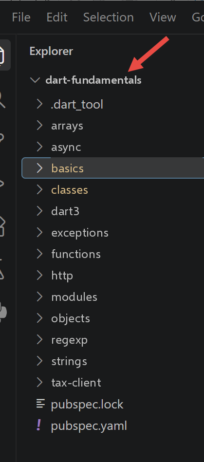
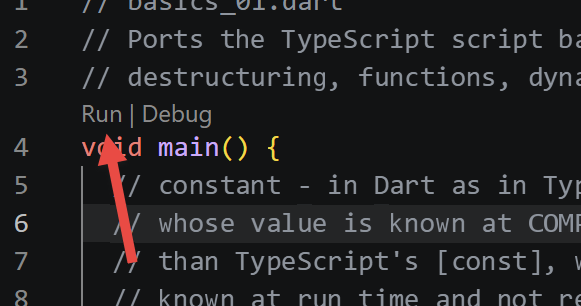
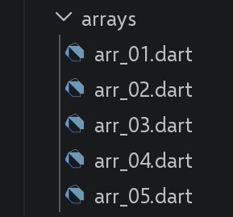
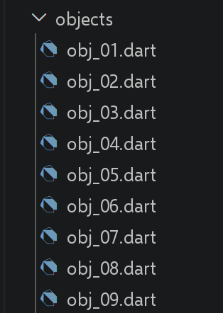
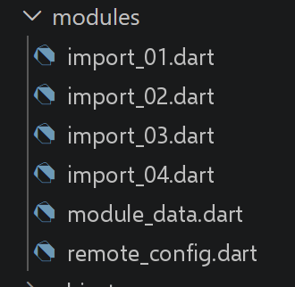
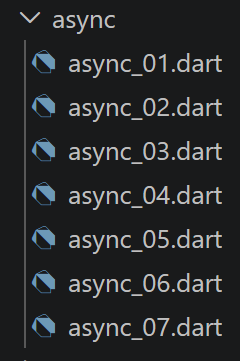

3. Os fundamentos

Este capítulo acompanha, script por script, a progressão do capítulo [The Fundamentals] do curso de TypeScript: mesmas seções, mesma ordem, com um script Dart correspondente a cada script TypeScript.
3.1. Noções básicas de Dart
Esta primeira seção aborda os fundamentos comuns a todos os programas Dart: variáveis, listas, laços, funções, escopo de variáveis, tipos básicos e conversões.

3.1.1. Script [basics_01]
| // basics_01.dart
// Porta o script TypeScript basics-01.ts: variáveis, arrays, laços,
// desestruturação, funções, tipagem dinâmica, operadores de comparação.
void main() {
// constante - em Dart, como em TypeScript, [const] declara uma constante
// cujo valor é conhecido em TEMPO DE COMPILAÇÃO (uma constante ainda mais restrita
// que o [const] do TypeScript, que exige apenas um valor
// conhecido em tempo de execução e não reatribuído)
const String name = "dupont";
// exibição na tela - [print] é o equivalente Dart de [console.log]
print("name : $name");
// um array (chamado de "lista" em Dart) com elementos de tipos diferentes
// [dynamic] porque esta lista mistura deliberadamente vários tipos
// (demonstração) - é o equivalente do [any] do TypeScript: o Dart
// deixa então de fazer qualquer verificação de tipos em tempo de compilação
// sobre os elementos desta lista
final List<dynamic> array = ["one", "two", 3, 4];
// seu número de elementos
int n = array.length;
// um laço
for (var i = 0; i < n; i++) {
print("array[$i] = ${array[i]}");
}
// inicialização de 2 variáveis com o conteúdo de uma lista
// O Dart não tem desestruturação de lista na atribuição como o
// TypeScript (const [a, b] = array); desde o Dart 3, um
// "list pattern" dá o mesmo resultado (veja dart3/*.dart
// para uma apresentação completa dos patterns)
final [string1, string2] = ["string1", "string2"];
// concatenação das 2 strings
final String string3 = string1 + string2;
// exibe o resultado
print([string1, string2, string3]);
// uso de uma função
display(string1);
// o tipo de uma variável pode ser obtido com runtimeType
// (o equivalente Dart do operador [typeof] do TypeScript)
displayType("n", n);
displayType("string1", string1);
displayType("array", array);
// [WARNING, fundamental difference with TypeScript] em TypeScript, o tipo
// [any] permite que uma variável mude de tipo durante a execução
// (n = "has changed" após n = 4 é válido). Em Dart, o tipo de uma
// variável é fixado de uma vez por todas por sua declaração: [n] foi
// declarada [int] acima, então n = "has changed" é um ERRO DE
// COMPILAÇÃO, e não um simples descuido tolerado em tempo de execução. Para
// obter um comportamento comparável ao de [any], seria preciso declarar
// [dynamic n = array.length;] desde o início - mas este script
// deliberadamente não faz isso, para destacar a diferença.
// A linha seguinte está portanto COMENTADA: descomentá-la causa um
// erro de compilação.
// n = "has changed";
print('type[variable n]=${n.runtimeType} (Dart forbids assigning it '
'anything other than an int: see the comment above)');
// uma função pode retornar um resultado
int res1 = f1(4);
print("res1=$res1");
// uma função pode retornar vários valores: o Dart não pode retornar
// um array JS heterogêneo diretamente em variáveis separadas com
// uma sintaxe [let x, y, z; [x, y, z] = f()] como o TypeScript. Usamos
// ou um Record (veja dart3/, a solução moderna e tipada), ou aqui,
// para ficar próximo do script original, um valor que desestruturamos
// com um pattern (Dart 3):
final (res2, res3, res4) = f2();
print("(res2,res3,res4)=${[res2, res3, res4]}");
// poderíamos ter recuperado esses valores em uma lista
final List<dynamic> t = f2ListAny();
for (var i = 0; i < t.length; i++) {
print("t[$i]=${t[i]}");
}
// alguns testes
for (var i = 0; i < t.length; i++) {
// exibe apenas as strings - [is String] é o equivalente Dart de
// [typeof(x) === "string"]
if (t[i] is String) {
print("t[$i]=${t[i]}");
}
}
// [WARNING, fundamental difference with TypeScript/JavaScript] o operador
// [==] do Dart corresponde SEMPRE ao operador estrito [===] do JavaScript:
// o Dart não tem operador de comparação com conversão
// implícita de tipo como o [==] não estrito do JavaScript.
// A comparação "2" == 2 é portanto sempre falsa em Dart, seja qual for
// o operador usado - o código abaixo tem portanto deliberadamente
// apenas um ramo (sem seção "com ==" e depois "com ===" como
// no script TypeScript original, já que essa distinção não existe).
if ("2" == 2) {
print("the string 2 is equal to the integer 2");
} else {
print("in Dart, the string '2' is never equal to the integer 2 "
"(no implicit conversion like JS's non-strict ==)");
}
// outros testes
for (var i = 0; i < t.length; i++) {
// exibe apenas os inteiros >10
if (t[i] is int && t[i] > 10) {
print("t[$i]=${t[i]}");
}
}
// um laço while
List<num> t2 = [8, 5, 0, -2, 3, 4];
var i = 0;
num sum = 0;
while (i < t2.length && t2[i] > 0) {
print("t2[$i]=${t2[i]}");
sum += t2[i];
i++;
}
print("sum=$sum");
}
// o programa principal termina aqui porque não há mais código executável
// exibição
// ----------------------------------
void display(String string) {
// exibe a string
print("string=$string");
}
// displayType
// ----------------------------------
void displayType(String name, dynamic variable) {
// exibe o tipo da variável - [runtimeType] é o equivalente Dart de
// [typeof]: ao contrário de [typeof], que retorna uma string genérica
// ("number", "string"...), [runtimeType] retorna o nome do tipo Dart
// REAL do valor (int, String, List<dynamic>...)
print("type[variable $name]=${variable.runtimeType}");
}
// ----------------------------------
int f1(int param) {
// soma 10 ao parâmetro
return param + 10;
}
// ----------------------------------
// retorna 3 valores como um Record (Dart 3) - o tipo Dart moderno e tipado
// para o que o TypeScript faria com um array heterogêneo [any[]]
(String, int, int) f2() {
return ("one", 0, 100);
}
// mesmo resultado que f2(), mas como uma lista [dynamic] para ficar
// o mais próximo possível do estilo [any[]] do script TypeScript original
List<dynamic> f2ListAny() {
return ["one", 0, 100];
}
|
Vamos comentar este código:
- linha 9: [const String name]: em Dart, [const] exige um valor conhecido no momento da COMPILAÇÃO — uma restrição mais rígida que a do [const] do TypeScript, que exige apenas um valor que não seja reatribuído durante a execução.
- Linha 18: [List<dynamic> array]: Dart chama de [list] o “array” do JavaScript, e [dynamic] faz o papel de [any] do TypeScript para desativar a verificação de tipos dos elementos.
- Linha 31: [final [string1, string2] = [...]]: Dart não oferece atribuição por desestruturação como o TypeScript; a versão Dart 3, o LIST PATTERN, usada aqui, produz o mesmo resultado (uma visão completa dos patterns é apresentada no capítulo [Dart 3.x New Features]).
- Linha 56: [n.runtimeType] substitui o operador [typeof] do TypeScript, com uma diferença: ele retorna um nome de tipo Dart REAL ([int], [List<dynamic>]...), e não apenas uma string genérica (["number"], ["string"]).
- A linha [n = "has changed";] está comentada de propósito: ao contrário de uma variável TypeScript do tipo [any], uma variável Dart mantém o tipo especificado em sua declaração — essa atribuição resultaria em um ERRO DE COMPILAÇÃO.
- Linha 69: [final (res2, res3, res4) = f2();]: uma função Dart não pode “retornar vários valores” em variáveis separadas, como faria um array heterogêneo em TypeScript; aqui [f2] retorna um RECORD (Dart 3), que é imediatamente desestruturado por um list pattern.
- Linha 94: [if ("2" == 2)]: o operador [] de Dart corresponde ao [=] estrito do JavaScript — não há equivalente Dart para o [==] não estrito do JavaScript, portanto não há um segundo caso a mostrar aqui, ao contrário do script TypeScript original.
Como lembrete, para executar um script Dart, você pode digitar o seguinte comando em um terminal:
dart run path_to_script.dart
Por exemplo, como mostrado abaixo:
se o seu terminal estiver posicionado na pasta que contém o script [basics_01.dart]. Você também pode clicar no termo [Run] no editor de texto, que aparece acima da função [main]:

O resultado da execução de [basics_01] é o seguinte:
| name : dupont
array[0] = one
array[1] = two
array[2] = 3
array[3] = 4
[string1, string2, string1string2]
string=string1
type[variable n]=int
type[variable string1]=String
type[variable array]=List<dynamic>
type[variable n]=int (Dart forbids assigning it anything other than an int: see the comment above)
res1=14
(res2,res3,res4)=[one, 0, 100]
t[0]=one
t[1]=0
t[2]=100
t[0]=one
in Dart, the string '2' is never equal to the integer 2 (no implicit conversion like JS's non-strict ==)
t[2]=100
t2[0]=8
t2[1]=5
sum=13
|
3.1.2. Script [basics_02]
| // basics_02.dart
// Porta basics-02.ts: var/let/const em TypeScript, var/final/const em Dart.
void main() {
// para inicializar uma variável, usamos [var] (tipo inferido) ou um
// tipo explícito (como [int] aqui) para variáveis MUTÁVEIS -
// o equivalente do [let] do TypeScript
int x = 4;
x++;
print(x);
// [final] para uma variável atribuída UMA ÚNICA VEZ em tempo de execução -
// o equivalente do [const] do TypeScript (um valor conhecido apenas em tempo
// de execução, mas não reatribuível depois)
final int y = 10;
x += y;
// proibido - x é mutável mas y não: y++ causa um erro de
// compilação, exatamente como em TypeScript
// y++;
// [NEW compared to TypeScript] o Dart oferece uma segunda palavra-chave,
// [const], mais restrita que [final]: uma constante [const] deve ser
// conhecida em TEMPO DE COMPILAÇÃO (como no início de basics_01.dart). Não há
// equivalente dessa distinção final/const em
// TypeScript, onde [const] significa apenas "não reatribuído".
const int z = 100; // conhecido em tempo de compilação: válido
print(z);
}
|
Vamos analisar este código:
- Uma variável mutável é declarada com um tipo explícito (ou [var]): equivale ao [let] do TypeScript.
- [final] é o equivalente de [const] em TypeScript: um valor atribuído uma única vez, mas cujo valor só é conhecido em tempo de execução.
- Linha 19: [NOVIDADE] Dart acrescenta uma segunda palavra-chave, [const], mais rígida que [final]: um valor [const] deve ser conhecido no momento da COMPILAÇÃO. TypeScript não possui essa distinção em dois níveis.
O resultado da execução é o seguinte:
3.1.3. Script [basics_03]
| // basics_03.dart
// Porta basics-03.ts: escopo de variáveis - uma variável de nível de arquivo
// (escopo "top-level", o equivalente Dart do escopo de módulo do TypeScript)
// é visível nas funções do mesmo arquivo.
// variável top-level (fora de qualquer função/classe), como o [let]
// top-level do script TypeScript
int count = 1;
void doSomething() {
// count é conhecida aqui: uma função enxerga as variáveis top-level do
// arquivo que a contém, exatamente como em TypeScript
print("count=$count");
}
void main() {
// chamada
doSomething();
}
|
Vamos comentar este código:
- Uma variável declarada fora de qualquer função (escopo [top-level]) é visível em todas as funções do mesmo arquivo — exatamente o papel de uma variável de escopo de módulo em TypeScript.
O resultado da execução é o seguinte:
3.1.4. Script [basics_04]
| // basics_04.dart
// Porta basics-04.ts: uma variável local a uma função oculta uma variável
// top-level de mesmo nome - o mesmo princípio de sombreamento do
// TypeScript.
// variável top-level
const int count = 1;
void doSomething() {
// a variável local oculta a variável top-level
const count = 2;
print("count inside function=$count");
}
void main() {
// variável top-level
print("count outside function=$count");
// variável local
doSomething();
}
|
Vamos comentar este código:
- Uma variável local de uma função, com o mesmo nome de uma variável top-level, a OCULTA ([shadowing]) dentro dessa função — o mesmo princípio de TypeScript.
O resultado da execução é o seguinte:
| count outside function=1
count inside function=2
|
3.1.5. Script [basics_05]
| // basics_05.dart
// Porta basics-05.ts: uma variável declarada dentro de uma função
// não é conhecida fora dela - mesmo princípio do TypeScript.
void doSomething() {
// variável local à função
const count = 2;
print("count inside function=$count");
}
void main() {
// count não é conhecida aqui: a linha seguinte, se descomentada,
// causaria um erro de compilação ("Undefined name 'count'"),
// exatamente como em TypeScript
// print("count outside function=$count");
doSomething();
}
|
Vamos comentar este código:
- Uma variável declarada dentro de uma função não é visível fora dela: referenciá-la fora da função resulta em erro de compilação, exatamente como em TypeScript.
O resultado da execução é o seguinte:
3.1.6. Script [basics_06]
Este script é mais curto que seu equivalente em TypeScript: veja o comentário no início do arquivo para saber o motivo.
| // basics_06.dart
// Porta basics-06.ts: escopo de bloco.
//
// [WARNING, fundamental difference with TypeScript/JavaScript] o TypeScript tem
// TRÊS palavras-chave de declaração com escopos diferentes: [let] e [const]
// têm escopo de BLOCO, mas [var] (herdada do JavaScript) tem escopo de
// FUNÇÃO - uma variável [var] declarada em um bloco {...} "vaza"
// para fora desse bloco, que é precisamente o que este script mostra com [count3].
// O Dart NÃO tem equivalente desse [var]: [var], [final] e [const] têm
// SEMPRE escopo de bloco em Dart, sem exceção. Este script é portanto
// mais curto que o original: há apenas dois casos a mostrar, não três,
// e ambos se comportam como os casos [let]/[const] do TypeScript.
void main() {
// [var] (tipo inferido) define uma variável com escopo de bloco
{
// a variável [count] só é conhecida neste bloco
var count = 1;
print("count=$count");
}
// a variável [count] não é conhecida aqui: a linha seguinte, se
// descomentada, causaria um erro de compilação
// count++;
// [final] define uma variável (não reatribuível) com escopo de bloco
{
// a variável [count2] só é conhecida neste bloco
final count2 = 1;
print("count=$count2");
}
// a variável [count2] também não é conhecida aqui
// count2++;
// não há um 3º caso em Dart: nenhuma palavra-chave de declaração
// permite que uma variável "vaze" para fora do bloco onde é declarada,
// ao contrário do [var] do TypeScript/JavaScript usado para [count3]
// no script original.
}
|
Vamos comentar este código:
- [var] e [final] têm SEMPRE escopo de BLOCO em Dart, sem exceção.
- Este script mostra apenas os DOIS casos, enquanto o script TypeScript mostrava três: Dart não tem equivalente ao [var] do JavaScript, cujo escopo é o de FUNÇÃO (e não o de bloco) e que “vaza” para fora de um bloco [{...}] — fonte clássica de bugs em JavaScript, mas estruturalmente impossível em Dart.
O resultado da execução é o seguinte:
3.1.7. Script [basics_07]
| // basics_07.dart
// Porta basics-07.ts: os principais tipos de dados básicos e sua
// introspecção com runtimeType (o equivalente Dart de typeof).
void main() {
const int var1 = 10;
const String var2 = "abc";
const bool var3 = true;
const List<int> var4 = [1, 2, 3];
const Map<String, String> var5 = {'name': 'axèle'};
// uma variável de tipo função - o Dart tipa funções com a
// notação [ReturnType Function(parameters)]
int Function() var6 = () => 3;
// exibição dos tipos com runtimeType
print("var1.runtimeType=${var1.runtimeType}");
print("var2.runtimeType=${var2.runtimeType}");
print("var3.runtimeType=${var3.runtimeType}");
print("var4.runtimeType=${var4.runtimeType}");
print("var5.runtimeType=${var5.runtimeType}");
print("var6.runtimeType=${var6.runtimeType}");
}
|
Vamos comentar este código:
- linha 12: [int Function() var6 = () => 3;]: em Dart, as funções são definidas pela notação [ReturnType Function(parameters)] — uma função é um tipo como outro qualquer, atribuível a uma variável.
- linhas 15–20: [runtimeType] exibe, para cada variável, seu tipo Dart real ([int], [String], [List<int>], [Map<String, String>] (linha 9), [() => int]...).
O resultado da execução é o seguinte:
| var1.runtimeType=int
var2.runtimeType=String
var3.runtimeType=bool
var4.runtimeType=List<int>
var5.runtimeType=_ConstMap<String, String>
var6.runtimeType=() => int
|
3.1.8. Script [basics_08]
Este script difere em natureza de seu equivalente em TypeScript: enquanto basics-08.ts ilustrava as conversões IMPLÍCITAS do JavaScript, este script mostra as conversões EXPLÍCITAS que devem ser escritas no lugar delas, já que Dart não realiza nenhuma conversão desse tipo (veja o comentário no início do arquivo para os detalhes das três regras relevantes).
| // basics_08.dart
// Porta basics-08.ts.
//
// [WARNING, fundamental difference with TypeScript/JavaScript] este script
// muda completamente de natureza em relação ao original. O JavaScript (e
// portanto o TypeScript, que apenas acrescenta tipos verificados em
// TEMPO DE COMPILAÇÃO mas mantém o comportamento do JavaScript em TEMPO DE EXECUÇÃO)
// realiza muitas conversões de tipo IMPLÍCITAS em tempo de execução:
// - em um teste [if (data) ...], qualquer valor é convertido em
// booleano ("" e 0 são "falsy", "abcd" e [1,2,3] são "truthy"...);
// - o operador [+] realiza uma adição SE OS DOIS operandos são
// números, caso contrário uma concatenação de strings ("12" * 1 é 12, mas
// "12" + 1 é "121");
// - true/false são convertidos em 1/0 em um cálculo...
// O Dart NÃO tem NENHUMA dessas conversões implícitas:
// - a condição de um [if] deve ser um [bool], ponto final: [if
// ("abcd")] é um ERRO DE COMPILAÇÃO, não uma conversão automática;
// - [+] exige operandos do MESMO tipo (String+String, ou num+num): "12"
// + 1 é um erro de compilação;
// - um [bool] nunca é convertido implicitamente em número.
// Este script mostra portanto, ao contrário do script TypeScript original, as
// conversões EXPLÍCITAS que devem ser escritas no lugar de cada uma dessas
// conversões implícitas.
void main() {
print("---------------[No implicit conversion to a boolean]------"
"------------------------------");
// em TypeScript, [showBool(value)] testa diretamente a "truthiness" de
// qualquer valor. Em Dart, você mesmo deve escrever o teste
// explícito correspondente ao que realmente quer verificar: uma string
// vazia, uma lista vazia, um valor nulo... [showBool] abaixo
// aceita portanto deliberadamente apenas um [Object?] (anulável) e documenta,
// para cada família de tipos, a conversão EXPLÍCITA equivalente
showBoolEquivalent("abcd", (v) => (v as String).isNotEmpty);
showBoolEquivalent("", (v) => (v as String).isNotEmpty);
showBoolEquivalent([1, 2, 3], (v) => (v as List).isNotEmpty);
showBoolEquivalent(<int>[], (v) => (v as List).isNotEmpty);
showBoolEquivalent(null, (v) => v != null);
showBoolEquivalent(0.0, (v) => (v as double) != 0.0);
showBoolEquivalent(0, (v) => (v as int) != 0);
showBoolEquivalent(4.6, (v) => (v as double) != 0.0);
print("---------------[Explicit conversion of a string to a number]"
"------------------------------");
showNumber("12");
showNumber("45.67");
showNumber("abcd");
print("---------------[Explicit conversion to a boolean]------------"
"------------------------------");
// ao contrário de Boolean(data) em JavaScript (que aplica as regras de
// "truthiness"), não existe função genérica equivalente em Dart:
// cada tipo deve fornecer sua própria noção de "vazio/não vazio" (mostrada
// acima com showBoolEquivalent)
print("---------------[Explicit conversion to a number]-------------"
"-----------------------------");
showNumber2("12.45");
showNumber2(true); // este caso é tratado separadamente abaixo
showNumber2(null);
print("---------------[Explicit conversion to a string]-------------"
"-----------------------------");
showString(5);
showString(6.7);
showString(false);
showString(null);
print("---------------[Other cases]------------------------------");
const String string1 = '1000.78';
// em Dart, [+] entre uma String e um num é um erro de compilação:
// um dos dois operandos deve ser convertido explicitamente
// conversão de string1 em número, depois adição
final double data1 = double.parse(string1) + 1.034;
print("data1=$data1 (explicit conversion required, unlike "
"'1000.78' + 1.034 in JS which concatenates into a string)");
// conversão inversa: o número em string, depois concatenação
final String data2 = (1.034).toString() + string1;
print("data2=$data2 (here we knowingly choose concatenation, by "
"converting the number)");
// true/false NUNCA são convertidos implicitamente em número em Dart -
// você deve escrever o mapeamento desejado. [boolValue] é uma
// variável (e não o literal [true] diretamente): com um literal,
// dart analyze veria o ramo [: 0.0] como código morto (sempre
// falso), pois a condição seria então conhecida em tempo de compilação.
// (deliberadamente [final], não [const]: um [const] continuaria sendo uma
// constante de tempo de compilação, e dart analyze ainda detectaria o código morto)
final bool boolValue = true;
final double data3 = boolValue ? 1.0 : 0.0;
print("data3=$data3 (explicit equivalent of JS's 'true * 1.18', "
"combined with the multiplication below)");
print("true converted then multiplied by 1.18 = ${data3 * 1.18}");
}
// exibe, para um dado valor, a conversão booleana EXPLÍCITA que
// substitui a conversão implícita do JavaScript - [tester] codifica a
// maneira "certa" de testar esse valor em particular
void showBoolEquivalent(Object? data, bool Function(Object?) tester) {
print("[data=$data], [type(data)]=${data.runtimeType}, "
"[equivalent explicit test]=${tester(data)}");
}
void showNumber(String data) {
// ao contrário de [data * 1] em JS (que falha silenciosamente com NaN se
// data não for numérico), [double.parse] lança uma
// [FormatException] explícita em caso de falha - nós a capturamos aqui para ilustrar o
// caso "abcd" do script original
try {
final number = double.parse(data);
print("[data=$data], [number]=$number, [type(number)]="
"${number.runtimeType}");
} on FormatException {
print("[data=$data] : FormatException, this is not a valid number "
"(unlike Number('$data') in JS, which would return NaN without "
"throwing an error)");
}
}
void showNumber2(Object? data) {
// conversão explícita conforme o tipo real do dado - não há
// nenhuma função Dart única equivalente a Number(...) que aceite
// indiferentemente um num, um bool ou null
double? number;
if (data is num) {
number = data.toDouble();
} else if (data is String) {
number = double.tryParse(data);
} else if (data is bool) {
number = data ? 1.0 : 0.0;
}
print("[data=$data], [type(data)]=${data.runtimeType}, [number]=$number, "
"[type(number)]=${number.runtimeType}");
}
void showString(Object? data) {
// toString() existe em (quase) todo objeto Dart, inclusive em null
// (retorna "null") - bem próximo, aqui, do comportamento de String(data)
final String string = data.toString();
print("[data=$data], [type(data)]=${data.runtimeType}, [string]=$string, "
"[type(string)]=${string.runtimeType}");
}
|
Vamos analisar este código:
- [showBoolEquivalent]: Dart não tem conversão implícita para [bool] — uma condição [if] exige um [bool] REAL; cada família de tipos (string, lista, número) deve oferecer explicitamente seu próprio teste de “vazio/não vazio”.
- Linha 126: [double.parse]/[double.tryParse] substituem a conversão implícita [Number(string)] do JavaScript: [parse] lança uma [FormatException] explícita em caso de falha; [tryParse] retorna [null] — nunca um [NaN] silencioso.
- Linha 73: [double.parse(string1) + 1.034]: [+] entre uma [String] e um [num] é um erro de COMPILAÇÃO em Dart — ao contrário de ['1000.78' + 1.034] em JavaScript, que concatena silenciosamente.
- [true ? 1.0 : 0.0]: [bool] não é convertido implicitamente em número em Dart — você mesmo deve escrever o mapeamento desejado, enquanto [true * 1.18] é válido em JavaScript.
O resultado da execução é o seguinte:
| ---------------[No implicit conversion to a boolean]------------------------------------
[data=abcd], [type(data)]=String, [equivalent explicit test]=true
[data=], [type(data)]=String, [equivalent explicit test]=false
[data=[1, 2, 3]], [type(data)]=List<int>, [equivalent explicit test]=true
[data=[]], [type(data)]=List<int>, [equivalent explicit test]=false
[data=null], [type(data)]=Null, [equivalent explicit test]=false
[data=0.0], [type(data)]=double, [equivalent explicit test]=false
[data=0], [type(data)]=int, [equivalent explicit test]=false
[data=4.6], [type(data)]=double, [equivalent explicit test]=true
---------------[Explicit conversion of a string to a number]------------------------------
[data=12], [number]=12.0, [type(number)]=double
[data=45.67], [number]=45.67, [type(number)]=double
[data=abcd] : FormatException, this is not a valid number (unlike Number('abcd') in JS, which would return NaN without throwing an error)
---------------[Explicit conversion to a boolean]------------------------------------------
---------------[Explicit conversion to a number]------------------------------------------
[data=12.45], [type(data)]=String, [number]=12.45, [type(number)]=double
[data=true], [type(data)]=bool, [number]=1.0, [type(number)]=double
[data=null], [type(data)]=Null, [number]=null, [type(number)]=Null
---------------[Explicit conversion to a string]------------------------------------------
[data=5], [type(data)]=int, [string]=5, [type(string)]=String
[data=6.7], [type(data)]=double, [string]=6.7, [type(string)]=String
[data=false], [type(data)]=bool, [string]=false, [type(string)]=String
[data=null], [type(data)]=Null, [string]=null, [type(string)]=String
---------------[Other cases]------------------------------
data1=1001.814 (explicit conversion required, unlike '1000.78' + 1.034 in JS which concatenates into a string)
data2=1.0341000.78 (here we knowingly choose concatenation, by converting the number)
data3=1.0 (explicit equivalent of JS's 'true * 1.18', combined with the multiplication below)
true converted then multiplied by 1.18 = 1.18
|
3.1.9. Script [basics_09]
Ao contrário das novidades do ECMAScript, que serão substituídas pelo capítulo [Dart 3.x New Features], este script permanece: a maioria desses operadores existe nativamente em Dart há muito tempo, às vezes bem antes de 2020.
| // basics_09.dart
// Porta basics-09.ts (os operadores modernos do ECMAScript 2020-2021).
// Ao contrário das "novidades do ECMAScript", que serão substituídas mais
// adiante pelo capítulo Novidades do Dart 3.x, este script permanece AQUI: a maioria
// desses operadores existe nativamente em Dart há muito tempo (às vezes
// desde o Dart 2.0/2.12, bem antes de 2020), fazendo portanto parte dos
// fundamentos do Dart, assim como o resto deste capítulo.
void main() {
// ------------------------------------------------------------------------
// 1) o operador de coalescência nula [??] - existe em Dart há
// muito tempo (Dart 2.0) e se comporta EXATAMENTE como em TypeScript:
// só aciona o valor padrão se o valor for null (o Dart
// não tem valor [undefined] separado de [null])
// ------------------------------------------------------------------------
// tipado [int?] (anulável), e não [int]: com um tipo não anulável,
// dart analyze veria, com razão, que [?? 10] nunca pode
// ser acionado (o tipo já garante que quantity1 não é null) - ao passo que
// o objetivo aqui é justamente comparar o comportamento de [??] com
// um valor não nulo (quantity1) e com um valor nulo (quantity2)
const int? quantity1 = 0;
// em Dart, não há operador [||] para esse uso: o [||] lógico do Dart
// só aceita operandos [bool], então "quantity1 ||
// 10" seria um erro de compilação - há portanto apenas um
// operador a mostrar aqui, [??], sem o risco de bug ilustrado pelo
// script TypeScript original (0 é de qualquer forma um [int], nunca
// interpretado como "false")
print("quantity1 ?? 10 = ${quantity1 ?? 10}"); // -> 0 (quantity1 não é null)
const int? quantity2 = null;
print("quantity2 ?? 10 = ${quantity2 ?? 10}"); // -> 10 (quantity2 é null)
// ------------------------------------------------------------------------
// 2) encadeamento opcional [?.] - também existe em Dart há muito tempo
// ------------------------------------------------------------------------
final person1 = PersonWithOptionalAddress(
name: "Dupont",
address: Address(city: "Nantes"),
);
final person2 = PersonWithOptionalAddress(name: "Martin"); // no address!
// [?.] interrompe a avaliação e retorna [null] assim que uma etapa é nula,
// em vez de lançar uma exceção "NoSuchMethodError" sobre null
print("person1 city = ${person1.address?.city}");
print("person2 city = ${person2.address?.city}"); // -> null, sem erro
// [?.] e [??] podem ser combinados para fornecer um valor de reserva
print("person2 city (with default) = ${person2.address?.city ?? "unknown city"}");
// [?.] também funciona em chamadas de método...
final objectWithMethod = ObjectWithMethod();
print("existing method call : ${objectWithMethod.sayHello()}");
// ...e no acesso a um elemento de lista (via o operador [?[ ]])
final List<int>? listOrNull = null;
print("element of a missing list : ${listOrNull?[0]}"); // -> null
// ------------------------------------------------------------------------
// 3) os operadores de atribuição lógica [??=]
// ------------------------------------------------------------------------
// [a ??= b] equivale a [a = a ?? b]: atribui b somente se a for null -
// este existe em Dart, com exatamente a mesma sintaxe que em
// do TypeScript
final config = Configuration(delay: 0, page: null);
config.delay ??= 1000; // delay já é 0 (valor válido) -> permanece inalterado
config.page ??= 1; // page é null -> passa a ser 1
print("config after ??= : delay=${config.delay}, page=${config.page}");
// [WARNING, fundamental difference with TypeScript] o Dart NÃO TEM
// os operadores [||=] e [&&=]: o [||] e o [&&] do Dart só aceitam
// valores [bool] (como visto no ponto 1), e não há atalho de
// atribuição para este caso - o teste deve ser escrito explicitamente
String displayedMessage = "";
// equivalente explícito de [displayedMessage ||= "default message"]:
// em Dart, você mesmo deve escrever o teste de "falso" que faz sentido (aqui:
// string vazia) em vez de contar com uma noção genérica de "falso"
if (displayedMessage.isEmpty) {
displayedMessage = "default message";
}
print("displayedMessage after the if equivalent to ||= : $displayedMessage");
// equivalente explícito de [a &&= b] (atribui b somente se a já for
// "verdadeiro"): novamente, um simples if, devendo [a] ser um booleano de verdade
bool loggedInUser = true;
if (loggedInUser) {
loggedInUser = true; // o "b" de a &&= b
}
print("loggedInUser after the if equivalent to &&= : $loggedInUser");
// ------------------------------------------------------------------------
// 4) separadores numéricos [_] em literais
// ------------------------------------------------------------------------
// [WARNING, difference with TypeScript] o Dart NÃO aceita o caractere [_]
// como separador visual em um literal numérico: "1_000_000"
// é um erro de sintaxe em Dart. O número deve ser escrito "por extenso",
// eventualmente formatando-o para exibição com o pacote [intl]
// (NumberFormat) se a legibilidade na exibição for o objetivo.
const int oneMillion = 1000000;
print("oneMillion = $oneMillion");
// ------------------------------------------------------------------------
// 5) BigInt
// ------------------------------------------------------------------------
// [WARNING, fundamental difference with TypeScript/JavaScript] o tipo
// [number] do JavaScript é um ponto flutuante de precisão dupla, que perde
// precisão além de cerca de 2^53 - daí a necessidade de um tipo
// [BigInt] separado para inteiros exatos muito grandes (números de cartão
// bancário, identificadores...). O tipo [int] do Dart, por outro lado, é um VERDADEIRO
// inteiro com sinal de 64 bits em todas as plataformas nativas (VM, AOT): permanece
// exato até 2^63-1, bem além do [Number.MAX_SAFE_INTEGER] do JavaScript
// (2^53-1) - a maioria dos usos que exigiriam um
// BigInt em JavaScript simplesmente não precisa de um em Dart.
print("the Dart equivalent of Number.MAX_SAFE_INTEGER does not exist: "
"int is exact up to 9223372036854775807 (2^63-1)");
const int bigNumber = 9007199254740993; // > 2^53, impreciso em JS, exato aqui
print("bigNumber = $bigNumber (exact, whereas it would lose its "
"precision stored in a JavaScript Number)");
// para uma necessidade realmente ilimitada (além de 64 bits, p. ex. cálculo
// criptográfico), o Dart NÃO oferece um tipo BigInt em sua biblioteca
// padrão (dart:core): é preciso então recorrer a um pacote
// de terceiros como package:fixnum, ou implementar seu próprio cálculo -
// uma necessidade bem mais rara que em JavaScript, dado o exposto acima.
}
// ------------------------------------------------------------------------
// classes utilitárias para a demonstração do encadeamento opcional
// ------------------------------------------------------------------------
class Address {
final String city;
Address({required this.city});
}
class PersonWithOptionalAddress {
final String name;
final Address? address; // address é opcional (anulável)
PersonWithOptionalAddress({required this.name, this.address});
}
class ObjectWithMethod {
String sayHello() => "hello!";
}
class Configuration {
int? delay;
int? page;
Configuration({this.delay, this.page});
}
|
Vamos comentar este código:
- [??] e [?.] (coalescência nula, encadeamento opcional) fazem parte de Dart há muito tempo e se comportam exatamente como em TypeScript.
- Linha 63: [config.delay ??= 1000;]: a atribuição lógica [??=] existe em Dart, com a mesma sintaxe de TypeScript.
- Dart não tem equivalente para os operadores [||=] e [&&=]: seus [||]/[&&] aceitam apenas [bool], portanto não existe um conceito genérico de “falso” a contornar — um simples [if] explícito os substitui.
- [1_000_000] é um ERRO DE SINTAXE em Dart: ao contrário de TypeScript, nenhum separador visual é permitido em um literal numérico.
- [int] é um inteiro de 64 bits com sinal EXATO em qualquer plataforma Dart nativa, até 2^63-1 — muito além de [Number.MAX_SAFE_INTEGER] (2^53-1): a maioria dos casos de uso que exigiria um [BigInt] em JavaScript simplesmente não precisa dele em Dart, que, aliás, não oferece [BigInt] em sua biblioteca padrão.
O resultado da execução é o seguinte:
| quantity1 ?? 10 = 0
quantity2 ?? 10 = 10
person1 city = Nantes
person2 city = null
person2 city (with default) = unknown city
existing method call : hello!
element of a missing list : null
config after ??= : delay=0, page=1
displayedMessage after the if equivalent to ||= : default message
loggedInUser after the if equivalent to &&= : true
oneMillion = 1000000
the Dart equivalent of Number.MAX_SAFE_INTEGER does not exist: int is exact up to 9223372036854775807 (2^63-1)
bigNumber = 9007199254740993 (exact, whereas it would lose its precision stored in a JavaScript Number)
|
3.1.10. Conclusão
Esta primeira seção estabeleceu as bases: tipagem estrita sem coerção implícita, a distinção entre [final] e [const], escopo sistemático de bloco e ausência de atribuição por desestruturação (compensada pelos patterns do Dart 3). Essas diferenças reaparecerão ao longo de todo o curso.
3.2. Arrays

Em Dart, um “array” é chamado de [list] ([List]). Esta seção aborda as operações clássicas com listas: referência versus valor, iteração, métodos nas extremidades, métodos funcionais e os métodos “imutáveis” recentes do JavaScript.
3.2.1. Script [arr_01]
| // arr_01.dart
// Porta arr-01.ts: uma lista é um objeto manipulado por sua referência,
// exatamente como um array JavaScript/TypeScript.
void main() {
final List<int> arr1 = [1, 2, 3];
// cópia da REFERÊNCIA, não cópia do conteúdo
final List<int> arr2 = arr1;
// arr1 e arr2 apontam para a mesma lista - [identical] é o equivalente
// Dart de [===] aplicado à IDENTIDADE do objeto (em vez de [==], que para
// Lists compara o conteúdo; veja a observação abaixo)
print("identical(arr1, arr2) : ${identical(arr1, arr2)}");
// a lista pode ser modificada tanto por arr1 quanto por arr2
arr2[1] = 10;
print("arr1=$arr1");
print("arr2=$arr2");
// [Dart-specific remark] ao contrário do JavaScript, onde [arr1 === arr2]
// e [arr1 == arr2] são equivalentes para arrays (comparação de referência
// nos dois casos), o operador [==] do Dart em um objeto List
// também compara a REFERÊNCIA por padrão (não o conteúdo): []
// == [] é portanto falso em Dart, como mostra a linha seguinte
print("[1, 2] == [1, 2] (two different lists) : ${[1, 2] == [1, 2]}");
}
|
Vamos comentar este código:
- linha 7: [final List<int> arr2 = arr1;] copia a REFERÊNCIA, não o conteúdo: [arr1] e [arr2] referem-se à mesma lista, exatamente como em JavaScript.
- Linha 11: [identical(arr1, arr2)] é o equivalente Dart de [===] aplicado a objetos (teste de IDENTIDADE).
- Linha 22: [[1, 2] == [1, 2]] é FALSE em Dart: ao contrário do JavaScript, em que [===] e [] são equivalentes em arrays (comparação de referência nos dois casos), o operador [] de Dart aplicado a uma [List] TAMBÉM compara, por padrão, a referência, e não o conteúdo.
O resultado da execução é o seguinte:
| identical(arr1, arr2) : true
arr1=[1, 10, 3]
arr2=[1, 10, 3]
[1, 2] == [1, 2] (two different lists) : false
|
3.2.2. Script [arr_02]
Uma diferença importante a observar antes deste script: veja o comentário no início do arquivo sobre a ausência de listas esparsas em Dart.
| // arr_02.dart
// Porta arr-02.ts.
//
// [WARNING, fundamental difference with TypeScript/JavaScript] um array
// JavaScript é "esparso": é possível escrever arr[3] = 100 em um
// array vazio, o que estende automaticamente seu comprimento para 4, deixando
// "buracos" (índices sem valor, diferentes de undefined). Uma List
// Dart NÃO é esparsa: seus índices válidos vão sempre de 0 a length-1
// sem buracos, e escrever arr[3] em uma lista de comprimento 0 lança um
// [RangeError] (índice fora dos limites) - a lista nunca cresce
// sozinha por atribuição indexada. Para crescer, use [add] (no fim)
// ou um dos métodos da próxima seção (arr_03.dart, arr_04.dart).
void main() {
// [dynamic] porque esta lista conterá valores de tipos diferentes
final List<dynamic> arr = [];
print("arr=$arr, length=[${arr.length}]");
print("-------------------------------");
// nenhum equivalente direto de arr[3] = 100 em uma lista vazia: construímos
// o mesmo resultado visual ("buracos") preenchendo explicitamente com
// null até o índice desejado, o que torna os buracos VISÍVEIS (nulls),
// onde o JavaScript os deixa invisíveis (nem valor, nem undefined
// explícito)
while (arr.length <= 3) {
arr.add(null);
}
arr[3] = 100;
arr[1] = "eight";
print("arr=$arr, length=[${arr.length}]");
print("-------------------------------");
// toString
print("arr.toString=[${arr.toString()}]");
print("-------------------------------");
// as chaves de uma lista Dart são sempre 0..length-1: não há método
// [keys()] separado, os índices são usados diretamente com um [for]
for (var key = 0; key < arr.length; key++) {
print("key=[$key], value=[${arr[key]}]");
}
print("-------------------------------");
// os valores da lista - [arr] JÁ é o iterável de seus valores,
// ao contrário do JavaScript, onde arr.values() retorna um iterador separado
for (var value in arr) {
print("value=[$value]");
}
}
|
Vamos comentar este código:
- Uma lista Dart NUNCA é esparsa: seus índices válidos vão sempre de 0 a [length-1], sem lacunas.
- Linha 10: escrever em [arr[3]] de uma lista vazia lança um [RangeError] — ao contrário do JavaScript, em que escrever [arr[3] = 100] em um array vazio o estende automaticamente, criando “lacunas” invisíveis.
- O script preenche explicitamente com [null] os valores até o índice desejado para recriar, de forma VISÍVEL, o mesmo efeito visual dos buracos do JavaScript.
- Linha 45: [for (var value in arr)]: uma [List] Dart já é um iterável sobre seus valores — não é preciso um método separado como em JavaScript.
O resultado da execução é o seguinte:
| arr=[], length=[0]
-------------------------------
arr=[null, eight, null, 100], length=[4]
-------------------------------
arr.toString=[[null, eight, null, 100]]
-------------------------------
key=[0], value=[null]
key=[1], value=[eight]
key=[2], value=[null]
key=[3], value=[100]
-------------------------------
value=[null]
value=[eight]
value=[null]
value=[100]
|
3.2.3. Script [arr_03]
| // arr_03.dart
// Porta arr-03.ts: iteração sobre uma lista e seus métodos de manipulação
// nas duas extremidades (pop/push/shift/unshift), bem como splice.
void main() {
// uma lista pode conter dados de tipos diferentes
final List<dynamic> arr = [
1,
2,
"one",
"two",
true,
[10, 20],
{'prop1': 10, 'prop2': "abc"},
];
// print pode exibir o conteúdo de uma lista
show(1);
print("arr=$arr");
show(2);
// iteração sobre a lista com forEach
arr.forEach((element) {
print("element=$element ${element.runtimeType}");
});
show("2b");
// iteração com for-in, mais idiomática em Dart que forEach para uma
// iteração simples (forEach não aceita break/continue, for-in aceita)
for (final element in arr) {
print("element=$element ${element.runtimeType}");
}
show(3);
// iteração sobre a lista com um for indexado clássico
for (var i = 0; i < arr.length; i++) {
print("i=$i arr[i]=${arr[i]}");
}
show(4);
// modificação de arr[i]
arr[5] = [];
print("arr=$arr");
show(5);
// removemos o último elemento da lista - removeLast() é
// o equivalente Dart de pop()
var element = arr.removeLast();
print("element=$element arr=$arr");
show(6);
// adicionamos um elemento no fim da lista - add() é o equivalente de
// push() (para um único elemento)
arr.add('xyz');
print("arr=$arr");
show(7);
// adicionamos um elemento no início da lista - insert(0, ...) é
// o equivalente de unshift()
arr.insert(0, 1000);
print("arr=$arr");
show(8);
// removemos o 1º elemento - removeAt(0) é o equivalente de shift()
element = arr.removeAt(0);
print("element=$element arr=$arr");
show(9);
// removemos o elemento nº 2 da lista - não existe método [splice]
// em Dart; primeiro obtemos o subconjunto relevante com
// [sublist], depois o removemos com [removeRange]
var elements = arr.sublist(2, 3);
arr.removeRange(2, 3);
print("element(s)=$elements arr=$arr");
show(10);
// removemos dois elementos da lista a partir do elemento nº 1
elements = arr.sublist(1, 3);
arr.removeRange(1, 3);
print("element(s)=$elements arr=$arr");
}
// função
void show(Object param) {
print("[$param :::::::::::::::::::::::::::::::::::::::::::::::::::::::::"
":::::::::::::: ]");
}
|
Vamos comentar este código:
- Linha 20: [arr.forEach(...)] existe, mas em Dart prefere-se [for (final element in arr)] (linha 26) para um laço simples: ao contrário de [forEach], um [for-in] aceita [break] e [continue].
- Linha 41: [arr.removeLast()] substitui [pop()]; [arr.add(...)] (linha 46) substitui [push()] (para um único elemento); [arr.insert(0, ...)] (linha 51) substitui [unshift()] e [arr.removeAt(0)] (linha 55) substitui [shift()].
- Dart não tem um método chamado [splice]: primeiro, obtenha o subconjunto desejado com [sublist] e, depois, remova-o com [removeRange] — duas etapas em vez de uma única chamada.
O resultado da execução é o seguinte:
| [1 ::::::::::::::::::::::::::::::::::::::::::::::::::::::::::::::::::::::: ]
arr=[1, 2, one, two, true, [10, 20], {prop1: 10, prop2: abc}]
[2 ::::::::::::::::::::::::::::::::::::::::::::::::::::::::::::::::::::::: ]
element=1 int
element=2 int
element=one String
element=two String
element=true bool
element=[10, 20] List<int>
element={prop1: 10, prop2: abc} _Map<String, Object>
[2b ::::::::::::::::::::::::::::::::::::::::::::::::::::::::::::::::::::::: ]
element=1 int
element=2 int
element=one String
element=two String
element=true bool
element=[10, 20] List<int>
element={prop1: 10, prop2: abc} _Map<String, Object>
[3 ::::::::::::::::::::::::::::::::::::::::::::::::::::::::::::::::::::::: ]
i=0 arr[i]=1
i=1 arr[i]=2
i=2 arr[i]=one
i=3 arr[i]=two
i=4 arr[i]=true
i=5 arr[i]=[10, 20]
i=6 arr[i]={prop1: 10, prop2: abc}
[4 ::::::::::::::::::::::::::::::::::::::::::::::::::::::::::::::::::::::: ]
arr=[1, 2, one, two, true, [], {prop1: 10, prop2: abc}]
[5 ::::::::::::::::::::::::::::::::::::::::::::::::::::::::::::::::::::::: ]
element={prop1: 10, prop2: abc} arr=[1, 2, one, two, true, []]
[6 ::::::::::::::::::::::::::::::::::::::::::::::::::::::::::::::::::::::: ]
arr=[1, 2, one, two, true, [], xyz]
[7 ::::::::::::::::::::::::::::::::::::::::::::::::::::::::::::::::::::::: ]
arr=[1000, 1, 2, one, two, true, [], xyz]
[8 ::::::::::::::::::::::::::::::::::::::::::::::::::::::::::::::::::::::: ]
element=1000 arr=[1, 2, one, two, true, [], xyz]
[9 ::::::::::::::::::::::::::::::::::::::::::::::::::::::::::::::::::::::: ]
element(s)=[one] arr=[1, 2, two, true, [], xyz]
[10 ::::::::::::::::::::::::::::::::::::::::::::::::::::::::::::::::::::::: ]
element(s)=[2, two] arr=[1, true, [], xyz]
|
3.2.4. Script [arr_04]
| // arr_04.dart
// Porta arr-04.ts: os métodos funcionais de manipulação de listas -
// map, reduce, filter (where), find (firstWhere), findIndex (indexWhere),
// indexOf, lastIndexOf, sort.
void main() {
// uma lista
final List<int> arr = List.generate(10, (i) => i * 10);
print("arr=$arr");
// map - retorna um Iterable (preguiçoso); .toList() o materializa como lista,
// como o .map() do JavaScript sempre faz
final arr2 = arr.map((element) => {'prop1': element, 'prop2': element * element}).toList();
print("arr=$arr");
print("arr2=$arr2");
// reduce SEM valor inicial - mesma assinatura que em JavaScript
final sum = arr.reduce((accumulator, currentValue) => accumulator + currentValue);
print("sum arr=$sum");
// [WARNING, difference with TypeScript] o Dart não tem reduce() COM um
// valor inicial: esse é o papel de um método separado, [fold], cujo
// 1º parâmetro é justamente o valor inicial
final sum2 = arr.fold(10, (accumulator, currentValue) => accumulator + currentValue);
print("sum2 arr=$sum2");
// filter -> where (retorna um Iterable; .toList() para obter uma lista)
final arr4 = arr.where((element) => element > 50).toList();
print("arr4=$arr4");
// find -> firstWhere
final element1 = arr.firstWhere((element) => element > 20);
print("element1=$element1");
// findIndex -> indexWhere
final index1 = arr.indexWhere((element) => element == 20);
print("index1 20=$index1");
// indexOf - idêntico ao JavaScript
final index2 = arr.indexOf(30);
print("index2 30=$index2");
final index3 = arr.indexOf(31);
print("index3 31=$index3");
// lastIndexOf - idêntico ao JavaScript
final index4 = [4, 5, 4, 2].lastIndexOf(4);
print("index4 4=$index4");
// sort - [WARNING, difference with TypeScript] ao contrário do sort() do JavaScript,
// que retorna o array ordenado (além de modificá-lo no
// lugar), o sort() do Dart não retorna NADA (void): apenas
// modifica a lista no lugar. Portanto é preciso ordenar E DEPOIS ler a lista novamente.
final arr5 = [4, 5, 4, 2];
arr5.sort();
print("arr5=$arr5");
// ordenação inversa, com um comparador - mesmo princípio que em JavaScript: o
// comparador retorna um número negativo, zero ou positivo
final arr6 = [4, 5, 4, 2];
arr6.sort((e1, e2) {
if (e1 > e2) {
return -1;
} else if (e1 == e2) {
return 0;
} else {
return 1;
}
});
print("arr6=$arr6");
}
|
Vamos comentar este código:
- Linha 12: [arr.map(...)] retorna um [Iterable] PREGUIÇOSO (avaliado sob demanda) — [.toList()] o materializa como uma lista.
- Linha 17: [arr.reduce(...)] (sem valor inicial) tem a mesma assinatura do JavaScript.
- [AVISO] O [reduce] de Dart NÃO aceita valor inicial: esse é o papel de um método separado, [fold], cujo primeiro parâmetro é justamente esse valor inicial.
- [filter] -> [where], [find] -> [firstWhere], [findIndex] -> [indexWhere] — [where] retorna, como [map], um [Iterable] preguiçoso.
- Linha 53: [AVISO] [arr5.sort()] não retorna NADA ([void]): ao contrário do [sort()] do JavaScript, que retorna o array ordenado ALÉM de modificá-lo no local, o [sort()] de Dart apenas modifica a lista no local — é preciso ordenar e, DEPOIS, reler a lista.
O resultado da execução é o seguinte:
| arr=[0, 10, 20, 30, 40, 50, 60, 70, 80, 90]
arr=[0, 10, 20, 30, 40, 50, 60, 70, 80, 90]
arr2=[{prop1: 0, prop2: 0}, {prop1: 10, prop2: 100}, {prop1: 20, prop2: 400}, {prop1: 30, prop2: 900}, {prop1: 40, prop2: 1600}, {prop1: 50, prop2: 2500}, {prop1: 60, prop2: 3600}, {prop1: 70, prop2: 4900}, {prop1: 80, prop2: 6400}, {prop1: 90, prop2: 8100}]
sum arr=450
sum2 arr=460
arr4=[60, 70, 80, 90]
element1=30
index1 20=2
index2 30=3
index3 31=-1
index4 4=2
arr5=[2, 4, 4, 5]
arr6=[5, 4, 4, 2]
|
3.2.5. Script [arr_05]
O script TypeScript original continha métodos de array adicionados entre 2022 e 2023 ([at], [findLast], [toSorted]...). Dart não seguiu o mesmo calendário: este script mostra o equivalente atual em Dart para cada um deles.
| // arr_05.dart
// Porta arr-05.ts.
// O script TypeScript original apresentava métodos de array
// ADICIONADOS ao JavaScript entre 2022 e 2023 (at, findLast, toSorted...).
// O Dart não seguiu exatamente o mesmo cronograma de novidades: algumas
// dessas necessidades há muito são atendidas (de outra forma), outras não
// são de modo algum. Este script mostra portanto, para cada uma, o equivalente Dart atual.
void main() {
// ------------------------------------------------------------------------
// 1) acesso ao último elemento: não há método [at(index)] com índice
// negativo em Dart, mas já existem atalhos dedicados
// ------------------------------------------------------------------------
final List<int> arr = [10, 20, 30, 40, 50];
print("arr[arr.length - 1] = ${arr[arr.length - 1]}"); // funciona como em JS
print("arr.last = ${arr.last}"); // -> último elemento, mais legível (equivalente de at(-1))
print("arr[arr.length - 2] = ${arr[arr.length - 2]}"); // nenhum atalho para o penúltimo
print("arr.first = ${arr.first}"); // -> equivalente a arr[0] / arr.at(0)
// nenhum equivalente de "hello".at(-1) em String: usamos a
// indexação clássica
const string = "hello";
print("string[string.length - 1] = ${string[string.length - 1]}");
// ------------------------------------------------------------------------
// 2) findLast() e findLastIndex()
// ------------------------------------------------------------------------
// findLast() -> lastWhere(), que sempre existiu em Dart (não é uma
// adição recente como em JavaScript)
final List<int> numbers = [5, 12, 8, 21, 3, 17];
final lastEven = numbers.lastWhere((n) => n % 2 == 0);
print("last even number = $lastEven"); // -> 8
// [WARNING, difference with TypeScript] o Dart não tem um findLastIndex()
// pronto; nós o reconstruímos com um laço explícito de trás para frente
var lastEvenIndex = -1;
for (var i = numbers.length - 1; i >= 0; i--) {
if (numbers[i] % 2 == 0) {
lastEvenIndex = i;
break;
}
}
print("index of the last even number = $lastEvenIndex");
// ------------------------------------------------------------------------
// 3) os métodos "imutáveis" (toSorted, toReversed, toSpliced, with)
// ------------------------------------------------------------------------
// sort() e removeRange()/insert() (veja arr_03.dart, arr_04.dart) modificam
// a lista no lugar, exatamente como em JavaScript.
// [WARNING, difference with TypeScript] o Dart NÃO oferece métodos
// dedicados "to...": o mesmo resultado é obtido copiando a lista
// PRIMEIRO (com [List.of] ou [[...original]]), depois aplicando
// a operação mutável na CÓPIA - o princípio continua simples, apenas um
// pouco mais explícito que em JavaScript.
final List<Object> original = [4, 5, 4, 2];
// toSorted -> copia, depois ordena a cópia
final sorted = List.of(original)..sort();
print("original = $original (unchanged)");
print("sorted = $sorted");
// toReversed -> .reversed já é NÃO MUTÁVEL em Dart (retorna um
// novo Iterable preguiçoso, ao contrário de reverse(), que nem sequer existe
// em List no Dart): .toList() o materializa
final reversed = original.reversed.toList();
print("reversed = $reversed, original still = $original");
// toSpliced -> copia, depois aplica removeRange + insertAll à cópia
final modified = List.of(original);
modified.removeRange(1, 3);
modified.insertAll(1, ["a", "b", "c"]);
print("modified = $modified, original still = $original");
// with(index, value) -> copia, depois atribui o índice na cópia
final replaced = List.of(original);
replaced[0] = 999;
print("replaced = $replaced, original still = $original");
// ------------------------------------------------------------------------
// por que é útil: o mesmo argumento do JavaScript vale em
// Dart, notadamente com Flutter, onde um [State] nunca deve ser modificado
// no lugar, e sim substituído por um novo estado para disparar uma nova
// exibição.
// ------------------------------------------------------------------------
}
|
Vamos comentar este código:
- Linha 10: não existe em Dart um método [at(index)] com índice negativo, mas já existem atalhos dedicados: [arr.last] (equivalente a [at(-1)]) e [arr.first] (equivalente a [at(0)]).
- [findLast] -> [lastWhere], que sempre existiu em Dart (não é uma adição recente, como no JavaScript). Não há equivalente pronto para [findLastIndex]: uma travessia inversa explícita o reconstrói.
- [AVISO] Dart não oferece métodos “imutáveis” dedicados ([toSorted], [toSpliced], [with]): obtém-se o mesmo resultado copiando a lista ([List.of(original)]) e aplicando, em seguida, a operação MUTANTE à cópia.
- Linha 63: [original.reversed] é uma exceção: ele já é NÃO MUTANTE em Dart (retorna um novo [Iterable] preguiçoso), ao passo que Dart sequer oferece um [reverse()] mutante para [List].
O resultado da execução é o seguinte:
| arr[arr.length - 1] = 50
arr.last = 50
arr[arr.length - 2] = 40
arr.first = 10
string[string.length - 1] = o
last even number = 8
index of the last even number = 2
original = [4, 5, 4, 2] (unchanged)
sorted = [2, 4, 4, 5]
reversed = [2, 4, 5, 4], original still = [4, 5, 4, 2]
modified = [4, a, b, c, 2], original still = [4, 5, 4, 2]
replaced = [999, 5, 4, 2], original still = [4, 5, 4, 2]
|
3.2.6. Conclusão
As listas Dart são manipuladas com nomes de métodos que muitas vezes diferem de seus equivalentes em JavaScript ([removeLast] no lugar de [pop], [where] no lugar de [filter]...), mas valem os mesmos princípios: referências compartilhadas, múltiplas travessias e a distinção entre operações mutantes e não mutantes.
3.3. Os objetos

Dart não tem um equivalente direto ao objeto literal do JavaScript, cujas propriedades podem ser criadas livremente a qualquer momento. Conforme a FORMA do objeto seja conhecida de antemão ou não, esta seção usa um [Map<String, dynamic>] (forma livre) ou uma verdadeira classe Dart (forma fixa) — uma escolha consciente que não existe em TypeScript.
3.3.1. Script [obj_01]
Veja o comentário no início do arquivo: a diferença fundamental entre um [Map] e uma classe é a razão de ser de todo este script.
| // obj_01.dart
// Porta obj-01.ts.
//
// [WARNING, fundamental difference with TypeScript/JavaScript] um literal de
// objeto JavaScript pode receber NOVAS propriedades a qualquer momento
// (obj1.prop1 = "abcd"), que a interface TypeScript apenas anuncia
// antecipadamente. Uma classe Dart, por outro lado, tem um conjunto de campos FIXADO em
// tempo de compilação: é impossível adicionar um campo a uma instância depois.
// Para um objeto cujas propriedades são construídas dinamicamente (como
// aqui), o equivalente natural em Dart é portanto um [Map<String, dynamic>], e não
// uma classe.
void main() {
// um Map vazio, com propriedades dinâmicas ("chaves")
final Map<String, dynamic> obj1 = {};
// as propriedades do objeto podem ser criadas dinamicamente
obj1['prop1'] = "abcd";
print('obj1=$obj1');
// outra propriedade
obj1['prop2'] = [1, 2, 3];
print("obj1=$obj1");
// em Dart, há apenas UMA notação para acessar uma propriedade
// de um Map (a de colchetes): nenhuma notação separada com "ponto"
// (obj1.prop3) como em JavaScript, já que justamente um Map
// não é um objeto com campos fixos
obj1['prop3'] = true;
print("obj1=$obj1");
// obj1 é uma referência ao Map (como um ponteiro), não o Map
// em si
final Map<String, dynamic> obj2 = obj1;
// obj2 e obj1 apontam para o mesmo Map
obj2['prop1'] = "xyzt";
print("obj1=$obj1");
print("obj2=$obj2");
// as chaves podem ser variáveis
const String var1 = 'prop1';
print('prop1=${obj1[var1]}');
}
|
Vamos comentar este código:
- linha 14: [Map<String, dynamic> obj1 = {};]: para um objeto cujas propriedades são construídas dinamicamente, o equivalente natural em Dart é um [Map], e não uma classe — uma classe Dart tem um conjunto de campos FIXADO em tempo de compilação.
- linha 16: [obj1['prop1'] = "abcd";]: existe uma única notação para acessar uma propriedade de um [Map] (colchetes) — não há notação de ponto separada ([obj1.prop1]) como em JavaScript.
- Linha 30: [obj2 = obj1;] copia a REFERÊNCIA: [obj1] e [obj2] referem-se ao mesmo [Map], seguindo exatamente o mesmo princípio das listas (veja arr_01.dart).
O resultado da execução é o seguinte:
| obj1={prop1: abcd}
obj1={prop1: abcd, prop2: [1, 2, 3]}
obj1={prop1: abcd, prop2: [1, 2, 3], prop3: true}
obj1={prop1: xyzt, prop2: [1, 2, 3], prop3: true}
obj2={prop1: xyzt, prop2: [1, 2, 3], prop3: true}
prop1=xyzt
|
3.3.2. Script [obj_02]
| // obj_02.dart
// Porta obj-02.ts: um objeto de vários níveis.
//
// [difference with obj_01.dart] aqui, ao contrário de obj-01, a FORMA do
// objeto é conhecida e fixada antecipadamente (nome, idade, pai, mãe sempre
// presentes): é exatamente o caso em que o Dart prefere uma classe de verdade a
// um Map - mais seguro (o compilador verifica cada campo) e mais legível
// (person.father.firstName em vez de person['father']['firstName']).
import 'dart:convert';
class SubPerson {
final String firstName;
// não é final: o script modifica a idade da mãe mais adiante
// (person.mother.age = 40), o que exige um campo mutável.
int age;
SubPerson({required this.firstName, required this.age});
factory SubPerson.fromJson(Map<String, dynamic> json) =>
SubPerson(firstName: json['firstName'] as String, age: json['age'] as int);
Map<String, dynamic> toJson() => {'firstName': firstName, 'age': age};
}
class PersonWithFamily {
final String firstName;
int age;
final SubPerson father;
SubPerson mother;
PersonWithFamily({
required this.firstName,
required this.age,
required this.father,
required this.mother,
});
factory PersonWithFamily.fromJson(Map<String, dynamic> json) => PersonWithFamily(
firstName: json['firstName'] as String,
age: json['age'] as int,
father: SubPerson.fromJson(json['father'] as Map<String, dynamic>),
mother: SubPerson.fromJson(json['mother'] as Map<String, dynamic>),
);
Map<String, dynamic> toJson() =>
{'firstName': firstName, 'age': age, 'father': father.toJson(), 'mother': mother.toJson()};
@override
String toString() => toJson().toString();
}
void main() {
final person = PersonWithFamily(
firstName: "martin",
age: 12,
father: SubPerson(firstName: "paul", age: 45),
mother: SubPerson(firstName: "micheline", age: 42),
);
// acesso às propriedades
print("person first name=${person.firstName}");
print("mother first name=${person.mother.firstName}");
person.mother.age = 40;
print("mother age=${person.mother.age}");
// print pode exibir um objeto SE toString() tiver sido definido (veja acima)
// - ao contrário do console.log do JavaScript, que inspeciona a estrutura
// de um objeto mesmo sem um toString() personalizado
print("person=$person");
print("mother=${person.mother.toJson()}");
// também podemos exibir a string JSON do objeto - jsonEncode/jsonDecode
// (do pacote padrão dart:convert) são os equivalentes Dart de
// JSON.stringify/JSON.parse; exigem que o objeto forneça um
// toJson() (veja acima), ao contrário de JSON.stringify, que pode
// serializar qualquer objeto JavaScript sem configuração
final String json = jsonEncode(person);
print("jSON=$json");
// o JSON pode ser lido de volta - jsonDecode retorna um
// Map<String, dynamic> genérico (e não diretamente um PersonWithFamily): é preciso
// passar explicitamente por fromJson de novo, ao contrário de JSON.parse, que retorna
// um objeto JavaScript diretamente utilizável como está
final PersonWithFamily person2 = PersonWithFamily.fromJson(jsonDecode(json));
print("father=${person2.father.toJson()}");
}
|
Vamos comentar este código:
- Como a FORMA do objeto é conhecida e fixada de antemão, este script prefere uma verdadeira classe a um [Map] — é mais seguro (cada campo é verificado em tempo de compilação) e mais legível ([person.father.firstName] em vez de [person['father']['firstName']]).
- Linha 71: [jsonEncode(person)]/[jsonDecode(json)] (linha 77) (dart:convert) equivalem a [JSON.stringify]/[JSON.parse], mas exigem que a classe forneça um [toJson()] — ao contrário de [JSON.stringify], que serializa qualquer objeto JavaScript sem configuração.
- [jsonDecode] retorna um [Map<String, dynamic>] genérico, nunca diretamente um [PersonWithFamily]: é preciso passar explicitamente por [fromJson], ao contrário de [JSON.parse], que retorna diretamente um objeto JavaScript utilizável como está.
- Linha 63: [print("person=$person")] exibe algo útil SOMENTE porque [toString()] foi redefinido — ao contrário de [console.log], que inspeciona a estrutura de um objeto mesmo sem um [toString()] personalizado.
O resultado da execução é o seguinte:
| person first name=martin
mother first name=micheline
mother age=40
person={firstName: martin, age: 12, father: {firstName: paul, age: 45}, mother: {firstName: micheline, age: 40}}
mother={firstName: micheline, age: 40}
jSON={"firstName":"martin","age":12,"father":{"firstName":"paul","age":45},"mother":{"firstName":"micheline","age":40}}
father={firstName: paul, age: 45}
|
3.3.3. Script [obj_03]
| // obj_03.dart
// Porta obj-03.ts: getters e setters.
// Aqui, um getter/setter Dart é definido exatamente como em uma classe
// TypeScript (palavras-chave [get]/[set]) - a única diferença é que em Dart
// eles necessariamente ficam em uma classe (nunca em um Map).
class PersonWithName {
String? _name;
// getter
String get name {
print("name getter");
return _name!;
}
// setter
set name(String aName) {
print("name setter");
_name = aName;
}
}
void main() {
final person = PersonWithName();
// setter
person.name = "Hercule";
// getter
print(person.name);
// [difference with TypeScript] o campo [_name] é REALMENTE privado aqui
// (o prefixo [_] é uma regra real da linguagem Dart, aplicada no nível do
// ARQUIVO/biblioteca), ao passo que o [_name] de obj-03.ts
// é apenas uma convenção de nomenclatura: nada impedia, em TypeScript,
// escrever person._name = "xyz" de fora do objeto. Em Dart,
// dentro deste mesmo arquivo, o acesso direto continua possível (estamos
// na mesma biblioteca):
person._name = "xyz";
print("person._name=${person._name}");
// ... mas a partir de OUTRO arquivo que importasse esta classe,
// person._name seria inacessível: apenas o par get/set name
// continuaria utilizável. Este ponto é retomado e aprofundado em
// classes/class_05.dart (campos realmente privados).
}
|
Vamos comentar este código:
- Um getter/setter Dart é escrito com as mesmas palavras-chave [get]/[set] do TypeScript — a única diferença é que eles devem ser definidos dentro de uma classe, nunca em um [Map].
- Linha 7: [String? _name;]: o campo [_name] é aqui privado — o prefixo [_] é uma regra válida de Dart (no nível do arquivo/biblioteca), ao passo que [_name] em TypeScript é apenas uma convenção de nomenclatura sem efeito real.
- Linha 35: [person._name = "xyz";] continua possível AQUI, dentro do mesmo arquivo (mesma biblioteca) — mas seria inacessível a partir de OUTRO arquivo que importasse essa classe (explorado em detalhe em classes/class_05.dart).
O resultado da execução é o seguinte:
| name setter
name getter
Hercule
person._name=xyz
|
3.3.4. Script [obj_04]
| // obj_04.dart
// Porta obj-04.ts: notação do nome de propriedade e notação abreviada.
class FullName {
final String lastName;
final String firstName;
const FullName({required this.lastName, required this.firstName});
}
void main() {
// [difference with TypeScript] uma classe Dart tem apenas UMA notação
// para seus campos (nunca entre aspas simples ou duplas como as
// propriedades de um literal de objeto JavaScript): este ponto do script
// original só se aplica portanto a [Map]s, mostrados abaixo.
const obj1 = FullName(lastName: "martin", firstName: "jean");
print("firstName=${obj1.firstName}");
// em um Map, porém, a chave é sempre uma string,
// entre aspas simples ou duplas - não há notação "literal"
// como {lastName: "martin"} sem aspas em um Map Dart
final Map<String, String> obj2 = {'lastName': "martin", 'firstName': "jean"};
print("lastName=${obj2['lastName']}");
final Map<String, String> obj3 = {"lastName": "martin", "firstName": "jean"};
// apenas uma notação possível para acessar uma chave de Map (colchetes)
// - nenhuma notação separada com "ponto" (obj3.lastName)
print("lastName=${obj3["lastName"]}");
// [difference with TypeScript] o Dart não tem notação abreviada
// equivalente a {obj1, obj2} para construir um Map a partir de variáveis
// com o mesmo nome das chaves desejadas: a chave deve sempre ser escrita
// explicitamente
final obj4 = {'obj1': obj1, 'obj2': obj2};
// obj1 será exibido como "Instance of 'FullName'": sem um toString()
// personalizado (veja obj_02.dart), o Dart exibe apenas o nome da
// classe, ao passo que o console.log do JavaScript teria inspecionado cada detalhe
print("obj4=$obj4");
}
|
Vamos comentar este código:
- Uma classe Dart tem apenas uma notação para seus campos — nunca entre aspas —, de modo que este ponto do script original se reduz a UMA notação.
- Em um [Map], a chave é sempre uma string entre aspas: não existe notação literal sem aspas, como [{lastName: "martin"}] em JavaScript.
- Dart não tem uma notação abreviada equivalente a [{obj1, obj2}] para construir um [Map] a partir de variáveis com os mesmos nomes das chaves desejadas: é sempre preciso escrever a chave explicitamente.
O resultado da execução é o seguinte:
| firstName=jean
lastName=martin
lastName=martin
obj4={obj1: Instance of 'FullName', obj2: {lastName: martin, firstName: jean}}
|
3.3.5. Script [obj_05]
| // obj_05.dart
// Porta obj-05.ts: um objeto pode ter um método (toString).
import 'dart:convert';
class PersonWithToString {
final String firstName;
final int age;
final Map<String, dynamic> father;
final Map<String, dynamic> mother;
PersonWithToString({
required this.firstName,
required this.age,
required this.father,
required this.mother,
});
// método - em Dart, sobrescrever toString() é feito com a palavra-chave
// [override], que documenta explicitamente que sobrescrevemos um método
// herdado da classe [Object] (o ancestral comum de todas as classes
// Dart) - não há equivalente dessa anotação em TypeScript
@override
String toString() => jsonEncode({
'firstName': firstName,
'age': age,
'father': father,
'mother': mother,
});
}
void main() {
final person = PersonWithToString(
firstName: "martin",
age: 12,
father: {'firstName': "paul", 'age': 45},
mother: {'firstName': "micheline", 'age': 42},
);
// uso - print() chama automaticamente toString(), assim como
// uma interpolação de string "$person"
print("person=$person");
print("person.toString=${person.toString()}");
}
|
Vamos comentar este código:
- [@override String toString() => ...]: redefinir [toString()] é feito com a palavra-chave [@override], que documenta explicitamente que se está redefinindo um método herdado de [Object] (o ancestral comum de todas as classes Dart) — não existe equivalente dessa anotação em TypeScript.
- Linha 41: [print("person=$person")] chama automaticamente [toString()], assim como qualquer interpolação de string em ["$person"] faria.
O resultado da execução é o seguinte:
| person={"firstName":"martin","age":12,"father":{"firstName":"paul","age":45},"mother":{"firstName":"micheline","age":42}}
person.toString={"firstName":"martin","age":12,"father":{"firstName":"paul","age":45},"mother":{"firstName":"micheline","age":42}}
|
3.3.6. Script [obj_06]
Este script só faz sentido em Dart para um [Map]: uma classe Dart tem campos fixos, conhecidos em tempo de compilação, e portanto nunca precisa ser percorrida dinamicamente.
| // obj_06.dart
// Porta obj-06.ts: iteração dinâmica sobre as propriedades de um objeto.
//
// [difference with TypeScript] este script só faz sentido, em Dart, para um
// [Map]: uma classe Dart tem campos fixos, conhecidos em tempo de compilação, e
// portanto nunca precisa ser "iterada" dinamicamente como um objeto
// JavaScript. Voltamos aqui a um Map<String, dynamic>, como em obj_01.
void main() {
final Map<String, dynamic> person = {
'firstName': "martin",
'age': 12,
'father': {'firstName': "paul", 'age': 45},
'mother': {'firstName': "micheline", 'age': 42},
};
print(person);
print("-----------------------");
// [difference with TypeScript] um Map Dart não tem "cadeia de
// protótipos" como um objeto JavaScript: TODAS as suas chaves são
// próprias, portanto não há equivalente do risco de
// iterar sobre uma propriedade HERDADA (que hasOwnProperty evita em
// JavaScript). Um simples for-in sobre .entries basta, sem nenhum
// teste adicional:
for (final entry in person.entries) {
print("${entry.key} = ${entry.value}");
}
// outra sintaxe equivalente, com forEach
print("-----------------------");
person.forEach((key, value) {
print("$key = $value");
});
// ou ainda, se quisermos apenas as chaves (equivalente de Object.keys)
print("-----------------------");
for (final key in person.keys) {
print("$key = ${person[key]}");
}
}
|
Vamos comentar este código:
- linha 25: [for (final entry in person.entries)]: um [Map] Dart não tem “cadeia de protótipos” como um objeto JavaScript — todas as suas chaves lhe pertencem diretamente, portanto não existe risco equivalente de iterar sobre uma propriedade HERDADA (que [hasOwnProperty] evita em JavaScript).
- Linha 31: [person.forEach((key, value) => ...)] e [person.keys] (linha 37) (equivalente a [Object.keys]) oferecem as mesmas travessias, sem nenhum teste adicional.
O resultado da execução é o seguinte:
| {firstName: martin, age: 12, father: {firstName: paul, age: 45}, mother: {firstName: micheline, age: 42}}
-----------------------
firstName = martin
age = 12
father = {firstName: paul, age: 45}
mother = {firstName: micheline, age: 42}
-----------------------
firstName = martin
age = 12
father = {firstName: paul, age: 45}
mother = {firstName: micheline, age: 42}
-----------------------
firstName = martin
age = 12
father = {firstName: paul, age: 45}
mother = {firstName: micheline, age: 42}
|
3.3.7. Script [obj_07]
| // obj_07.dart
// Porta obj-07.ts: desestruturação.
// [NEW, Dart 3] a desestruturação de objetos ("object patterns") é um recurso
// RECENTE do Dart (3.0, 2023) - desenvolvido no capítulo
// Novidades do Dart 3.x (dart3/patterns.dart). Nós a usamos aqui, antes
// desse capítulo, pois é o equivalente direto do que este script
// TypeScript faz.
class FullName {
final String lastName;
final String firstName;
const FullName({required this.lastName, required this.firstName});
}
void main() {
const obj1 = FullName(lastName: "martin", firstName: "jean");
// desestruturação de obj1 nas variáveis [n, p]: a sintaxe
// [:lastName] significa "extraia o campo lastName e nomeie-o lastName"; ele pode
// então ser renomeado com um [alias] como aqui
final FullName(lastName: n, firstName: p) = obj1;
print("n=$n p=$p");
// [difference with TypeScript] os PARÂMETROS de uma função Dart não
// aceitam diretamente a escrita de um pattern (ao contrário do
// TypeScript, em que function f({lastName, firstName}: FullName) desestrutura
// diretamente na lista de parâmetros). A desestruturação deve ser feita no
// CORPO da função, com uma declaração de variável de pattern:
void f(FullName obj) {
final FullName(lastName: n2, firstName: p2) = obj;
print("f-n2=$n2 f-p2=$p2");
}
f(obj1);
// notação abreviada [:lastName] (equivalente a [lastName: lastName]) - o nome
// do pattern torna-se diretamente o nome da variável criada, exatamente
// como a notação abreviada {lastName, firstName} do TypeScript
void h(FullName obj) {
final FullName(:lastName, :firstName) = obj;
print("h-lastName=$lastName h-firstName=$firstName");
}
h(obj1);
}
|
Vamos comentar este código:
- linha 20: [final FullName(lastName: n, firstName: p) = obj1;]: a extração por object pattern é um recurso do Dart (3.0, 2023), usado aqui antes do capítulo [Dart 3.x New Features] porque corresponde diretamente ao que este script TypeScript faz.
- [AVISO] Os PARÂMETROS de uma função Dart NÃO aceitam diretamente um pattern — ao contrário de TypeScript ([function f({lastName, firstName})]): é preciso desestruturar dentro do CORPO da função.
- Linha 39: [final FullName(:lastName, :firstName) = obj;]: a notação abreviada [:lastName] (equivalente a [lastName: lastName]) usa o nome do campo diretamente como nome da variável criada — o equivalente exato da notação abreviada [{lastName, firstName}] do TypeScript.
O resultado da execução é o seguinte:
| n=martin p=jean
f-n2=martin f-p2=jean
h-lastName=martin h-firstName=jean
|
3.3.8. Script [obj_08]
| // obj_08.dart
// Porta obj-08.ts: clonagem rasa com o operador spread.
void main() {
// o operador spread [...] existe em Dart, mas SOMENTE em um
// literal de coleção (List, Set ou Map) - nunca para "espalhar" os campos
// de uma instância de classe arbitrária (aliás, não existe
// noção de "campos enumeráveis" em Dart, ao contrário do JavaScript).
// Em um Map, porém, ele se comporta exatamente como em JavaScript:
final Map<String, String> obj1 = {'lastName': "martin", 'firstName': "jean"};
// clone raso de obj1 com o operador spread
final Map<String, String> obj2 = {...obj1};
// verificações - identical() é o equivalente Dart de === aplicado à
// identidade do objeto (veja arr_01.dart); obj2 aponta para uma CÓPIA de obj1
print("identical(obj1, obj2) : ${identical(obj1, obj2)}");
print("obj2=$obj2");
// -------------------------------------------------------------------
// [Dart-specific complement] para uma CLASSE (em vez de um Map), o idioma
// Dart para clonar com modificações é um método [copyWith] escrito
// à mão (muito usado com Flutter, para nunca modificar um estado
// no lugar - veja arr_05.dart):
// -------------------------------------------------------------------
final p1 = _FullName(lastName: "martin", firstName: "jean");
final p2 = p1.copyWith(firstName: "paul"); // cópia de p1, nome alterado
print("p1=$p1, p2=$p2");
}
class _FullName {
final String lastName;
final String firstName;
const _FullName({required this.lastName, required this.firstName});
_FullName copyWith({String? lastName, String? firstName}) =>
_FullName(lastName: lastName ?? this.lastName, firstName: firstName ?? this.firstName);
@override
String toString() => '{lastName: $lastName, firstName: $firstName}';
}
|
Vamos analisar este código:
- O operador spread [...] existe em Dart, mas SOMENTE em um literal de coleção ([List], [Set] ou [Map]) — nunca para espalhar os campos de uma instância de classe qualquer (Dart não tem o conceito de “campos enumeráveis”).
- Linha 12: [{...obj1}] clona superficialmente um [Map], exatamente como em JavaScript; [identical(obj1, obj2)] (linha 16) confirma que [obj2] aponta para uma CÓPIA.
- Para uma CLASSE, o idioma Dart para “clonar com modificação” é um método [copyWith] escrito à mão (muito usado com Flutter) — não existe equivalente genérico do operador spread para classes.
O resultado da execução é o seguinte:
| identical(obj1, obj2) : false
obj2={lastName: martin, firstName: jean}
p1={lastName: martin, firstName: jean}, p2={lastName: martin, firstName: paul}
|
3.3.9. Script [obj_09]
| // obj_09.dart
// Porta obj-09.ts.
import 'dart:convert';
void main() {
// ------------------------------------------------------------------------
// 1) Object.hasOwn(object, property)
// ------------------------------------------------------------------------
// [difference with TypeScript] como explicado em obj_06.dart, um Map Dart
// não tem cadeia de protótipos: qualquer chave presente no Map
// pertence necessariamente a ele como "própria". [containsKey] sempre foi, portanto,
// o único teste necessário - não havia necessidade de acrescentar um
// [Map.hasOwn] tardio como o [Object.hasOwn] de 2022 do JavaScript.
final Map<String, dynamic> person = {'lastName': "Dupont", 'firstName': "Jean"};
print("person.containsKey('lastName') = ${person.containsKey('lastName')}");
print("person.containsKey('age') = ${person.containsKey('age')}");
// uso típico em uma iteração sobre propriedades
print("-----------------------");
for (final key in person.keys) {
print("$key = ${person[key]}");
}
// ------------------------------------------------------------------------
// 2) clonagem profunda
// ------------------------------------------------------------------------
// obj_08.dart mostra a clonagem rasa com o
// operador spread [...obj] - mas um spread só clona o 1º nível: os
// sub-Maps continuam compartilhados!
final Map<String, dynamic> original = {
'lastName': "Dupont",
'address': {'city': "Nantes", 'postalCode': "44000"},
};
// clonagem rasa com spread
final Map<String, dynamic> shallowCopy = {...original};
(shallowCopy['address'] as Map)['city'] = "Angers"; // também modifica o endereço de [original]!
print("shallow copy modified the original : "
"${(original['address'] as Map)['city'] == "Angers"}");
// reinicialização para o próximo teste
(original['address'] as Map)['city'] = "Nantes";
// [difference with TypeScript] o Dart não tem uma função structuredClone()
// nativa. Para uma estrutura feita inteiramente de tipos "JSON"
// (Map, List, String, num, bool, null - exatamente o caso aqui), o idioma
// Dart mais simples é um ciclo de ida e volta por jsonEncode/jsonDecode:
// isso força uma cópia completa, em todos os níveis
final Map<String, dynamic> deepCopy = jsonDecode(jsonEncode(original));
(deepCopy['address'] as Map)['city'] = "Angers";
print("deep copy did not modify the original : "
"${(original['address'] as Map)['city'] == "Nantes"}");
print("original = $original");
print("deepCopy = $deepCopy");
// NB: esse desvio por jsonEncode/jsonDecode só funciona para dados
// "serializáveis em JSON"; para clonar profundamente uma classe
// arbitrária, é preciso escrever sua própria clonagem (p. ex. um copyWith
// recursivo, veja obj_08.dart), pois o Dart não oferece equivalente genérico.
// ------------------------------------------------------------------------
// 3) encadeamento opcional + nullish em acessos aninhados
// ------------------------------------------------------------------------
// uma combinação muito frequente na prática para ler uma configuração
// parcial - idêntica ao TypeScript, já que esses dois operadores existem em
// Dart há muito tempo (veja basics_09.dart)
displayTheme(null);
displayTheme({'appearance': {'theme': "dark"}});
displayTheme({'appearance': <String, dynamic>{}});
displayTheme(<String, dynamic>{});
}
void displayTheme(Map<String, dynamic>? configuration) {
// se configuration, configuration['appearance'] ou
// configuration['appearance']['theme'] estiver ausente, recorremos a "light"
// sem nunca quebrar
final theme = (configuration?['appearance'] as Map?)?['theme'] ?? "light";
print("theme = $theme");
}
|
Vamos comentar este código:
- linha 16: [person.containsKey('lastName')]: como em um [Map] Dart não há cadeia de protótipos (veja obj_06.dart), [containsKey] sempre foi o único teste necessário — não há necessidade de um equivalente tardio do [Object.hasOwn] de 2022 do JavaScript.
- Linha 50: [jsonDecode(jsonEncode(original))]: Dart não tem uma função nativa [structuredClone()]. Para uma estrutura inteiramente “JSON” ([Map], [List], [String], [num], [bool], [null]), esse ida e volta força uma cópia completa em todos os níveis — ao contrário do spread superficial de obj_08.dart, que clona apenas o primeiro nível.
- linha 77: [configuration?['appearance'] as Map?)?['theme'] ?? "light"]: o encadeamento opcional [?.]/[?[ ]] combinado com [??] funciona exatamente como em TypeScript; esses dois operadores existem há muito tempo em Dart (veja basics_09.dart).
O resultado da execução é o seguinte:
| person.containsKey('lastName') = true
person.containsKey('age') = false
-----------------------
lastName = Dupont
firstName = Jean
shallow copy modified the original : true
deep copy did not modify the original : true
original = {lastName: Dupont, address: {city: Nantes, postalCode: 44000}}
deepCopy = {lastName: Dupont, address: {city: Angers, postalCode: 44000}}
theme = light
theme = dark
theme = light
theme = light
|
3.3.10. Conclusão
A escolha entre [Map] e uma classe é a questão central desta seção: use [Map<String, dynamic>] para uma estrutura livre ou desconhecida (como um objeto JavaScript comum) e uma classe para uma estrutura fixa verificada pelo compilador. Os patterns do Dart 3 (obj_07.dart) já mostram que essa escolha não impede de manter boa parte da comodidade da desestruturação do TypeScript.
3.4. Strings
3.4.1.
3.4.2. Script [str_01]
| // str_01.dart
// Porta str-01.ts: strings são somente leitura.
void main() {
// uma string
const String string1 = "abcd ";
// tipo - runtimeType é o equivalente Dart de typeof
print("string1.runtimeType=${string1.runtimeType}");
// caractere nº 2 - a indexação com [] funciona como em TypeScript
print("string1[2]=${string1[2]}");
// causa um erro: uma String Dart, como uma string TypeScript,
// só oferece indexação com [] para LEITURA. Ao contrário do TypeScript, não
// existe sequer um operador []= para String: a linha seguinte é
// um erro de COMPILAÇÃO ("The operator '[]=' isn't defined for the
// class 'String'"), tentando-se ou não antes tipá-la
// dinamicamente.
// string1[2] = "0";
}
|
Vamos analisar este código:
- [string1[2]]: a indexação por colchetes funciona como em TypeScript, mas apenas para LEITURA.
- [AVISO] Dart sequer tem um operador [[]=] para [String]: [string1[2] = "0";] é um ERRO DE COMPILAÇÃO ([The operator '[]=' isn't defined for the class 'String']), ao passo que em TypeScript resulta simplesmente em um erro de tipo na indexação de escrita.
O resultado da execução é o seguinte:
| string1.runtimeType=String
string1[2]=c
|
3.4.3. script [str_02]
Script [str_02]
| // str_02.dart
// Porta str-02.ts.
//
// [WARNING, fundamental difference with TypeScript/JavaScript] o JavaScript tem
// DUAS maneiras de representar uma string: o tipo primitivo [string]
// (literal "xyzt") e o tipo objeto [String] (construído com [new
// String("xyzt")]), que é um objeto de verdade, distinto de seu valor (`new
// String("a") === new String("a")` é, na verdade, false!). O Dart tem
// apenas UM tipo [String]: não há variante separada de "objeto encaixotado"
// para comparar com o tipo primitivo. Este script é portanto mais curto que o
// original; o único ponto comum mostrado é que toString (aqui o Dart só tem
// "length") funciona da mesma forma em todos os casos.
void main() {
// um literal de string
const String string1 = "abcd ";
print("string1.runtimeType=${string1.runtimeType}");
// nenhum equivalente de "new String(...)": uma string construída explicitamente
// continua sendo do mesmo tipo String, com o mesmo valor
final String string2 = String.fromCharCodes("xyzt".codeUnits);
print("string2.runtimeType=${string2.runtimeType}");
// outra sintaxe (sem new) - ainda o mesmo tipo
const String string3 = "12 34";
print("string3.runtimeType=${string3.runtimeType}");
// os comprimentos se comportam de forma idêntica em todos os casos,
// já que em Dart este é um único e mesmo tipo
print("string1.length=${string1.length}");
print("string2.length=${string2.length}");
}
|
Veja o comentário no início do arquivo: este script é mais curto que o original porque não existe equivalente à distinção entre primitivo e objeto do JavaScript.
- Vamos comentar este código:
- Dart tem apenas UM tipo de string: não há distinção entre um tipo primitivo [string] e um tipo objeto [String] construído com [new String(...)], como em JavaScript.
Linha 20: [String.fromCharCodes(...)] constrói explicitamente uma string, mas continua sendo o mesmo e único tipo [String], com o mesmo valor — não existe equivalente à armadilha [new String("a") === new String("a")] (false em JavaScript).
| O resultado da execução é o seguinte:
string2.runtimeType=String
string3.runtimeType=String
string1.length=5
string2.length=4
|
3.4.4. Script [str_03]
| // str_03.dart
// Porta str-03.ts: interpolação de strings e extração de uma substring.
void main() {
const String string = "Introduction to Dart by example";
// O Dart tem, como o TypeScript, interpolação de strings nativa (sem
// biblioteca de terceiros) - com $variable ou ${expression}
// (ao contrário do TypeScript, que reserva `` para templates e mantém ""
// ou '' para strings simples, $"..." o Dart sempre aceita $/${})
//
// [difference with TypeScript] substr(start, length) é um método ANTIGO e
// obsoleto do JavaScript (obsoleto bem antes de
// o TypeScript usá-lo aqui, para ser fiel ao script original).
// O Dart nunca o teve: seu equivalente é substring(start, end) - o
// 2º parâmetro é uma posição FINAL, não um COMPRIMENTO.
final String str =
"[$string].substring(3, 5)=" + string.substring(3, 5); // 2 caracteres a partir do nº 3
print(str);
}
|
Vamos analisar este código:
- A interpolação de strings ([$variable], [${expression}]) é nativa em Dart, assim como em TypeScript, mas funciona indiferentemente com ["..."] e ['...'] — não existe sintaxe reservada [
...] como em JavaScript.
- Linha 16: [string.substring(3, 5)]: Dart nunca teve um [substr(start, length)] (método obsoleto do JavaScript) — seu equivalente é [substring(start, end)], cujo segundo parâmetro é uma posição FINAL, e não um COMPRIMENTO.
O resultado da execução é o seguinte:
[Introduction to Dart by example].substring(3, 5)=ro
3.4.5. Script [str_04]
| // str_04.dart
// Porta str-04.ts: uso de um pacote externo para obter uma
// função sprintf - o pacote [sprintf] (pub.dev/packages/sprintf) é
// o equivalente Dart do pacote npm [sprintf-js] usado no lado TypeScript.
// Declaração dessa dependência: veja pubspec.yaml (dependencies: sprintf).
import 'package:sprintf/sprintf.dart';
void main() {
const String string = "Introduction to Dart by example";
// método - substring(3, 5) é o equivalente de substr(3, 2) (veja str_03.dart)
print(sprintf("[%s].substring(3,5)=[%s]", [string, string.substring(3, 5)]));
}
|
Vamos analisar este código:
- linha 6: [import 'package:sprintf/sprintf.dart';]: o pacote [sprintf] (pub.dev) é o equivalente Dart do pacote npm [sprintf-js] usado pelo TypeScript — uma dependência externa que deve ser declarada no [pubspec.yaml].
O resultado da execução é o seguinte:
[Introduction to Dart by example].substring(3,5)=[ro]
3.4.6. Script [str_05]
| // str_05.dart
// Porta str-05.ts: os especificadores de formato sprintf clássicos.
import 'dart:convert';
import 'package:sprintf/sprintf.dart';
void main() {
const String string = "Dart";
// strings
print(sprintf("[%s, %%s]=>[%s]", [string, string]));
print(sprintf("[%s, %%20s]=>[%20s]", [string, string]));
print(sprintf("[%s, %%-20s]=>[%-20s]", [string, string]));
// inteiros
print(sprintf("[%d, %%d]=>[%d]", [10, 10]));
print(sprintf("[%d, %%4d]=>[%4d]", [10, 10]));
print(sprintf("[%d, %%-4d]=>[%-4d]", [10, 10]));
print(sprintf("[%d, %%04d]=>[%04d]", [10, 10]));
// reais
print(sprintf("[%f, %%f]=>[%f]", [-10.5, -10.5]));
print(sprintf("[%f, %%10.2f]=>[%10.2f]", [-10.5, -10.5]));
print(sprintf("[%f, %%-10.2f]=>[%-10.2f]", [-10.5, -10.5]));
print(sprintf("[%f, %%010.3f]=>[%010.3f]", [-10.5, -10.5]));
// [difference with TypeScript] o pacote npm [sprintf-js] acrescenta
// especificadores específicos do JavaScript, ausentes do sprintf "clássico":
// %j (JSON), %T (tipo), %t (booleano). O pacote Dart [sprintf] só
// suporta os especificadores C/POSIX padrão (%s, %d, %f...) - obtemos
// o mesmo resultado para %j e %T com as ferramentas Dart equivalentes
// (jsonEncode, runtimeType), combinadas com %s:
final person = {'name': "mathieu", 'age': 34};
// json (equivalente de %j do sprintf-js)
print(sprintf("person (%%j equivalent)=%s", [jsonEncode(person)]));
// tipo (equivalente de %T do sprintf-js)
print(sprintf("person type (%%T equivalent)=%s", [person.runtimeType]));
// booleano (equivalente de %t do sprintf-js - %s basta, um bool Dart
// já é exibido como "true"/"false", exatamente o formato esperado)
print(sprintf("boolean (%%t equivalent)=%s", [4 == 4]));
}
|
Vamos comentar este código:
- Os especificadores de formato padrão C/POSIX ([%s], [%d], [%f], largura, alinhamento, zeros à esquerda) funcionam exatamente como seus equivalentes em [sprintf-js].
- [AVISO]: O pacote Dart [sprintf] NÃO inclui as extensões específicas do [sprintf-js] ([%j], [%T], [%t]): obtém-se o mesmo resultado combinando [%s] com as ferramentas Dart equivalentes — [jsonEncode] para [%j], [.runtimeType] para [%T] e um simples booleano (já exibido como [true]/[false]) para [%t].
O resultado da execução é o seguinte:
| [Dart, %s]=>[Dart]
[Dart, %20s]=>[ Dart]
[Dart, %-20s]=>[Dart ]
[10, %d]=>[10]
[10, %4d]=>[ 10]
[10, %-4d]=>[10 ]
[10, %04d]=>[0010]
[-10.500000, %f]=>[-10.500000]
[-10.500000, %10.2f]=>[ -10.50]
[-10.500000, %-10.2f]=>[-10.50 ]
[-10.500000, %010.3f]=>[-00010.500]
person (%j equivalent)={"name":"mathieu","age":34}
person type (%T equivalent)=_Map<String, Object>
boolean (%t equivalent)=true
|
3.4.7. Script [str_06]
| // str_06.dart
// Porta str-06.ts: os métodos usuais de manipulação de strings.
import 'package:sprintf/sprintf.dart';
void main() {
const String string = " Introduction to Dart ";
// substring(10, 12): 2 caracteres a partir do nº 10 (substring(start,
// end), e não substr(start, length) - veja str_03.dart)
print(sprintf("[%s].substring(10,12)=[%s]", [string, string.substring(10, 12)]));
// trim: remoção dos espaços em branco no início e no fim - idêntico ao
// do TypeScript
print(sprintf("[%s].trim()=[%s]", [string, string.trim()]));
// toLowerCase: conversão para minúsculas
print(sprintf("[%s].toLowerCase=[%s]", [string, string.toLowerCase()]));
// toUpperCase: conversão para maiúsculas
print(sprintf("[%s].toUpperCase=[%s]", [string, string.toUpperCase()]));
// indexOf: posição de uma string procurada na string, -1 se ausente
print(sprintf("[%s].indexOf('Dart')=[%s]", [string, string.indexOf('Dart')]));
print(sprintf("[%s].trim().indexOf('abcd')=[%s]", [string, string.indexOf('abcd')]));
// includes -> contains: true se a string procurada estiver na string
print(sprintf("[%s].contains('Dart')=[%s]", [string, string.contains('Dart')]));
// length: comprimento da string - uma propriedade, como em TypeScript
print(sprintf("[%s].length=[%s]", [string, string.length]));
// slice(7,10) -> substring(7,10): os mesmos parâmetros (start, end) têm
// exatamente o mesmo significado aqui que em slice, ao contrário de substr (veja
// str_03.dart)
print(sprintf("[%s].substring(7,10)=[%s]", [string, string.substring(7, 10)]));
// match: RegExp.firstMatch(string) é o equivalente Dart de
// string.match(/regexp/) - "intro" em maiúsculas ou minúsculas
// (caseSensitive: false é o equivalente da flag /i/)
final RegExp pattern = RegExp('intro', caseSensitive: false);
print(sprintf("[%s].match(intro,i)=[%s]", [string, pattern.firstMatch(string)?.group(0)]));
// replace: substitui string1 por string2 na string
// replaceFirst: substitui apenas a 1ª ocorrência de i por x
print(sprintf("[%s].replaceFirst('i','x')=[%s]", [string, string.replaceFirst('i', 'x')]));
// [difference with TypeScript] replaceAll JÁ SUBSTITUI TODAS as
// ocorrências em Dart, e sempre foi assim (não precisa de expressão
// regular com flag /g/ como o replace(/i/g,'x') de str-06.ts, nem
// esperar o ECMAScript 2021 como no JavaScript puro - veja str_07.dart)
print(sprintf("[%s].replaceAll('i','x')=[%s]", [string, string.replaceAll('i', 'x')]));
// split: divide a string em palavras separadas pelo parâmetro de split -
// retorna a lista dessas palavras
// RegExp(r'\s*'): palavras separadas por 0 ou mais espaços
print(sprintf("[%s].split(RegExp(r'\\s*'))=[%s]", [string, string.split(RegExp(r'\s*'))]));
// RegExp(r'\s+'): palavras separadas por um ou mais espaços
print(sprintf("[%s].split(RegExp(r'\\s+'))=[%s]", [string, string.split(RegExp(r'\s+'))]));
}
|
Vamos analisar este código:
- linha 9: [string.substring(10, 12)], [.trim()], [.toLowerCase()] (linha 14), [.toUpperCase()] (linha 16), [.indexOf(...)], [.length] (linha 23) comportam-se como seus equivalentes em TypeScript.
- Linha 21: [string.contains('Dart')] substitui [includes]; [string.substring(7, 10)] (linha 27) substitui [slice(7, 10)] — os parâmetros (início, fim) têm aqui exatamente o mesmo significado que em [slice], ao contrário de [substr].
- Linhas 31–32: [RegExp('intro', caseSensitive: false).firstMatch(string)]: o equivalente Dart de [string.match(/regexp/i)], com a opção [caseSensitive: false] cumprindo o mesmo papel do flag [/i/].
- Linha 40: [AVISO] [string.replaceAll('i', 'x')] JÁ substitui TODAS as ocorrências em Dart, e sempre foi assim — não é preciso uma expressão regular com um flag como o [/g/] do JavaScript, nem esperar uma versão recente da linguagem (veja str_07.dart).
O resultado da execução é o seguinte:
| [ Introduction to Dart ].substring(10,12)=[ti]
[ Introduction to Dart ].trim()=[Introduction to Dart]
[ Introduction to Dart ].toLowerCase=[ introduction to dart ]
[ Introduction to Dart ].toUpperCase=[ INTRODUCTION TO DART ]
[ Introduction to Dart ].indexOf('Dart')=[18]
[ Introduction to Dart ].trim().indexOf('abcd')=[-1]
[ Introduction to Dart ].contains('Dart')=[true]
[ Introduction to Dart ].length=[23]
[ Introduction to Dart ].substring(7,10)=[duc]
[ Introduction to Dart ].match(intro,i)=[Intro]
[ Introduction to Dart ].replaceFirst('i','x')=[ Introductxon to Dart ]
[ Introduction to Dart ].replaceAll('i','x')=[ Introductxon to Dart ]
[ Introduction to Dart ].split(RegExp(r'\s*'))=[[, I, n, t, r, o, d, u, c, t, i, o, n, t, o, D, a, r, t, ]]
[ Introduction to Dart ].split(RegExp(r'\s+'))=[[, Introduction, to, Dart, ]]
|
3.4.8. Script [str_07]
| // str_07.dart
// Porta str-07.ts.
void main() {
// ------------------------------------------------------------------------
// 1) replaceAll(search, replace)
// ------------------------------------------------------------------------
// [difference with TypeScript] como observado em str_06.dart, replaceAll()
// já substitui TODAS as ocorrências em Dart, sem que isso jamais tenha
// exigido uma adição à linguagem (ao contrário do ECMAScript 2021, em que
// esse método teve de ser adicionado para evitar o desvio por uma
// expressão regular com a flag /g/)
const String string = "one cat, two cats, three cats";
print("replaceFirst (only 1 occurrence) : ${string.replaceFirst("cat", "dog")}");
print("replaceAll (all the occurrences) : ${string.replaceAll("cat", "dog")}");
// replaceAll também aceita uma expressão regular (sem precisar de
// nenhuma flag particular, ao contrário do /g/ obrigatório do JavaScript)
print("replaceAll with regexp : ${string.replaceAll(RegExp('cat'), "dog")}");
// ------------------------------------------------------------------------
// 2) allMatches(string) - o equivalente Dart, presente desde o início, de
// matchAll() acrescentado ao JavaScript em 2020
// ------------------------------------------------------------------------
const String text = "Jean is 30 years old, Marie is 25 years old, Paul is 40 years old";
final RegExp pattern = RegExp(r'(\w+) is (\d+) years old');
// allMatches retorna um Iterable<RegExpMatch>, cada um dando acesso aos
// grupos capturados E à sua posição - exatamente como matchAll()
print("-----------------------");
for (final result in pattern.allMatches(text)) {
print("name = ${result.group(1)}, age = ${result.group(2)}, "
"position = ${result.start}");
}
// o Iterable pode ser transformado em List com .toList()
final allResults = pattern.allMatches(text).toList();
print("number of matches = ${allResults.length}");
// ------------------------------------------------------------------------
// 3) isWellFormed() / toWellFormed()
// ------------------------------------------------------------------------
// [difference with TypeScript] o Dart não tem equivalente direto desses
// dois métodos do ECMAScript 2024. Uma String Dart é, como uma string
// JavaScript, uma sequência de unidades de código UTF-16 (os mesmos "meios
// caracteres" isolados são portanto teoricamente possíveis), mas o
// problema surge bem menos na prática: as strings Dart
// vêm quase sempre de uma decodificação UTF-8 já validada (arquivos-fonte .dart,
// dart:convert.utf8.decode...), que justamente rejeita sequências
// malformadas na origem, em vez de deixar passar um
// caractere inválido como um split ingênuo pode fazer em
// JavaScript. A preocupação cotidiana mais próxima em Dart, aliás,
// não é "bem formada no sentido UTF-16", mas "um único
// caractere exibido (grafema) pode ocupar VÁRIAS unidades de código" (emoji,
// acentos combinados...) - outro assunto, tratado pelo pacote
// [characters] (pub.dev/packages/characters), fora do escopo deste
// script.
const String validString = "café ☕";
print("validString.runes.length (number of code points) = "
"${validString.runes.length}");
}
|
Vamos comentar este código:
- [string.replaceAll(...)] também aceita uma expressão regular sem exigir nenhum flag específico — confirmando o ponto levantado em str_06.dart.
- [pattern.allMatches(text)] é o equivalente Dart, disponível SEMPRE, de [matchAll()], acrescentado ao JavaScript em 2020: ele retorna um [Iterable<RegExpMatch>], e cada elemento dá acesso aos grupos capturados E às suas respectivas posições.
- [AVISO] Dart não tem equivalente direto a [isWellFormed()]/[toWellFormed()] (ECMAScript 2024): esse problema surge com muito menos frequência na prática, pois as strings Dart quase sempre vêm de uma decodificação UTF-8 previamente validada — veja o comentário no início do arquivo sobre a distinção relativa ao pacote [characters].
O resultado da execução é o seguinte:
| replaceFirst (only 1 occurrence) : one dog, two cats, three cats
replaceAll (all the occurrences) : one dog, two dogs, three dogs
replaceAll with regexp : one dog, two dogs, three dogs
-----------------------
name = Jean, age = 30, position = 0
name = Marie, age = 25, position = 22
name = Paul, age = 40, position = 45
number of matches = 3
validString.runes.length (number of code points) = 6
|
3.4.9. Conclusão
A manipulação de strings em Dart é semelhante à de seus equivalentes em TypeScript, com nomes de métodos às vezes diferentes ([substring] no lugar de [substr]/[slice], [contains] no lugar de [includes]) e uma ausência consistente das armadilhas associadas às mudanças recentes do JavaScript ([replaceAll], [matchAll]), pois Dart fez essas escolhas desde o início.
3.5. Expressões regulares

A sintaxe das expressões regulares em si é idêntica à do JavaScript (Dart usa, como o JavaScript, a sintaxe PCRE/ECMA-262): muda apenas a API para utilizá-las no código.
3.5.1. Script [regexp_01]
| // regexp_01.dart
// Porta regexp-01.ts: expressões regulares em Dart - recuperação dos
// diferentes campos de uma string com grupos capturados.
void main() {
// o padrão: uma sequência de dígitos cercada por quaisquer caracteres
// queremos apenas recuperar a sequência de dígitos - a sintaxe das
// expressões regulares em si é idêntica à do JavaScript
// (o Dart usa, como o JavaScript, a sintaxe PCRE/ECMA-262)
RegExp pattern = RegExp(r'(\d+)');
print("type of a regular expression : ${pattern.runtimeType}");
// comparamos a string com o padrão
comparePatternToString(pattern, "xyz1234abcd");
comparePatternToString(pattern, "12 34");
comparePatternToString(pattern, "abcd");
// o padrão: uma sequência de dígitos cercada por quaisquer caracteres
// queremos a sequência de dígitos, bem como os campos que a seguem e a precedem
pattern = RegExp(r'^(.*?)(\d+)(.*?)$');
comparePatternToString(pattern, "xyz1234abcd");
comparePatternToString(pattern, "12 34");
comparePatternToString(pattern, "abcd");
// o padrão - uma data no formato dd/mm/aa
pattern = RegExp(r'^\s*(\d\d)/(\d\d)/(\d\d)\s*$');
comparePatternToString(pattern, "10/05/97");
comparePatternToString(pattern, " 04/04/01 ");
comparePatternToString(pattern, "5/1/01");
// o padrão - um número decimal
pattern = RegExp(r'^\s*([+|-]?)\s*(\d+\.\d*|\.\d+|\d+)\s*$');
comparePatternToString(pattern, "187.8");
comparePatternToString(pattern, "-0.6");
comparePatternToString(pattern, "4");
comparePatternToString(pattern, ".6");
comparePatternToString(pattern, "4.");
comparePatternToString(pattern, " + 4");
}
// --------------------------------------------------------------------------
void comparePatternToString(RegExp pattern, String string) {
// compara a string [string] com o padrão [pattern]
print("----------- string=$string, pattern=$pattern");
// [difference with TypeScript] o Dart tem apenas UM método para obter o
// primeiro resultado detalhado (grupos capturados): [firstMatch] - não há
// distinção entre um método do lado de RegExp (exec) e um método do lado de
// String (match) como em JavaScript, pois a API do Dart é
// organizada exclusivamente em torno de RegExp
final RegExpMatch? result = pattern.firstMatch(string);
if (result == null) {
print("comparison with firstMatch= no match");
} else {
// reconstrói a lista de grupos, como o array retornado por exec()
final groups = List.generate(
result.groupCount + 1,
(i) => result.group(i),
);
print("comparison with firstMatch= $groups (position=${result.start})");
}
}
|
Vamos comentar este código:
- Linha 9: [RegExp(r'(\d+)')]: a sintaxe do padrão é idêntica à do JavaScript; o prefixo [r] (string RAW) evita ter de dobrar as barras invertidas, uma comodidade adicional exclusiva de Dart.
- Linha 48: [pattern.firstMatch(string)]: Dart tem um único método para obter o primeiro resultado detalhado — não há distinção, como em JavaScript, entre um método do lado de [RegExp] ([exec]) e um método do lado de [String] ([match]), pois Dart se organiza exclusivamente em torno de [RegExp].
- Linha 55: [result.group(i)]/[result.groupCount] (linha 54) reconstroem a lista dos grupos capturados, como o array retornado por [exec()].
O resultado da execução é o seguinte:
| type of a regular expression : _RegExp
----------- string=xyz1234abcd, pattern=RegExp: pattern=(\d+) flags=
comparison with firstMatch= [1234, 1234] (position=3)
----------- string=12 34, pattern=RegExp: pattern=(\d+) flags=
comparison with firstMatch= [12, 12] (position=0)
----------- string=abcd, pattern=RegExp: pattern=(\d+) flags=
comparison with firstMatch= no match
----------- string=xyz1234abcd, pattern=RegExp: pattern=^(.*?)(\d+)(.*?)$ flags=
comparison with firstMatch= [xyz1234abcd, xyz, 1234, abcd] (position=0)
----------- string=12 34, pattern=RegExp: pattern=^(.*?)(\d+)(.*?)$ flags=
comparison with firstMatch= [12 34, , 12, 34] (position=0)
----------- string=abcd, pattern=RegExp: pattern=^(.*?)(\d+)(.*?)$ flags=
comparison with firstMatch= no match
----------- string=10/05/97, pattern=RegExp: pattern=^\s*(\d\d)/(\d\d)/(\d\d)\s*$ flags=
comparison with firstMatch= [10/05/97, 10, 05, 97] (position=0)
----------- string= 04/04/01 , pattern=RegExp: pattern=^\s*(\d\d)/(\d\d)/(\d\d)\s*$ flags=
comparison with firstMatch= [ 04/04/01 , 04, 04, 01] (position=0)
----------- string=5/1/01, pattern=RegExp: pattern=^\s*(\d\d)/(\d\d)/(\d\d)\s*$ flags=
comparison with firstMatch= no match
----------- string=187.8, pattern=RegExp: pattern=^\s*([+|-]?)\s*(\d+\.\d*|\.\d+|\d+)\s*$ flags=
comparison with firstMatch= [187.8, , 187.8] (position=0)
----------- string=-0.6, pattern=RegExp: pattern=^\s*([+|-]?)\s*(\d+\.\d*|\.\d+|\d+)\s*$ flags=
comparison with firstMatch= [-0.6, -, 0.6] (position=0)
----------- string=4, pattern=RegExp: pattern=^\s*([+|-]?)\s*(\d+\.\d*|\.\d+|\d+)\s*$ flags=
comparison with firstMatch= [4, , 4] (position=0)
----------- string=.6, pattern=RegExp: pattern=^\s*([+|-]?)\s*(\d+\.\d*|\.\d+|\d+)\s*$ flags=
comparison with firstMatch= [.6, , .6] (position=0)
----------- string=4., pattern=RegExp: pattern=^\s*([+|-]?)\s*(\d+\.\d*|\.\d+|\d+)\s*$ flags=
comparison with firstMatch= [4., , 4.] (position=0)
----------- string= + 4, pattern=RegExp: pattern=^\s*([+|-]?)\s*(\d+\.\d*|\.\d+|\d+)\s*$ flags=
comparison with firstMatch= [ + 4, +, 4] (position=0)
|
3.5.2. Script [regexp_02]
| // regexp_02.dart
// Porta regexp-02.ts: o teste booleano de uma expressão regular.
void main() {
RegExp pattern = RegExp(r'\d+');
print("type of a regular expression : ${pattern.runtimeType}");
comparePatternToString(pattern, "xyz1234abcd");
comparePatternToString(pattern, "12 34");
comparePatternToString(pattern, "abcd");
pattern = RegExp(r'^.*?\d+.*?$');
comparePatternToString(pattern, "xyz1234abcd");
comparePatternToString(pattern, "12 34");
comparePatternToString(pattern, "abcd");
pattern = RegExp(r'^\s*\d\d/\d\d/\d\d\s*$');
comparePatternToString(pattern, "10/05/97");
comparePatternToString(pattern, " 04/04/01 ");
comparePatternToString(pattern, "5/1/01");
pattern = RegExp(r'^\s*[+|-]?\s*\d+\.\d*|\.\d+|\d+\s*$');
comparePatternToString(pattern, "187.8");
comparePatternToString(pattern, "-0.6");
comparePatternToString(pattern, "4");
comparePatternToString(pattern, ".6");
comparePatternToString(pattern, "4.");
comparePatternToString(pattern, " + 4");
}
// --------------------------------------------------------------------------
void comparePatternToString(RegExp pattern, String string) {
// test - [hasMatch] é o equivalente Dart do método [test] do JavaScript:
// mesmo princípio, um simples booleano sem o detalhe dos
// grupos capturados
final bool matches = pattern.hasMatch(string);
print("----------- string=$string, pattern=$pattern, matches=$matches");
}
|
Vamos comentar este código:
- Linha 34: [pattern.hasMatch(string)] é o equivalente Dart do método [test] do JavaScript: um simples booleano, sem os detalhes dos grupos capturados.
O resultado da execução é o seguinte:
| type of a regular expression : _RegExp
----------- string=xyz1234abcd, pattern=RegExp: pattern=\d+ flags=, matches=true
----------- string=12 34, pattern=RegExp: pattern=\d+ flags=, matches=true
----------- string=abcd, pattern=RegExp: pattern=\d+ flags=, matches=false
----------- string=xyz1234abcd, pattern=RegExp: pattern=^.*?\d+.*?$ flags=, matches=true
----------- string=12 34, pattern=RegExp: pattern=^.*?\d+.*?$ flags=, matches=true
----------- string=abcd, pattern=RegExp: pattern=^.*?\d+.*?$ flags=, matches=false
----------- string=10/05/97, pattern=RegExp: pattern=^\s*\d\d/\d\d/\d\d\s*$ flags=, matches=true
----------- string= 04/04/01 , pattern=RegExp: pattern=^\s*\d\d/\d\d/\d\d\s*$ flags=, matches=true
----------- string=5/1/01, pattern=RegExp: pattern=^\s*\d\d/\d\d/\d\d\s*$ flags=, matches=false
----------- string=187.8, pattern=RegExp: pattern=^\s*[+|-]?\s*\d+\.\d*|\.\d+|\d+\s*$ flags=, matches=true
----------- string=-0.6, pattern=RegExp: pattern=^\s*[+|-]?\s*\d+\.\d*|\.\d+|\d+\s*$ flags=, matches=true
----------- string=4, pattern=RegExp: pattern=^\s*[+|-]?\s*\d+\.\d*|\.\d+|\d+\s*$ flags=, matches=true
----------- string=.6, pattern=RegExp: pattern=^\s*[+|-]?\s*\d+\.\d*|\.\d+|\d+\s*$ flags=, matches=true
----------- string=4., pattern=RegExp: pattern=^\s*[+|-]?\s*\d+\.\d*|\.\d+|\d+\s*$ flags=, matches=true
----------- string= + 4, pattern=RegExp: pattern=^\s*[+|-]?\s*\d+\.\d*|\.\d+|\d+\s*$ flags=, matches=true
|
3.5.3. Conclusão
As expressões regulares são escritas da mesma forma em Dart e em TypeScript; muda apenas a API usada para processá-las ([firstMatch], [allMatches], [hasMatch], todas as três oferecidas por [RegExp]), de maneira mais consistente que em JavaScript.
3.6. As funções
3.6.1.
3.6.2. Script [func_01]
| // func_01.dart
// Porta func-01.ts: como os parâmetros são passados a uma função.
// O princípio geral é o mesmo do TypeScript: um tipo "primitivo"
// (int, String, bool - imutável) PARECE passado por valor (modificá-lo
// na função não altera a variável do chamador), enquanto um objeto
// mutável (List, Map, instância de classe) é passado por REFERÊNCIA (
// modificá-lo na função É visível para o chamador). Na realidade, o Dart
// (como o JavaScript) passa SEMPRE a própria referência por valor: o que
// muda é apenas que reatribuir o PARÂMETRO local (param =
// outra coisa) nunca afeta a variável do chamador, ao passo que
// MODIFICAR o objeto apontado (param.push(...), param[i] = ...) sempre
// o afeta, se esse objeto for mutável.
void main() {
// número - parece passado por valor (imutável)
// [WARNING, difference with TypeScript/JavaScript] uma função aninhada do Dart
// NÃO pode referenciar uma variável local declarada mais abaixo no
// mesmo bloco, mesmo que a chamada ocorra após essa declaração: ao contrário do
// JavaScript, em que o escopo de uma closure é resolvido em tempo de execução, o Dart
// exige que a variável já esteja declarada no ponto em que o compilador lê
// a referência. Declaramos portanto [count] ANTES da função que a usa.
int count = 10;
void doSomethingWithNumber(int param) {
param++;
print("[param inside function]=$param [type]=${param.runtimeType} "
"[same variable as the caller]=${identical(param, count)}");
}
doSomethingWithNumber(count);
print("[count outside function]=$count");
// string - parece passada por valor (imutável)
void doSomethingWithString(String param) {
param += " xyz";
print("[param inside function]=$param [type]=${param.runtimeType}");
}
String text = "abcd";
doSomethingWithString(text);
print("[text outside function]=$text");
// booleano - parece passado por valor (imutável)
void doSomethingWithBoolean(bool param) {
param = !param;
print("[param inside function]=$param [type]=${param.runtimeType}");
}
bool boolean = true;
doSomethingWithBoolean(boolean);
print("boolean [outside function]=$boolean");
// lista - passada por referência (mutável)
// mesma observação de acima: [arr] é declarada antes da função que
// a referencia em seu corpo.
final List<int> arr = [10, 20, 30];
void doSomethingWithList(List<int> param) {
param.add(1000);
print("[param inside function]=$param [type]=${param.runtimeType} "
"[same list as the caller]=${identical(param, arr)}");
}
doSomethingWithList(arr);
print("[arr outside function]=$arr");
// objeto (Map) - passado por referência (mutável)
// mesma observação de acima: [obj] é declarado antes da função que
// o referencia em seu corpo.
final Map<String, dynamic> obj = {};
void doSomethingWithMap(Map<String, dynamic> param) {
param['aNewProperty'] = "xyz";
print("[param inside function]=$param [type]=${param.runtimeType} "
"[same Map as the caller]=${identical(param, obj)}");
}
doSomethingWithMap(obj);
print("[obj outside function]=$obj");
// função
// [WARNING, fundamental difference with TypeScript/JavaScript] uma função
// JavaScript É um objeto: novas propriedades podem ser atribuídas
// dinamicamente a ela (f.aNewProperty = "xyz"), que é o que o
// script original faz. Uma função Dart NÃO é um objeto extensível: é
// impossível anexar uma propriedade a uma variável de tipo
// função. O que É possível, e produz um resultado comparável
// (lembrar um estado associado a uma função), é uma CLOSURE,
// ou seja, uma função que "captura" uma variável externa.
int callCounter = 0;
int Function() f = () {
callCounter++; // captura [callCounter] por referência
return callCounter;
};
print("f() = ${f()}, callCounter = $callCounter");
print("f() = ${f()}, callCounter = $callCounter");
}
|
Vamos comentar este código:
- O princípio geral é o mesmo que em TypeScript: um tipo imutável ([int], [String], [bool]) PARECE ser passado por valor, enquanto um objeto mutável ([List], [Map], instância de classe) é passado por REFERÊNCIA.
- Linha 58: [identical(param, arr)] confirma que [param], dentro da função, refere-se à mesma lista que [arr] no chamador — modificar [param] ([.add(...)] (linha 56)) É visível para o chamador.
- [AVISO] uma função JavaScript É um objeto, extensível com novas propriedades; uma função Dart NÃO É. O equivalente Dart para guardar um estado associado a uma função é um CLOSURE: a variável [callCounter] é capturada POR REFERÊNCIA pela função [f].
O resultado da execução é o seguinte:
| [param inside function]=11 [type]=int [same variable as the caller]=false
[count outside function]=10
[param inside function]=abcd xyz [type]=String
[text outside function]=abcd
[param inside function]=false [type]=bool
boolean [outside function]=true
[param inside function]=[10, 20, 30, 1000] [type]=List<int> [same list as the caller]=true
[arr outside function]=[10, 20, 30, 1000]
[param inside function]={aNewProperty: xyz} [type]=_Map<String, dynamic> [same Map as the caller]=true
[obj outside function]={aNewProperty: xyz}
f() = 1, callCounter = 1
f() = 2, callCounter = 2
|
3.6.3. Script [func_02]
| // func_02.dart
// Porta func-02.ts: uma função pode ser atribuída a uma variável.
void main() {
// uma função anônima pode ser atribuída a uma variável - a sintaxe do tipo
// [int Function(int, int)] lê-se "uma função que recebe dois ints
// e retorna um int", o equivalente Dart da assinatura com seta
// [(a: number, b: number) => number] do TypeScript
int Function(int, int) variable1 = (a, b) {
return a + b;
};
print("variable1.runtimeType=${variable1.runtimeType}");
// a variável é então usada como uma função
print("variable1(10,12)=${variable1(10, 12)}");
// em Dart, uma função com corpo { ... } também pode ser escrita com uma
// seta [=>] SE seu corpo for uma única expressão - a sintaxe com seta
// é portanto, como em TypeScript, apenas um atalho
int Function(int, int, int) variable2 = (a, b, c) {
return a - b + c;
};
print("variable2(10,12,14)=${variable2(10, 12, 14)}");
// atalho com =>, quando há apenas uma expressão no
// código da função - essa expressão é então o valor de retorno
int Function(int, int, int) variable3 = (a, b, c) => a + b + c;
print("variable3(10,12,14)=${variable3(10, 12, 14)}");
}
|
Vamos comentar este código:
- linhas 8–10: [int Function(int, int) variable1 = (a, b) { ... };]: a notação [ReturnType Function(parameters)] descreve o tipo de uma função — o equivalente Dart da assinatura em seta [(a: number, b: number) => number] do TypeScript.
- linha 25: [(a, b, c) => a + b + c]: a sintaxe de seta existe em Dart sempre que uma função tem apenas uma única expressão como corpo — exatamente o mesmo princípio de TypeScript.
O resultado da execução é o seguinte:
| variable1.runtimeType=(int, int) => int
variable1(10,12)=22
variable2(10,12,14)=12
variable3(10,12,14)=36
|
3.6.4. Script [func_03]
| // func_03.dart
// Porta func-03.ts: uma função pode receber uma função como parâmetro.
void main() {
// função g com uma função f como parâmetro - o tipo [int Function(int,
// int)] denota o tipo de uma função, exatamente como a assinatura
// [(a: number, b: number) => number] do TypeScript
int g(int param1, int param2, int Function(int, int) f) {
return f(param1, param2) + 100;
}
// usos de g
print(g(0, 10, f1));
print(g(0, 10, f2));
// o parâmetro real de tipo função pode ser passado diretamente -
// notação com seta
print(g(0, 10, (param1, param2) {
return param1 + param2 + 30;
}));
// ou, de forma equivalente, com o corpo entre chaves
print(g(0, 10, (param1, param2) {
return param1 + param2 + 40;
}));
}
// função f1
int f1(int param1, int param2) {
return param1 + param2 + 10;
}
// função f2
int f2(int param1, int param2) {
return param1 + param2 + 20;
}
|
Vamos comentar este código:
- linha 7: [int g(int param1, int param2, int Function(int, int) f)]: uma função pode aceitar outra função como parâmetro, tipada com a mesma notação [Function(...)].
- [g(0, 10, (param1, param2) { ... })]: um parâmetro real do tipo função pode ser passado diretamente em notação literal, com ou sem chaves — como em TypeScript.
O resultado da execução é o seguinte:
3.6.5. Script [func_04]
Veja o comentário no início do arquivo: este script ilustra a ausência de funções-objeto em Dart — como já mencionado em func_01.dart — e o idioma usado em seu lugar.
| // func_04.dart
// Porta func-04.ts.
//
// [WARNING, fundamental difference with TypeScript/JavaScript] em JavaScript,
// uma função É um objeto: propriedades podem ser atribuídas a ela depois
// (f.prop1 = ...), e uma função usada com [new] faz o papel de um
// construtor, denotando [this] o objeto recém-criado. Uma função
// Dart NUNCA é um objeto extensível (veja func_01.dart) e portanto não pode
// fazer esse papel. O idioma Dart que mais se aproxima é
// exatamente o oposto: uma CLASSE cujas INSTÂNCIAS se comportam como
// funções, graças a um método especial chamado [call] - isso se chama
// "classe chamável" (callable class).
void main() {
// uma "classe chamável" equivalente à função f do script original:
// [f] carrega um estado (prop1), em vez de recebê-lo de fora
// depois
final f = _WithStateAndDisplay("val1");
// f(...) na verdade chama f.call(...) - o Dart traduz automaticamente
// "instance(arguments)" em "instance.call(arguments)"
f.show();
// uma classe g que, como um construtor JavaScript, inicializa seu
// próprio estado - este é exatamente o papel normal de um CONSTRUTOR Dart,
// nenhum truque necessário aqui: "new (g as any)()" em
// TypeScript é apenas um construtor Dart clássico
final g = _LikeAClass();
g.show();
}
class _WithStateAndDisplay {
final String prop1;
const _WithStateAndDisplay(this.prop1);
// método especial [call]: uma instância desta classe pode ser
// "chamada" como uma função (aqui sem parâmetros, um pouco como
// "f()" seria em JavaScript uma vez que show fosse anexado a f)
void call() => show();
void show() => print(prop1);
}
class _LikeAClass {
final String prop2 = "val2";
void show() => print(prop2);
}
|
Vamos comentar este código:
- linha 37: [void call() => show();]: o método especial [call] torna uma INSTÂNCIA invocável como uma função ([f()] torna-se automaticamente [f.call()]) — é a “classe invocável”, o idioma Dart mais próximo de uma função-objeto do JavaScript.
- [_LikeAClass]: ao contrário de um construtor JavaScript (uma função chamada com [new]), um construtor Dart não exige nenhum artifício especial — esse é o seu papel normal.
O resultado da execução é o seguinte:
3.6.6. Script [func_05]
| // func_05.dart
// Porta func-05.ts (o operador "rest" ...otherArgs).
//
// [WARNING, fundamental difference with TypeScript/JavaScript] o Dart NÃO TEM
// operador "rest" que permita reunir um número arbitrário de argumentos
// POSICIONAIS excedentes em uma lista (ao contrário de
// (arg1, ...otherArgs) em TypeScript). O chamador deve portanto construir
// e passar explicitamente uma lista, em vez de "espalhar" seus argumentos
// individualmente no fim da chamada.
void main() {
// chamada - reunimos "os outros argumentos" em uma lista nós mesmos
// [dynamic] (são de tipos diferentes aqui, como no script
// original)
f(1, ["two", "three", {'x': 2, 'y': 3}]);
}
void f(int arg1, List<dynamic> otherArgs) {
// 1º argumento
print("arg1=$arg1");
// os outros argumentos
var i = 0;
for (final element in otherArgs) {
print("otherArguments[$i]=$element");
i++;
}
}
// [addition] para um número variável de parâmetros NOMEADOS (em vez de
// posicionais), o Dart oferece de fato um mecanismo dedicado real: os
// parâmetros nomeados opcionais, entre chaves - void f2({int? a, int?
// b}) - mas estes devem ser DECLARADOS um a um na assinatura
// (portanto seu número também não é arbitrário, ao contrário de um operador
// rest).
|
Vamos comentar este código:
- linha 14: [f(1, ["two", "three", {...}]);]: Dart NÃO tem operador “rest” para agrupar um número arbitrário de argumentos ([...otherArgs]) — o chamador deve construir e passar a lista por conta própria.
- Além disso (não mostrado neste script), Dart oferece um verdadeiro mecanismo para um número variável de parâmetros NOMEADOS — parâmetros nomeados opcionais entre chaves —, mas eles devem ser declarados um a um na assinatura.
O resultado da execução é o seguinte:
| arg1=1
otherArguments[0]=two
otherArguments[1]=three
otherArguments[2]={x: 2, y: 3}
|
3.6.7. Conclusão
A tipagem das funções Dart ([ReturnType Function(parameters)]) é muito semelhante às assinaturas das arrow functions do TypeScript. A diferença fundamental está em outro ponto: uma função Dart nunca é um objeto extensível, o que exclui todo um conjunto de padrões do JavaScript (função com propriedades, função construtora, operador rest) em favor de equivalentes específicos de Dart (closures, classes invocáveis, parâmetros nomeados).
3.7. Erros e exceções
3.7.1.
3.7.2. Script [excep_01]
| // excep_01.dart
// Porta excep-01.ts: o princípio de try / catch / finally.
import 'package:intl/intl.dart';
void main() {
final DateFormat formatter = DateFormat("HH:mm:ss.SSS");
for (var i = 0; i < 10; i++) {
// data - hora do momento atual
final DateTime now = DateTime.now();
// formatação da hora para obter os milissegundos
final String time = formatter.format(now);
// os milissegundos
final int milli = now.millisecond;
// exibição
print("--------------------iteration no. $i at $time");
try {
// número aleatório (aqui, derivado dos milissegundos atuais)
final int number = milli % 2;
if (number == 0) {
// lança uma mensagem de erro - em Dart, [throw] pode lançar qualquer
// objeto, exatamente como em JavaScript (veja excep_02.dart)
throw "error";
}
// se chegamos aqui, não houve erro
print("no error");
} catch (error) {
// se chegamos aqui, houve um erro
print("error1=$error");
} finally {
// executado em todos os casos, com erro ou não
print("finally");
}
}
}
|
Vamos comentar este código:
- linhas 16–23: [try { ... } catch (error) { ... } finally { ... }]: o mesmo mecanismo, com a mesma sintaxe, que em TypeScript.
- Linha 22: [throw "error";]: [throw] pode lançar QUALQUER objeto em Dart, exatamente como em JavaScript (explicado em mais detalhe em excep_02.dart).
- Linha 3: [import 'package:intl/intl.dart';]/[DateFormat] (linha 6) fornecem a formatação de datas usada para variar o exemplo de uma iteração para outra — o equivalente Dart do [moment.js] (já visto no curso de TypeScript).
O resultado da execução é o seguinte:
| --------------------iteration no. 0 at 18:05:15.553
no error
finally
--------------------iteration no. 1 at 18:05:15.557
no error
finally
--------------------iteration no. 2 at 18:05:15.557
no error
finally
--------------------iteration no. 3 at 18:05:15.557
no error
finally
--------------------iteration no. 4 at 18:05:15.557
no error
finally
--------------------iteration no. 5 at 18:05:15.557
no error
finally
--------------------iteration no. 6 at 18:05:15.557
no error
finally
--------------------iteration no. 7 at 18:05:15.557
no error
finally
--------------------iteration no. 8 at 18:05:15.557
no error
finally
--------------------iteration no. 9 at 18:05:15.557
no error
finally
|
3.7.3. Script [excep_02]
| // excep_02.dart
// Porta excep-02.ts: podemos "lançar" praticamente qualquer coisa
// para sinalizar um erro - verdade em Dart como em JavaScript.
void main() {
var i = 0;
print("--------------------attempt no. $i");
// lança uma string
try {
throw "error msg";
} catch (error) {
// houve um erro
print("error=[$error], type=${error.runtimeType}");
}
// lança uma lista
i++;
print("--------------------attempt no. $i");
try {
throw [1, 2, 3];
} catch (error) {
print("error=[$error], type=${error.runtimeType}");
}
// lança um Map
i++;
print("--------------------attempt no. $i");
try {
throw {'name': "hercule", 'country': "ancient greece"};
} catch (error) {
print("error=[$error], type=${error.runtimeType}");
}
// lança uma Exception - dart:core fornece [Exception], a maneira
// idiomática de sinalizar um erro "normal" (recuperável), o análogo do
// [Error] do JavaScript usado no script original
i++;
print("--------------------attempt no. $i");
try {
throw Exception("network connection error");
} catch (error) {
print("error=[$error], type=${error.runtimeType}");
}
// mesmo erro, mas lendo sua mensagem diretamente
i++;
print("--------------------attempt no. $i");
try {
throw Exception("network connection error");
} catch (error) {
// a mensagem está em [error.message] - ao contrário do TypeScript, em que
// o tipo de uma variável de catch é [unknown] por padrão, [catch
// (error)] sem tipo explícito em Dart já tipa [error] como
// [Object], sem precisar escrever [catch (error as any)];
// mas acessar .message ainda exige saber que
// é uma Exception (aqui sabemos, veja o throw acima)
if (error is Exception) {
print("error.toString=[$error], type(error)=${error.runtimeType}");
}
}
}
|
Vamos analisar este código:
- linha 9: [throw "error msg";], [throw [1, 2, 3];] (linha 19), [throw {...};] (linha 28): uma string, uma lista e um [Map] podem ser lançados como estão — Dart não restringe o tipo do objeto lançado, como o JavaScript.
- [throw Exception("...")]: [Exception] (dart:core) é a forma idiomática de sinalizar um erro “normal” (recuperável), análoga a [Error] em JavaScript.
- Linha 49: [catch (error)] sem tipo explícito; [error] já é do tipo [Object] — ao contrário de TypeScript, em que o tipo de uma variável [catch] é [unknown] (linha 51) por padrão e exige uma conversão de tipo explícita para ser usada.
O resultado da execução é o seguinte:
| --------------------attempt no. 0
error=[error msg], type=String
--------------------attempt no. 1
error=[[1, 2, 3]], type=List<int>
--------------------attempt no. 2
error=[{name: hercule, country: ancient greece}], type=_Map<String, String>
--------------------attempt no. 3
error=[Exception: network connection error], type=_Exception
--------------------attempt no. 4
error.toString=[Exception: network connection error], type(error)=_Exception
|
3.7.4. Script [excep_03]
| // excep_03.dart
// Porta excep-03.ts: diferenciação do tipo de erro recebido em um [catch].
void main() {
// diferencia o tipo de erro recebido em um [catch]
for (var i = 0; i < 10; i++) {
final DateTime now = DateTime.now();
final int milli = now.millisecond;
print("--------------------iteration no. $i");
try {
// número aleatório (derivado dos milissegundos atuais)
final int number = milli % 3;
// O Dart já tem, em dart:core, vários tipos de erro prontos para uso
// comparáveis a ReferenceError/RangeError/EvalError do JavaScript
// a saber [StateError], [RangeError], [FormatException]
switch (number) {
case 0:
throw StateError("error 1");
case 1:
throw RangeError("error 2");
default:
throw const FormatException("error 3");
}
} catch (error) {
// houve um erro - [is] é o equivalente Dart de [instanceof]
if (error is StateError) {
print("StateError : ${error.message}");
} else if (error is RangeError) {
print("RangeError : ${error.message}");
} else if (error is FormatException) {
print("FormatException : ${error.message}");
}
}
}
}
|
Vamos comentar este código:
- [StateError], [RangeError], [FormatException] (dart:core) são tipos de erro predefinidos, semelhantes a [ReferenceError]/[RangeError]/[EvalError] do JavaScript.
- Linha 25: [if (error is StateError)]: [is] é o equivalente Dart de [instanceof], usado aqui para distinguir o tipo do erro recebido em um único [catch].
O resultado da execução é o seguinte:
| --------------------iteration no. 0
RangeError : error 2
--------------------iteration no. 1
StateError : error 1
--------------------iteration no. 2
StateError : error 1
--------------------iteration no. 3
StateError : error 1
--------------------iteration no. 4
RangeError : error 2
--------------------iteration no. 5
RangeError : error 2
--------------------iteration no. 6
RangeError : error 2
--------------------iteration no. 7
RangeError : error 2
--------------------iteration no. 8
RangeError : error 2
--------------------iteration no. 9
RangeError : error 2
|
3.7.5. Script [excep_04]
| // excep_04.dart
// Porta excep-04.ts (a propriedade [cause] de um erro, ECMAScript 2022) e
// classes de erro personalizadas.
//
// [WARNING, fundamental difference with TypeScript/JavaScript] o Dart NÃO
// oferece um campo [cause] padrão em suas classes de erro
// (Exception/Error de dart:core não têm um). Para anexar um erro original
// a um novo erro (a mesma necessidade que em 2022 do lado
// JavaScript), você deve adicioná-lo VOCÊ MESMO como um campo comum de
// sua própria classe de exceção - que é o que este script faz.
// é comum capturar um erro técnico (de baixo nível) e
// relançá-lo como um erro mais explícito (de alto nível)
void readConfiguration() {
// simula um erro técnico de baixo nível (p. ex.: arquivo não encontrado)
throw Exception("ENOENT: file 'config.json' not found");
}
// classe de erro personalizada com um campo [cause] caseiro - implementamos
// [Exception] (a interface marcadora de dart:core), como
// "extends Error" faria no lado TypeScript
class StartupError implements Exception {
final String message;
final Object? cause;
const StartupError(this.message, {this.cause});
@override
String toString() => "StartupError: $message";
}
void startApplication() {
try {
readConfiguration();
} catch (technicalError) {
// o parâmetro nomeado [cause] permite anexar o erro original ao novo
// erro, sem perder a informação
throw StartupError("unable to start the application", cause: technicalError);
}
}
// ------------------------------------------------------------------------
// outra classe de erro personalizada, com um campo de negócio adicional
// (fieldInError) - sempre possível em Dart, sem
// nenhuma noção particular de "versão da linguagem" (ao contrário do
// TypeScript, que data essa prática de 2015 via classes ES2015)
// ------------------------------------------------------------------------
class ValidationError implements Exception {
final String message;
final String fieldInError;
const ValidationError(this.message, this.fieldInError);
@override
String toString() => "ValidationError: $message";
}
bool validate(Object? age) {
if (age is! int) {
throw const ValidationError("the age must be a number", "age");
}
if (age < 0 || age > 130) {
throw const ValidationError("the age must be between 0 and 130", "age");
}
return true;
}
void main() {
try {
startApplication();
} catch (error) {
if (error is StartupError) {
print("error=${error.message}");
// error.cause dá acesso ao erro original, muito útil para
// depuração
print("cause=${error.cause}");
}
}
// algumas tentativas com valores diferentes
for (final Object? value in [25, -5, "thirty", 200]) {
try {
validate(value);
print("value [$value] : validation OK");
} catch (error) {
// podemos distinguir nossos erros de negócio dos outros erros graças a [is]
if (error is ValidationError) {
print("value [$value] : validation error on "
"[${error.fieldInError}] - ${error.message}");
} else {
// um erro inesperado, não previsto por nosso código
rethrow;
}
}
}
}
|
Vamos comentar este código:
- linha 23: [class StartupError implements Exception]: implementar [Exception] (a interface marcadora de dart:core) equivale a [extends Error] em TypeScript.
- Linha 5: [AVISO] Dart não fornece o campo padrão [cause] em suas classes de erro (ao contrário do ECMAScript 2022): o campo [cause] de [StartupError] é escrito manualmente, como um campo comum da classe.
- Linha 48: [class ValidationError implements Exception] com um campo de negócio [fieldInError]: isso sempre foi possível em Dart, sem precisar conhecer nenhuma “versão da linguagem” específica.
- Linha 91: [rethrow;]: relança o erro capturado tal como está quando ele não é do tipo esperado, para evitar que um erro inesperado seja silenciosamente engolido.
O resultado da execução é o seguinte:
| error=unable to start the application
cause=Exception: ENOENT: file 'config.json' not found
value [25] : validation OK
value [-5] : validation error on [age] - the age must be between 0 and 130
value [thirty] : validation error on [age] - the age must be a number
value [200] : validation error on [age] - the age must be between 0 and 130
|
3.7.6. Conclusão
O tratamento de exceções de Dart adota exatamente o trio [try]/[catch]/[finally] do TypeScript. Dois pontos principais a observar: o tipo implícito [Object] de um [catch] sem anotação (mais conveniente que o [unknown] do TypeScript) e a ausência de um campo padrão [cause], que você precisará recriar por conta própria quando surgir a necessidade.
3.8. Os módulos

Os módulos ES e TypeScript distinguem uma exportação PADRÃO (uma por módulo, importável com qualquer nome) de exportações NOMEADAS (várias por módulo). Dart não faz essa distinção: toda declaração de nível superior em um arquivo [.dart] é exportada automaticamente com seu próprio nome. Os três scripts [export-01/02/03.ts] do curso de TypeScript se resumem, portanto, em Dart, a um único arquivo, [module_data.dart], importado de três maneiras diferentes pelos três scripts seguintes.
3.8.1. Scripts [module_data, import_01]
| // module_data.dart
// Porta, sozinho, os três scripts export-01.ts / export-02.ts /
// export-03.ts.
//
// [WARNING, fundamental difference with TypeScript/JavaScript] os módulos ES
// distinguem um "export default" (apenas um por módulo, importável com
// qualquer nome) e "exports nomeados" (vários por módulo,
// importados por seu nome exato, possivelmente renomeados com [as]). O Dart NÃO tem
// essa distinção: TODA declaração top-level (classe, função,
// variável) de um arquivo .dart É automaticamente exportada, e sempre
// sob seu próprio nome - não existe noção de "export default"
// anônimo em Dart. As três variantes do script TypeScript original
// (export default anônimo, export default nomeado, múltiplos exports
// nomeados) se resumem portanto, em Dart, a este único e mesmo arquivo.
class Module {
final int data;
const Module(this.data);
void doSomething() {
print(data);
}
}
// uma instância top-level, fazendo o papel do export default anônimo do
// script export-01.ts
const Module data = Module(2);
// uma função top-level, fazendo o papel do 2º export nomeado de
// export-03.ts
void doSomething() {
print("doSomething");
}
|
Vamos analisar este código:
- linha 26: [const Module data = Module(2);] faz o papel da exportação padrão (ANÔNIMA) de [export-01.ts]; [void doSomething() { ... }] serve como segunda exportação nomeada de [export-03.ts].
- Em Dart, não existe o conceito de “exportação padrão” anônima: toda declaração de nível superior é exportada com seu próprio nome.
[import_01.dart], que importa este módulo sem prefixo:
| // import_01.dart
// Porta import-01.ts.
// import SEM prefixo: as declarações de module_data.dart (data,
// doSomething, Module) tornam-se diretamente utilizáveis sob seu próprio
// nome - o caso mais comum.
import 'module_data.dart';
void main() {
// uso do objeto importado
data.doSomething();
// [difference with TypeScript] ao contrário de "import data from
// './export-01.js'", que pode renomear livremente um export default na
// importação, o Dart importa [data] SOB SEU NOME ORIGINAL: para dar a ele
// outro nome localmente, é preciso passar por um ALIAS DE
// VARIÁVEL (veja abaixo), e não pela própria importação
final myVariable = data;
print(myVariable.data);
}
|
Vamos comentar este código:
- linha 6: [import 'module_data.dart';] SEM prefixo: as declarações tornam-se diretamente utilizáveis com seus próprios nomes — o caso mais comum.
- linha 16: [final myVariable = data;]: ao contrário de [import data from './export-01.js'], que pode renomear livremente uma exportação padrão ao importá-la, Dart importa [data] COM O SEU NOME ORIGINAL — para renomeá-lo localmente, é preciso usar um alias de variável.
O resultado da execução é o seguinte:
3.8.2. Script [import_02]
| // import_02.dart
// Porta import-02.ts.
// import COM prefixo (as module1): esta é a maneira Dart de "renomear"
// uma importação como um todo - o ponto de entrada mais próximo do
// "importar um export default com qualquer nome" do TypeScript,
// embora aqui seja o MÓDULO inteiro que é renomeado, e não um único valor
import 'module_data.dart' as module1;
void main() {
// uso do objeto importado, via o prefixo
module1.data.doSomething();
// todas as declarações de module_data.dart são acessíveis atrás
// do prefixo [module1] - útil para evitar colisões de nomes entre
// dois módulos que importem, por exemplo, uma função [doSomething] cada um
print(module1.data.data);
module1.doSomething();
}
|
Vamos analisar este código:
- linha 7: [import 'module_data.dart' as module1;]: o prefixo [as] é a maneira de Dart “renomear” uma importação — mas aqui é o MÓDULO INTEIRO que é renomeado, e não um valor específico, como em TypeScript.
- Linha 11: [module1.data.doSomething();]: todas as declarações do módulo são acessíveis por trás do prefixo, o que é útil para evitar colisões de nomes entre dois módulos que exportam, por exemplo, uma função chamada [doSomething].
O resultado da execução é o seguinte:
3.8.3. Script [import_03]
| // import_03.dart
// Porta import-03.ts.
// import seletivo com [show]: apenas os nomes listados tornam-se acessíveis,
// sem prefixo - o equivalente Dart de "import {data, doSomething} from
// './export-03.js'"
import 'module_data.dart' show data, doSomething;
// import do módulo inteiro, sob um prefixo - o equivalente Dart de
// "import * as module from './export-03.js'"
import 'module_data.dart' as module;
void main() {
// uso dos imports seletivos (sem prefixo)
data.doSomething();
doSomething();
// uso do prefixo [module] - dá acesso a TODAS as declarações
// de module_data.dart, inclusive as que não foram listadas no
// [show] acima (aqui, a própria classe Module)
print(module.data.data);
module.doSomething();
// [Dart addition] existe também o combinador inverso [hide], que
// importa tudo EXCETO os nomes listados - sem equivalente direto nos
// módulos ES/TypeScript
}
|
Vamos analisar este código:
- linha 6: [import 'module_data.dart' show data, doSomething;]: o equivalente Dart de [import {data, doSomething} from './export-03.js'] — apenas os nomes listados tornam-se acessíveis sem prefixo.
- linha 10: [import 'module_data.dart' as module;] combinado com o [show] acima: o equivalente de [import * as module from './export-03.js'], acessível em paralelo.
- Linha 23: Dart também oferece o combinador inverso [hide] (importa todos os nomes EXCETO os listados), sem equivalente direto no lado dos módulos ES/TypeScript.
O resultado da execução é o seguinte:
| 2
doSomething
2
doSomething
|
3.8.4. script [remote_config]
| // remote_config.dart
// Porta remote-config.ts.
//
// [WARNING, fundamental difference with TypeScript/JavaScript] o Dart NÃO TEM
// "top-level await": é impossível usar [await] no nível
// superior de um arquivo .dart, fora de qualquer função. Este script portanto não pode,
// como seu equivalente TypeScript, executar ele mesmo uma chamada assíncrona
// assim que é carregado e exportar diretamente o RESULTADO já resolvido:
// em vez disso, expõe uma FUNÇÃO assíncrona, que o código chamador
// (import_04.dart) terá de aguardar explicitamente com [await].
// Foi, aliás, assim que async/async_06.dart já funcionava,
// ANTES de o ECMAScript 2022 introduzir o top-level await no lado
// JavaScript - o Dart nunca precisou se afastar disso, uma função async
// explícita sendo suficiente para todos os casos.
class Configuration {
final String applicationName;
final String version;
const Configuration({required this.applicationName, required this.version});
@override
String toString() => '{applicationName: $applicationName, version: $version}';
}
// uma função que simula uma chamada assíncrona (p. ex.: leitura de um arquivo
// de configuração remoto)
Future<Configuration> loadFromNetwork() async {
print("[remote_config] loading the configuration...");
await Future.delayed(const Duration(milliseconds: 300));
print("[remote_config] configuration loaded");
return const Configuration(applicationName: "Dart course", version: "2026");
}
|
Vamos analisar este código:
- Linha 4: [WARNING] Dart não oferece suporte a "top-level await": NÃO é possível usar [await] no nível superior de um arquivo, fora de qualquer função.
- Linhas 26–31: [Future<Configuration> loadFromNetwork() async { ... }] expõe, portanto, uma FUNÇÃO assíncrona a ser aguardada explicitamente, em vez de executar a chamada assim que o arquivo é carregado e exportar diretamente o resultado resolvido.
3.8.5. script [import_04]
| // import_04.dart
// Porta import-04.ts.
// Como explicado em remote_config.dart, o Dart não tem top-level
// await: o programa principal de um script Dart é SEMPRE a função
// [main], que basta declarar [async] para poder usar [await] nela
// - exatamente o papel que uma função "main" explícita já desempenhava
// em JavaScript antes de 2022 (veja async/async_06.dart).
import 'remote_config.dart';
Future<void> main() async {
print("[import_04] before calling loadFromNetwork()");
// ao contrário do script TypeScript original, em que a própria IMPORTAÇÃO
// disparava o carregamento (top-level await OCULTO em
// remote-config.js), aqui a espera é explícita e VISÍVEL na chamada:
final Configuration configuration = await loadFromNetwork();
print("[import_04] after the call: the configuration is already available");
print("configuration = $configuration");
// podemos naturalmente usar [await] normalmente em [main], já que
// ela foi declarada [async] acima
print("[import_04] waiting 200ms...");
await Future.delayed(const Duration(milliseconds: 200));
print("[import_04] finished");
}
|
Vamos comentar este código:
- linhas 10–26: [Future<void> main() async { ... }]: o programa principal de um script Dart é SEMPRE a função [main], que só precisa ser declarada [async] para usar [await] —exatamente o papel de uma função [main] explícita em JavaScript ANTES da introdução do
await de nível superior em 2022.
- Linha 16: [final Configuration configuration = await loadFromNetwork();]: o await é explícito e VISÍVEL, ao contrário do top-level await OCULTO na importação do script TypeScript original.
O resultado da execução é o seguinte:
| [import_04] before calling loadFromNetwork()
[remote_config] loading the configuration...
[remote_config] configuration loaded
[import_04] after the call: the configuration is already available
configuration = {applicationName: Dart course, version: 2026}
[import_04] waiting 200ms...
[import_04] finished
|
3.8.6. Conclusão
O sistema de módulos do Dart é mais simples que o do TypeScript: não há distinção entre exportações padrão e exportações nomeadas, e existe um único mecanismo de importação (que pode ser prefixado e filtrado por [show]/[hide]). A contrapartida dessa simplicidade é a ausência de await de nível superior, o que obriga a expor funções assíncronas explícitas em vez de valores já resolvidos no momento do carregamento.
3.9. Programação orientada a eventos e funções assíncronas

3.9.1. script [async_01]
| // async_01.dart
// Porta async-01.ts: o princípio de uma ação assíncrona com um timer.
import 'dart:async';
import 'package:intl/intl.dart';
final DateFormat _formatter = DateFormat("HH:mm:ss.SSS");
void main() {
// início
final DateTime scriptStart = DateTime.now();
print("[start of the script], ${time()}");
// Timer (dart:core, via dart:async) é o equivalente Dart de setTimeout:
// ele arma um timer de 1000 ms e retorna imediatamente um objeto [Timer]
// (o equivalente do número de timer retornado por setTimeout); quando o prazo
// expira, o runtime Dart coloca a função na fila de
// microtasks/eventos, exatamente como o Node.js faria
Timer(const Duration(milliseconds: 1000), () {
// este código será executado quando o timer chegar ao valor 0
print("[end of the asynchronous action Timer], ${time(scriptStart)}");
});
// será exibido antes da msg da função interna do timer
print("[end of the main code of the script], ${time(scriptStart)}");
}
// utilitário que exibe a hora e a duração
String time([DateTime? start]) {
final DateTime now = DateTime.now();
String result = "time=${_formatter.format(now)}";
if (start != null) {
final int duration = now.difference(start).inMilliseconds;
final int milliseconds = duration % 1000;
final int seconds = duration ~/ 1000;
result = "$result, duration= $seconds second(s) and $milliseconds milliseconds";
}
return result;
}
|
Vamos comentar este código:
- Linhas 18–21: [Timer(const Duration(milliseconds: 1000), () { ... })] (dart:async) é o equivalente em Dart de [setTimeout]: inicia um temporizador e retorna imediatamente um objeto [Timer] (o equivalente ao número do temporizador retornado por [setTimeout]).
- Linha 24: A mensagem [[end of the main code of the script]] é exibida ANTES da mensagem do temporizador: Dart é, como JavaScript, single-thread para a execução do código do usuário —a função de callback de [Timer] só é enfileirada depois que o código principal termina.
O resultado da execução é o seguinte:
| [start of the script], time=18:15:45.149
[end of the main code of the script], time=18:15:45.163, duration= 0 second(s) and 14 milliseconds
[end of the asynchronous action Timer], time=18:15:46.180, duration= 1 second(s) and 32 milliseconds
|
3.9.2. script [async_02]
Veja o comentário no início do arquivo: Dart não tem equivalente direto para [EventEmitter], daí a escolha de dois [StreamController] separados, um para cada “categoria de evento” do script original.
| // async_02.dart
// Porta async-02.ts.
//
// [WARNING, fundamental difference with TypeScript/JavaScript] o Node.js tem
// uma classe genérica [EventEmitter], na qual handlers são registrados
// por NOME de evento (string). O Dart não tem
// equivalente direto em dart:async: o idioma Dart para um fluxo
// de eventos é um [Stream] (possivelmente "broadcast", para permitir
// vários assinantes), um por CATEGORIA de evento em vez de um emissor
// genérico multiplexando nomes de strings. Aqui criamos dois
// StreamControllers, um para cada "evento nomeado" do script original.
import 'dart:async';
import 'package:intl/intl.dart';
final DateFormat _formatter = DateFormat("HH:mm:ss.SSS");
void main() {
final DateTime scriptStart = DateTime.now();
print("[start of the script], ${time()}");
// dois "emissores de eventos" de evento único - o equivalente,
// em sequência, de eventEmitter.on('timer1Success', ...) e
// eventEmitter.on('timer1Failure', ...)
final StreamController<Map<String, int>> timer1Success = StreamController.broadcast();
final StreamController<Map<String, int>> timer1Failure = StreamController.broadcast();
// assinamos o evento [timer1Success] - .listen() é o equivalente de .on()
timer1Success.stream.listen((result) {
print("the timer's asynchronous function returned the result [$result], "
"${time(scriptStart)}, via the [timer1Success] stream");
});
// assinamos o evento [timer1Failure]
timer1Failure.stream.listen((result) {
print("the timer's asynchronous function returned the result [$result], "
"${time(scriptStart)}, via the [timer1Failure] stream");
});
// Timer arma um timer de 1000 ms e devolve imediatamente o controle
Timer(const Duration(milliseconds: 1000), () {
print("[Timer, end of the 1 s timer], ${time(scriptStart)}");
// emitimos um evento para dizer que um resultado está disponível
timer1Success.add({'success': 4});
// emitimos outro evento para dizer que outro resultado está disponível
timer1Failure.add({'failure': 6});
});
// será exibido antes das msgs dos eventos emitidos pela função associada
// ao timer
print("[end of the main code of the script], ${time(scriptStart)}");
}
String time([DateTime? start]) {
final DateTime now = DateTime.now();
String result = "time=${_formatter.format(now)}";
if (start != null) {
final int duration = now.difference(start).inMilliseconds;
final int milliseconds = duration % 1000;
final int seconds = duration ~/ 1000;
result = "$result, duration= $seconds second(s) and $milliseconds milliseconds";
}
return result;
}
|
Vamos comentar este código:
- linhas 24–25: [StreamController<Map<String, int>>.broadcast()] é o idioma do Dart para um fluxo de eventos —um [Stream] por CATEGORIA de evento, em vez de um emissor genérico que multiplexa nomes de string como o [EventEmitter] do Node.js.
- Linha 28: [timer1Success.stream.listen((result) => ...)]: [.listen()] equivale a [.on(...)]; [.add(...)] (baseado em [StreamController], não em [Stream]) dispara um evento equivalente a [eventEmitter.emit(...)].
O resultado da execução é o seguinte:
| [start of the script], time=18:16:41.213
[end of the main code of the script], time=18:16:41.231, duration= 0 second(s) and 18 milliseconds
[Timer, end of the 1 s timer], time=18:16:42.237, duration= 1 second(s) and 24 milliseconds
the timer's asynchronous function returned the result [{success: 4}], time=18:16:42.246, duration= 1 second(s) and 33 milliseconds, via the [timer1Success] stream
the timer's asynchronous function returned the result [{failure: 6}], time=18:16:42.254, duration= 1 second(s) and 41 milliseconds, via the [timer1Failure] stream
|
3.9.3. script [async_03]
| // async_03.dart
// Porta async-03.ts: retoma async_02.dart, acrescentando código SÍNCRONO
// custoso entre o armamento do timer e o fim do código principal -
// exatamente como em JavaScript, esse código bloqueia a execução do timer
// (o Dart é, como o JavaScript, single-thread quanto à execução
// do código "do usuário": um laço síncrono longo atrasa na mesma medida o
// processamento de Timers e Streams, que só executam quando
// a pilha de chamadas volta ao repouso).
import 'dart:async';
import 'package:intl/intl.dart';
final DateFormat _formatter = DateFormat("HH:mm:ss.SSS");
void main() {
final DateTime scriptStart = DateTime.now();
print("[start of the script], ${time()}");
final StreamController<Map<String, int>> timer1Success = StreamController.broadcast();
final StreamController<Map<String, int>> timer1Failure = StreamController.broadcast();
timer1Success.stream.listen((result) {
print("the timer's asynchronous function returned the result [$result], "
"${time(scriptStart)}, via the [timer1Success] stream");
});
timer1Failure.stream.listen((result) {
print("the timer's asynchronous function returned the result [$result], "
"${time(scriptStart)}, via the [timer1Failure] stream");
});
Timer(const Duration(milliseconds: 1000), () {
print("[Timer, end of the 1 s timer], ${time(scriptStart)}");
timer1Success.add({'success': 4});
timer1Failure.add({'failure': 6});
});
// código síncrono um pouco intensivo, que impede o código principal
// de terminar antes do fim do timer
for (var i = 0; i < 1000000; i++) {
for (var j = 0; j < 10000; j++) {
i + i ^ 2 + i ^ 3;
}
}
// será exibido antes das msgs dos eventos emitidos pela função associada
// ao timer
print("[end of the main code of the script], ${time(scriptStart)}");
}
String time([DateTime? start]) {
final DateTime now = DateTime.now();
String result = "time=${_formatter.format(now)}";
if (start != null) {
final int duration = now.difference(start).inMilliseconds;
final int milliseconds = duration % 1000;
final int seconds = duration ~/ 1000;
result = "$result, duration= $seconds second(s) and $milliseconds milliseconds";
}
return result;
}
|
Vamos analisar este código:
- Um laço duplo síncrono custoso, inserido entre a configuração do temporizador e o fim do código principal, atrasa o processamento de [Timer] e [Stream] —consequência direta da natureza single-thread do Dart, como já mencionado em async_01.dart.
O resultado da execução é o seguinte:
| [start of the script], time=18:17:34.039
[end of the main code of the script], time=18:17:37.224, duration= 3 second(s) and 186 milliseconds
[Timer, end of the 1 s timer], time=18:17:37.232, duration= 3 second(s) and 194 milliseconds
the timer's asynchronous function returned the result [{success: 4}], time=18:17:37.243, duration= 3 second(s) and 205 milliseconds, via the [timer1Success] stream
the timer's asynchronous function returned the result [{failure: 6}], time=18:17:37.248, duration= 3 second(s) and 210 milliseconds, via the [timer1Failure] stream
|
3.9.4. O mecanismo Future
[Future<T>] é a classe do Dart equivalente a [Promise<T>]: um objeto que representa o resultado —que pode ainda não estar disponível— de uma operação assíncrona. Enquanto o TypeScript constrói uma [Promise] usando um [executor] passado diretamente ao construtor ([resolve]/[reject]), o Dart separa essa construção em uma classe distinta, [Completer<T>]: [completer.complete(value)] faz o papel de [resolve], [completer.completeError(error)] faz o papel de [reject], e [completer.future] dá acesso ao próprio [Future], a ser distribuído a quem quiser receber o resultado.
3.9.5. script [async_04]
| // async_04.dart
// Porta async-04.ts: obtenção do resultado de uma ação assíncrona sem
// passar explicitamente por eventos, graças a um [Future] - a classe Dart
// equivalente a [Promise], que também usa implicitamente
// eventos nos bastidores.
import 'dart:async';
import 'package:intl/intl.dart';
final DateFormat _formatter = DateFormat("HH:mm:ss.SSS");
void main() {
final DateTime scriptStart = DateTime.now();
print("[start of the script], ${time(scriptStart)}");
// definição de uma tarefa assíncrona usando um Future - construído
// com [Completer], a classe Dart que faz o papel do "executor"
// (resolve, reject) passado ao construtor de Promise em JavaScript
final DateTime future1Start = DateTime.now();
final Completer<String> completer1 = Completer<String>();
print("[start of the asynchronous function of future1], ${time(future1Start)}");
Timer(const Duration(milliseconds: 1000), () {
// este código é executado após um atraso de 1 segundo
print("[end of the asynchronous function of future1], ${time(future1Start)}");
// a tarefa assíncrona retorna um resultado com [complete] - o Future
// fica então bem-sucedido (o equivalente Dart de [resolve])
completer1.complete('[success]');
});
final Future<String> future1 = completer1.future;
// podemos saber o resultado do Future [future1] depois que ele
// terminou (com sucesso ou com erro) - .then() assina o sucesso,
// .catchError() a falha, .whenComplete() é executado em todos os casos
// (o equivalente de then/catch/finally da classe Promise)
future1
.then((result) {
print("[future1.then], ${time(future1Start)}, result=$result");
}).catchError((result) {
print("[future1.catchError], ${time(future1Start)}, result=$result");
}).whenComplete(() {
print("[future1.whenComplete] ${time(future1Start)}");
});
// definição de uma segunda tarefa assíncrona
final DateTime future2Start = DateTime.now();
final Completer<String> completer2 = Completer<String>();
print("[start of the asynchronous function of future2], ${time(future2Start)}");
Timer(const Duration(milliseconds: 2000), () {
print("[end of the asynchronous function of future2], ${time(future2Start)}");
// a tarefa assíncrona retorna um erro com [completeError] -
// o equivalente Dart de [reject]
completer2.completeError('[failure]');
});
final Future<String> future2 = completer2.future;
future2.then((result) {
print("[future2.then], ${time(future2Start)}, result=$result");
}).catchError((result) {
print("[future2.catchError], ${time(future2Start)}, result=$result");
}).whenComplete(() {
print("[future2.whenComplete], ${time(future2Start)}");
});
// será exibido antes das msgs das funções assíncronas e dos
// futures associados
print("[end of the main code of the script], ${time(scriptStart)}");
}
String time([DateTime? start]) {
final DateTime now = DateTime.now();
String result = "time=${_formatter.format(now)}";
if (start != null) {
final int duration = now.difference(start).inMilliseconds;
final int milliseconds = duration % 1000;
final int seconds = duration ~/ 1000;
result = "$result, duration= $seconds second(s) and $milliseconds milliseconds";
}
return result;
}
|
Vamos comentar este código:
- linha 19: [Completer<String> completer1 = Completer<String>();]: a classe Dart que faz o papel do [executor] ([resolve]/[reject]) passado ao construtor de [Promise] em JavaScript.
- Linha 26: [completer1.complete('[success]');]/[completer2.completeError('[failure]');] (linha 51): o equivalente em Dart de [resolve]/[reject].
- [future1.then(...).catchError(...).whenComplete(...)]: a mesma sequência de [then]/[catch]/[finally] de uma [Promise] do TypeScript, com os mesmos nomes de método, exceto [whenComplete] (equivalente a [finally]).
O resultado da execução é o seguinte:
| [start of the script], time=18:18:56.240, duration= 0 second(s) and 0 milliseconds
[start of the asynchronous function of future1], time=18:18:56.247, duration= 0 second(s) and 1 milliseconds
[start of the asynchronous function of future2], time=18:18:56.251, duration= 0 second(s) and 0 milliseconds
[end of the main code of the script], time=18:18:56.251, duration= 0 second(s) and 12 milliseconds
[end of the asynchronous function of future1], time=18:18:57.268, duration= 1 second(s) and 22 milliseconds
[future1.then], time=18:18:57.270, duration= 1 second(s) and 24 milliseconds, result=[success]
[future1.whenComplete] time=18:18:57.271, duration= 1 second(s) and 25 milliseconds
[end of the asynchronous function of future2], time=18:18:58.264, duration= 2 second(s) and 13 milliseconds
[future2.catchError], time=18:18:58.267, duration= 2 second(s) and 16 milliseconds, result=[failure]
[future2.whenComplete], time=18:18:58.267, duration= 2 second(s) and 16 milliseconds
|
3.9.6. script [async_05]
| // async_05.dart
// Porta async-05.ts: funções [async] que retornam um [Future], e
// [Future.wait] - o equivalente Dart de [Promise.all].
import 'dart:async';
import 'package:intl/intl.dart';
final DateFormat _formatter = DateFormat("HH:mm:ss.SSS");
// formato do resultado retornado por async01 e async02
class AsyncResult {
final List<int> prop1;
final String prop2;
final int prop3;
const AsyncResult(this.prop1, this.prop2, this.prop3);
@override
String toString() => '{prop1: $prop1, prop2: $prop2, prop3: $prop3}';
}
// uma função assíncrona pode retornar um Future e ainda ter a palavra-chave
// [async] - exatamente como em TypeScript, exceto que aqui o [Future] é
// construído com um [Completer] em vez de um "executor" passado ao
// construtor (veja async_04.dart)
Future<AsyncResult> async01(int p1) async {
final Completer<AsyncResult> completer = Completer();
print("[start of the asynchronous task async01]");
final DateTime async01Start = DateTime.now();
Timer(const Duration(milliseconds: 1000), () {
print("[end of the asynchronous task async01], ${time(async01Start)}");
completer.complete(AsyncResult([10, 20, 30], "abcd", p1));
});
return completer.future;
}
Future<AsyncResult> async02(int p1, int p2) async {
final Completer<AsyncResult> completer = Completer();
print("[start of the asynchronous task async02]");
final DateTime async02Start = DateTime.now();
Timer(const Duration(milliseconds: 2000), () {
print("[end of the asynchronous task async02], ${time(async02Start)}");
completer.complete(AsyncResult([11, 21, 31], "xyzt", p1 + p2));
});
return completer.future;
}
void main() {
final DateTime scriptStart = DateTime.now();
print("[start of the script], ${time()}");
// lançamos as duas funções assíncronas em paralelo e esperamos
// até que ambas terminem - Future.wait só completa se
// TODAS tiverem sucesso (como Promise.all), e falha assim que uma das
// duas falha
Future.wait([async01(10), async02(10, 20)]).then((result) {
// o resultado é uma List [result1, result2]
print("[future-wait success], ${time(scriptStart)}, result=$result");
}).catchError((error) {
print("[future-wait error], ${time(scriptStart)}, error=$error");
}).whenComplete(() {
print("[future-wait whenComplete], ${time(scriptStart)}");
});
// será exibido antes das msgs das funções assíncronas e dos
// futures associados
print("[end of the main code of the script], ${time(scriptStart)}");
}
String time([DateTime? start]) {
final DateTime now = DateTime.now();
String result = "time=${_formatter.format(now)}";
if (start != null) {
final int duration = now.difference(start).inMilliseconds;
final int milliseconds = duration % 1000;
final int seconds = duration ~/ 1000;
result = "$result, duration= $seconds second(s) and $milliseconds milliseconds";
}
return result;
}
|
Vamos comentar este código:
- linhas 23–28: [Future<AsyncResult> async01(int p1) async { ... }]: uma função assíncrona pode ser declarada como [async] e retornar um [Future<T>], assim como no TypeScript — exceto que aqui o [Future] é construído com um [Completer] interno, em vez de um [executor] passado ao construtor.
- Linha 53: [Future.wait([async01(10), async02(10, 20)])] é o equivalente em Dart de [Promise.all]: só termina se TODAS as tarefas forem bem-sucedidas e falha assim que qualquer uma delas falha.
O resultado da execução é o seguinte:
| [start of the script], time=18:19:55.850
[start of the asynchronous task async01]
[start of the asynchronous task async02]
[end of the main code of the script], time=18:19:55.863, duration= 0 second(s) and 14 milliseconds
[end of the asynchronous task async01], time=18:19:56.868, duration= 1 second(s) and 10 milliseconds
[end of the asynchronous task async02], time=18:19:57.877, duration= 2 second(s) and 16 milliseconds
[future-wait success], time=18:19:57.879, duration= 2 second(s) and 29 milliseconds, result=[{prop1: [10, 20, 30], prop2: abcd, prop3: 10}, {prop1: [11, 21, 31], prop2: xyzt, prop3: 30}]
[future-wait whenComplete], time=18:19:57.893, duration= 2 second(s) and 43 milliseconds
|
3.9.7. script [async_06]
| // async_06.dart
// Porta async-06.ts: execução paralela ou sequencial de várias
// tarefas assíncronas com async / await - uma sintaxe praticamente
// idêntica à do TypeScript.
import 'dart:async';
import 'package:intl/intl.dart';
final DateFormat _formatter = DateFormat("HH:mm:ss.SSS");
class AsyncResult {
final List<int> prop1;
final String prop2;
const AsyncResult(this.prop1, this.prop2);
@override
String toString() => '{prop1: $prop1, prop2: $prop2}';
}
// uma função assíncrona que retorna um Future
Future<AsyncResult> async01(DateTime async01Start) async {
final Completer<AsyncResult> completer = Completer();
print("[start of the asynchronous function async01], ${time()}");
Timer(const Duration(milliseconds: 1000), () {
print("[end of the asynchronous function async01], ${time(async01Start)}");
completer.complete(const AsyncResult([11, 21, 31], "abcd"));
});
return completer.future;
}
Future<AsyncResult> async02(DateTime async02Start) async {
print("[start of the asynchronous function async02], ${time()}");
final Completer<AsyncResult> completer = Completer();
Timer(const Duration(milliseconds: 2000), () {
print("[end of the asynchronous function async02], ${time(async02Start)}");
completer.complete(const AsyncResult([12, 22, 32], "xyzt"));
});
return completer.future;
}
Future<AsyncResult> async03(DateTime async03Start) async {
print("[start of the asynchronous function async03], ${time()}");
final Completer<AsyncResult> completer = Completer();
Timer(const Duration(milliseconds: 3000), () {
print("[end of the asynchronous function async03], ${time(async03Start)}");
// a ação assíncrona falha - completeError() é o equivalente Dart
// de reject()
completer.completeError(const AsyncResult([13, 23, 33], "failure"));
});
return completer.future;
}
// função assíncrona - usando async / await, sintaxe idêntica à
// do TypeScript
Future<void> runSequentiallyAndInParallel() async {
final DateTime sequentialStart = DateTime.now();
print("------------ sequential execution of the asynchronous tasks started "
"------------------------");
try {
// execução de [async01], esperando por ela
final DateTime async01Start = DateTime.now();
final result1 = await async01(async01Start);
print("[async01 result]=$result1");
// execução de [async02], esperando por ela
final DateTime async02Start = DateTime.now();
print("start async02-------------${time()}");
final result2 = await async02(async02Start);
print("[async02 result]=$result2");
// execução de [async03], esperando por ela
final DateTime async03Start = DateTime.now();
print("start async03-------------${time()}");
final result3 = await async03(async03Start);
print("[async03 result]=$result3");
} catch (error) {
// uma das ações assíncronas falhou
print("[sequential error]= $error, ${time(sequentialStart)}");
} finally {
print("[end of the sequential execution of the asynchronous tasks], ${time(sequentialStart)}");
}
final DateTime parallelStart = DateTime.now();
print("------------ parallel execution of the asynchronous tasks started "
"------------------------");
try {
final result = await Future.wait([
async01(parallelStart),
async02(parallelStart),
async03(parallelStart),
]);
print("[parallel success], ${time(parallelStart)}, result=$result");
} catch (error) {
print("[parallel error], ${time(parallelStart)}, error=$error");
} finally {
print("[end of the parallel execution of the asynchronous tasks], ${time(parallelStart)}");
}
print("[end of the function runSequentiallyAndInParallel], "
"${time(sequentialStart)}");
}
void main() {
final DateTime scriptStart = DateTime.now();
print("[start of the main code of the script], ${time()}");
// [diferença com o TypeScript] assim como "main();" em TypeScript,
// que executa uma função async SEM esperar por ela (ela continua
// em segundo plano), a chamada Dart abaixo faz exatamente a mesma coisa:
// runSequentiallyAndInParallel() é de fato disparada, mas [main]
// não espera por ela (sem [await] aqui) - o comportamento é, portanto,
// idêntico
runSequentiallyAndInParallel();
// será exibido antes das várias mensagens das funções assíncronas e de
// seus futures
print("[end of the main code of the script], ${time(scriptStart)}");
}
String time([DateTime? start]) {
final DateTime now = DateTime.now();
String result = "time=${_formatter.format(now)}";
if (start != null) {
final int duration = now.difference(start).inMilliseconds;
final int milliseconds = duration % 1000;
final int seconds = duration ~/ 1000;
result = "$result, duration= $seconds second(s) and $milliseconds milliseconds";
}
return result;
}
|
Vamos comentar este código:
- A sintaxe [async]/[await] é praticamente idêntica à do TypeScript: [final result1 = await async01(async01Start);] suspende a execução até que o [Future] seja resolvido.
- Linha 46: [completer.completeError(...)] dentro de [async03] dispara uma exceção que é capturada pelo [try]/[catch] envolvente, - o mesmo comportamento de uma [Promise] rejeitada que encontra um [try]/[catch] em torno de um [await].
- Linha 109: [runSequentiallyAndInParallel();] é chamada SEM [await] a partir de [main]: assim como [main();] no TypeScript, a função é de fato iniciada, mas [main] não a aguarda —o mesmo comportamento, sem nenhuma diferença a assinalar aqui.
O resultado da execução é o seguinte:
| [start of the main code of the script], time=18:20:55.541
------------ sequential execution of the asynchronous tasks started ------------------------
[start of the asynchronous function async01], time=18:20:55.567
[end of the main code of the script], time=18:20:55.588, duration= 0 second(s) and 47 milliseconds
[end of the asynchronous function async01], time=18:20:56.589, duration= 1 second(s) and 28 milliseconds
[async01 result]={prop1: [11, 21, 31], prop2: abcd}
start async02-------------time=18:20:56.598
[start of the asynchronous function async02], time=18:20:56.599
[end of the asynchronous function async02], time=18:20:58.600, duration= 2 second(s) and 2 milliseconds
[async02 result]={prop1: [12, 22, 32], prop2: xyzt}
start async03-------------time=18:20:58.601
[start of the asynchronous function async03], time=18:20:58.601
[end of the asynchronous function async03], time=18:21:01.607, duration= 3 second(s) and 6 milliseconds
[sequential error]= {prop1: [13, 23, 33], prop2: failure}, time=18:21:01.612, duration= 6 second(s) and 53 milliseconds
[end of the sequential execution of the asynchronous tasks], time=18:21:01.613, duration= 6 second(s) and 54 milliseconds
------------ parallel execution of the asynchronous tasks started ------------------------
[start of the asynchronous function async01], time=18:21:01.613
[start of the asynchronous function async02], time=18:21:01.613
[start of the asynchronous function async03], time=18:21:01.613
[end of the asynchronous function async01], time=18:21:02.624, duration= 1 second(s) and 10 milliseconds
[end of the asynchronous function async02], time=18:21:03.627, duration= 2 second(s) and 13 milliseconds
[end of the asynchronous function async03], time=18:21:04.624, duration= 3 second(s) and 10 milliseconds
[parallel error], time=18:21:04.627, duration= 3 second(s) and 13 milliseconds, error={prop1: [13, 23, 33], prop2: failure}
[end of the parallel execution of the asynchronous tasks], time=18:21:04.627, duration= 3 second(s) and 13 milliseconds
[end of the function runSequentiallyAndInParallel], time=18:21:04.627, duration= 9 second(s) and 67 milliseconds
|
3.9.8. script [async_07]
| // async_07.dart
// Porta async-07.ts (adições à classe Promise). Dart tem um
// equivalente direto para algumas dessas adições (Completer, Future.any - com
// semântica diferente, veja abaixo), mas não para outras
// (allSettled, o "verdadeiro" any que espera um primeiro SUCESSO): este script
// as reconstrói à mão, o que também é uma oportunidade para entender melhor o
// que esses métodos realmente fazem.
import 'dart:async';
// pequena função utilitária: retorna um Future que é concluído com sucesso ou com falha
// após [delay]
Future<String> task(String name, int delayMs, bool succeeds) {
final Completer<String> completer = Completer();
Timer(Duration(milliseconds: delayMs), () {
if (succeeds) {
completer.complete("result of $name");
} else {
completer.completeError("failure of $name");
}
});
return completer.future;
}
// ------------------------------------------------------------------------
// 1) o equivalente de Promise.allSettled()
// ------------------------------------------------------------------------
// [AVISO, diferença com o TypeScript] o Future.wait() do Dart, como
// Promise.all(), DESISTE no primeiro erro (por padrão): perdemos
// o resultado dos outros Futures que, por sua vez, teriam sido bem-sucedidos. Não existe
// Future.allSettled() em dart:async; nós o reconstruímos
// "capturando" cada erro ANTES de reuni-los com Future.wait (que,
// assim, nunca vê um erro: cada Future que lhe passamos
// sempre é concluído, com um resultado de "sucesso" ou de "falha")
class Result<T> {
final bool succeeded;
final T? value;
final Object? error;
Result.success(this.value)
: succeeded = true,
error = null;
Result.failure(this.error)
: succeeded = false,
value = null;
}
Future<Result<T>> _capture<T>(Future<T> future) {
return future.then((v) => Result<T>.success(v)).catchError((e) => Result<T>.failure(e));
}
Future<void> demoAllSettled() async {
print("--- equivalent of Promise.allSettled ---");
final results = await Future.wait([
_capture(task("task1", 300, true)),
_capture(task("task2", 200, false)),
_capture(task("task3", 100, true)),
]);
for (var i = 0; i < results.length; i++) {
final r = results[i];
if (r.succeeded) {
print("task${i + 1} succeeded : ${r.value}");
} else {
print("task${i + 1} failed : ${r.error}");
}
}
}
// ------------------------------------------------------------------------
// 2) o equivalente de Promise.any()
// ------------------------------------------------------------------------
// [AVISO, diferença fundamental com o TypeScript] Future.any() EXISTE em
// Dart, mas com uma semântica DIFERENTE da de Promise.any(): Future.any()
// é concluído com o PRIMEIRO resultado, seja um sucesso OU
// um erro (uma espécie de "race" bruto), enquanto Promise.any()
// espera especificamente um primeiro SUCESSO, ignorando as falhas enquanto
// ainda houver pelo menos um Future na disputa. Para reproduzir o comportamento
// do JavaScript, é preciso escrevê-lo você mesmo, com um Completer e um
// contador de falhas:
Future<String> promiseAny(List<Future<String>> futures) {
final Completer<String> result = Completer();
var failureCount = 0;
final errors = List<Object?>.filled(futures.length, null);
for (var i = 0; i < futures.length; i++) {
futures[i].then((value) {
if (!result.isCompleted) {
result.complete(value);
}
}).catchError((error) {
errors[i] = error;
failureCount++;
if (failureCount == futures.length && !result.isCompleted) {
// todas as tarefas falharam
result.completeError(errors);
}
});
}
return result.future;
}
Future<void> demoAny() async {
print("--- equivalent of Promise.any ---");
try {
final result = await promiseAny([
task("slow-mirror", 500, true),
task("fast-mirror", 100, true),
task("broken-mirror", 50, false),
]);
print("first available mirror : $result");
} catch (globalError) {
// globalError contém a lista de todos os erros individuais
print("all the mirrors failed : $globalError");
}
}
// ------------------------------------------------------------------------
// 3) o equivalente de Promise.withResolvers()
// ------------------------------------------------------------------------
// [diferença com o TypeScript] o Dart não precisou esperar até 2024 para
// ter esse recurso: a classe [Completer], vista ao longo de
// TODO este capítulo sobre async (veja async_04.dart e seguintes), faz exatamente
// o que Promise.withResolvers() faz - "extrair" as
// funções resolve/reject (aqui .complete/.completeError) do construtor, desde
// o início, sem variável intermediária artificial.
Future<String> demoCompleter() {
print("--- Completer (native, long-standing equivalent of "
"Promise.withResolvers) ---");
final Completer<String> completer = Completer();
// podemos resolver o Future de qualquer lugar, por exemplo em outro
// callback
Timer(const Duration(milliseconds: 200), () {
print("[external callback] we trigger the resolution of the Future");
completer.complete("value passed from an external callback");
});
return completer.future;
}
// ------------------------------------------------------------------------
// 4) cancelamento de uma operação assíncrona
// ------------------------------------------------------------------------
// [diferença com o TypeScript] o Dart não tem um AbortController genérico
// em dart:core/dart:async (o pacote http, por sua vez, oferece sua própria
// abordagem - veja o capítulo "Funções HTTP do Dart"). Podemos
// reproduzir o mesmo princípio com um simples Completer fazendo o papel do sinal de
// cancelamento, colocado em disputa com a própria tarefa graças a
// Future.any() - que, aqui, é perfeitamente adequado: queremos justamente o
// PRIMEIRO resultado, seja o fim normal da tarefa ou
// o cancelamento (veja a observação no ponto 2 acima).
Future<String> cancellableTask(int delayMs, Future<void> cancellationSignal) {
final Completer<String> completer = Completer();
final Timer timer = Timer(Duration(milliseconds: delayMs), () {
if (!completer.isCompleted) {
completer.complete("finished normally");
}
});
// se o sinal de cancelamento for disparado primeiro, interrompemos tudo e concluímos
// com um erro
cancellationSignal.then((_) {
timer.cancel();
if (!completer.isCompleted) {
completer.completeError(Exception("operation cancelled"));
}
});
return completer.future;
}
Future<void> demoCancellation() async {
print("--- cancellation with a Completer used as a signal ---");
final Completer<void> cancellationSignal = Completer();
// agendamos o cancelamento para daqui a 100 ms, antes do fim normal da
// tarefa (500 ms)
Timer(const Duration(milliseconds: 100), () => cancellationSignal.complete());
try {
final result = await cancellableTask(500, cancellationSignal.future);
print("result = $result");
} catch (error) {
print("error : $error");
}
}
// execução sucessiva das demonstrações
Future<void> main() async {
await demoAllSettled();
await demoAny();
print("--- Completer, result --- ${await demoCompleter()}");
await demoCancellation();
}
|
Vamos comentar este código:
- [WARNING] Dart NÃO tem [Future.allSettled]: [Future.wait], assim como [Promise.all], DESISTE no primeiro erro —a classe [Result<T>] e a função [_capture] reconstroem o equivalente capturando cada erro ANTES de combinar os [Future]s com [Future.wait].
- Linha 70: [WARNING, key difference] [Future.any()] EXISTE em Dart, mas com uma SEMÂNTICA DIFERENTE de [Promise.any()]: [Future.any()] retorna o PRIMEIRO resultado (sucesso OU erro), enquanto [Promise.any()] espera especificamente o primeiro SUCESSO, ignorando as falhas —[promiseAny()] recria esse comportamento manualmente, usando um [Completer] e um contador de falhas.
- [Completer] sempre desempenhou nativamente o papel de [Promise.withResolvers()] (adicionado ao JavaScript em 2024): [demoCompleter()] “expõe” [complete]/[completeError] para fora do construtor desde o início, sem nenhum artifício adicional.
- Para cancelar uma operação assíncrona (não existe um [AbortController] genérico em Dart), [cancellableTask] inicia a tarefa e usa um [Completer] como sinal de cancelamento, por meio de [Future.any()] —o que funciona perfeitamente AQUI, já que queremos justamente o primeiro dos dois eventos, seja ele qual for.
O resultado da execução é o seguinte:
| --- equivalent of Promise.allSettled ---
task1 succeeded : result of task1
task2 failed : failure of task2
task3 succeeded : result of task3
--- equivalent of Promise.any ---
first available mirror : result of fast-mirror
--- Completer (native, long-standing equivalent of Promise.withResolvers) ---
[external callback] we trigger the resolution of the Future
--- Completer, result --- value passed from an external callback
--- cancellation with a Completer used as a signal ---
error : Exception: operation cancelled
|
3.9.9. Conclusão
[Future] e [Completer] juntos cobrem tudo o que [Promise] e seu [executor] cobrem no TypeScript, usando uma construção em duas etapas em vez de um único construtor. As diferenças mais notáveis dizem respeito às adições recentes à classe [Promise]: algumas nunca foram necessárias em Dart ([Completer] sempre cobriu [withResolvers]), enquanto outras não têm equivalente e precisam ser escritas à mão ([allSettled], o “verdadeiro” [any]).
3.10. As classes

3.10.1. script [class_00]
Este script serve de transição entre o capítulo anterior e este, mostrando a classe Dart mais simples possível —compare com o desvio por uma função adotado pelo JavaScript.
| // class_00.dart
// Porta class-00.ts.
// Este script TypeScript é deliberadamente uma CÓPIA de func-04.ts (já
// portado em functions/func_04.dart): serve de transição entre o capítulo
// "Funções" e o capítulo "Classes", mostrando que o
// JavaScript SIMULA uma classe com uma simples função (palavra-chave [new] +
// [this] no corpo da função).
//
// [diferença fundamental com o TypeScript/JavaScript] o Dart nunca precisou
// dessa simulação: uma função Dart NÃO pode fazer o papel de construtor
// (veja func_04.dart), então simplesmente não há nada para
// "simular" - escrevemos diretamente uma classe REAL, que é o que o restante
// deste capítulo faz (class_01.dart e seguintes). Este script mostra, portanto,
// apenas, lado a lado, a classe Dart mais simples possível.
class AVerySimpleClass {
String prop2 = "val2";
void show() {
print(prop2);
}
}
void main() {
// instanciação - um construtor Dart gerado automaticamente (aqui, sem
// parâmetros) é suficiente; nenhuma palavra-chave especial para "fazer uma função
// assumir o papel de classe" como no JavaScript
final instance = AVerySimpleClass();
instance.show();
// para a variante "atribuir propriedades/métodos depois" (o
// 1º exemplo de class-00.ts, com a função [f]), veja diretamente
// functions/func_04.dart, que a detalha com "classes chamáveis".
}
|
Vamos comentar este código:
- linha 27: [final instance = AVerySimpleClass();]: um construtor Dart gerado automaticamente (aqui sem parâmetros) é suficiente —nenhuma palavra-chave especial é necessária para “fazer uma função agir como uma classe”, como em JavaScript.
- Dart nunca precisou simular uma classe com uma função (veja func_04.dart): uma função Dart não pode atuar como construtor, portanto simplesmente não há nada a simular.
O resultado da execução é o seguinte:
3.10.2. script [class_01]
| // class_01.dart
// Porta class-01.ts: uma classe com construtor, getters/setters e
// toString().
//
// [diferença fundamental com o TypeScript] o script original simula o
// encapsulamento por meio de uma CONVENÇÃO de nomes: um campo [_lastName] (com
// sublinhado), acessado por um getter/setter [lastName] - mas nada impede,
// em TypeScript, escrever person._lastName = "xyz" de fora da
// classe (veja o comentário em obj_03.dart). Em Dart, o prefixo [_] NÃO
// É uma convenção: é uma REGRA DA LINGUAGEM que torna o campo
// realmente privado, inacessível fora do ARQUIVO (a biblioteca) em que
// ele é declarado. Aqui, a classe e seu uso estão no mesmo
// arquivo, então _lastName continua visível neste arquivo - mas deixaria de ser
// visível a partir de outro arquivo que importasse esta classe (veja
// person.dart/teacher.dart, separados em arquivos distintos
// justamente para ilustrar este ponto).
class Person {
String? _lastName;
String? _firstName;
int? _age;
// construtor - a sintaxe "this.xxx" como parâmetro nomeado/posicional
// é apenas um atalho do Dart para atribuir diretamente um campo; aqui
// preferimos passar pelos setters, para ficar fiel ao script original
Person(String lastName, String firstName, int age) {
this.lastName = lastName;
this.firstName = firstName;
this.age = age;
}
// getters e setters
String get lastName => _lastName!;
set lastName(String value) => _lastName = value;
String get firstName => _firstName!;
set firstName(String value) => _firstName = value;
int get age => _age!;
set age(int value) => _age = value;
// toString - o equivalente Dart de "JSON.stringify(this)" exige uma
// exportação explícita dos campos (veja obj_02.dart): não há
// introspecção automática dos campos de uma classe Dart, ao contrário de
// um objeto JavaScript
@override
String toString() => '{"lastName":"$lastName","firstName":"$firstName","age":$age}';
}
// usando a classe
void main() {
final person = Person("Poirot", "Hercule", 66);
// [diferença com o TypeScript] "person instanceof Person" vira
// "person is Person" em Dart (veja arr_01.dart para identical(), já
// encontrado, que não deve ser confundido com [is], que testa o TIPO, não
// a identidade)
// [esperado] dart analyze relata "unnecessary_type_check" aqui (o tipo
// estático de [person] já é [Person]): isso é deliberado, para
// mostrar a sintaxe de [is] - um aviso, não um erro.
print("person=${person.toString()} ${person.runtimeType} "
"${person is Person}");
}
|
Vamos comentar este código:
- linha 18: [String? _lastName;]: o prefixo [_] NÃO é uma convenção em Dart; é uma REGRA DA LINGUAGEM que realmente torna o campo privado, inacessível fora do ARQUIVO (a biblioteca) onde ele é declarado —ao contrário do [_lastName] do TypeScript, que é mera convenção, sem efeito real (veja obj_03.dart).
- [person is Person]: o equivalente em Dart de [person instanceof Person] —não confundir com [identical()], que testa a IDENTIDADE, não o TIPO.
- [toString()] precisa ser escrito explicitamente: ao contrário de [JSON.stringify(this)], não há introspecção automática dos campos de uma classe Dart.
O resultado da execução é o seguinte:
person={"lastName":"Poirot","firstName":"Hercule","age":66} Person true
3.10.3. scripts [person, teacher]
Este arquivo extrai a classe [Person] de class_01.dart para um arquivo próprio, a fim de ser reutilizada por herança —exatamente como [classes/Person.ts] é reutilizada por [classes/Teacher.ts] no curso de TypeScript.
| // person.dart
// Porta classes/Person.ts: a mesma classe de class_01.dart, mas
// extraída para seu próprio arquivo para ser reutilizada por herança
// (teacher.dart) - exatamente como classes/Person.ts é
// reutilizada por classes/Teacher.ts.
//
// [diferença fundamental com o TypeScript] a partir DAQUI, o campo [_lastName]
// (assim como _firstName e _age) se torna REALMENTE inacessível de qualquer
// outro arquivo .dart que importe esta classe - inclusive de
// teacher.dart, que, no entanto, herda dela (veja a observação sobre isso em
// teacher.dart). Esta é a diferença concreta, e não mais apenas
// teórica, com a convenção _name do TypeScript.
class Person {
String? _lastName;
String? _firstName;
int? _age;
Person(String lastName, String firstName, int age) {
this.lastName = lastName;
this.firstName = firstName;
this.age = age;
}
String get lastName => _lastName!;
set lastName(String value) => _lastName = value;
String get firstName => _firstName!;
set firstName(String value) => _firstName = value;
int get age => _age!;
set age(int value) => _age = value;
@override
String toString() => '{"lastName":"$lastName","firstName":"$firstName","age":$age}';
}
|
Vamos comentar este código:
- A partir DAQUI, [_lastName]/[_firstName]/[_age] tornam-se inacessíveis a partir de qualquer outro arquivo [.dart] que importe esta classe —inclusive a partir de [teacher.dart], que, no entanto, herda dela (veja teacher.dart abaixo).
- Esta é a diferença CONCRETA —que deixa de ser meramente teórica— em relação à convenção [_lastName] do TypeScript: [person.dart] e [class_01.dart] definem a MESMA classe, mas somente a versão isolada em seu próprio arquivo revela de fato essa barreira.
[teacher.dart], que herda de [Person]:
| // teacher.dart
// Porta classes/Teacher.ts: herança simples com [extends].
import 'person.dart';
class Teacher extends Person {
String? _subject;
// construtor - super(...) chama o construtor da classe pai,
// exatamente como em TypeScript
Teacher(String lastName, String firstName, int age, String subject)
: super(lastName, firstName, age) {
this.subject = subject;
}
// getters e setters
String get subject => _subject!;
set subject(String value) => _subject = value;
// [observação, consequência direta da privacidade real do Dart] mesmo como
// subclasse, Teacher NÃO pode acessar diretamente os
// campos _lastName/_firstName/_age de Person (eles são privados ao
// arquivo person.dart, e não apenas à classe Person): Teacher deve
// passar pelos getters PÚBLICOS herdados (lastName, firstName, age), exatamente
// como qualquer outro código fora de person.dart. Isso é mais
// estrito que o TypeScript, em que uma classe filha pode ler/escrever livremente
// this._lastName herdado da classe pai (a convenção _name sendo
// apenas uma questão de nomenclatura, nunca uma barreira real).
}
|
Vamos comentar este código:
- Linha 5: [class Teacher extends Person] e [: super(lastName, firstName, age)]: herança simples e chamada ao construtor da classe pai, com exatamente a mesma sintaxe do TypeScript.
- [WARNING, direct consequence of true Dart privacy] Mesmo como subclasse, [Teacher] não pode acessar diretamente os campos [_lastName]/[_firstName]/[_age] de [Person]: eles são privados ao ARQUIVO [person.dart], e não apenas à classe [Person]. [Teacher] precisa passar pelos getters herdados PÚBLICOS, como qualquer outro código externo —o que é mais estrito que o TypeScript, em que uma classe filha pode ler ou escrever livremente o [this._lastName] herdado da classe pai.
3.10.4. script [class_02]
| // class_02.dart
// Porta class-02.ts: uso de uma classe herdada.
import 'teacher.dart';
void main() {
final teacher = Teacher("Poirot", "Hercule", 66, "detective");
// [esperado] dart analyze relata "unnecessary_type_check" aqui (o tipo
// estático de [teacher] já é [Teacher]): isso é deliberado,
// para mostrar a sintaxe de [is] - um aviso, não um erro.
print("teacher=${teacher.toString()} ${teacher.runtimeType} "
"${teacher is Teacher}");
}
|
Vamos comentar este código:
- linha 6: [Teacher("Poirot", "Hercule", 66, "detective")]: instanciação de uma classe herdada, sem diferenças em relação ao TypeScript.
O resultado da execução é o seguinte:
teacher={"lastName":"Poirot","firstName":"Hercule","age":66} Teacher true
3.10.5. script [class_03]
| // class_03.dart
// Porta class-03.ts: redefinição (override) de um método herdado.
// Como no script TypeScript original, partimos novamente de [Person], mas
// definimos uma variante LOCAL de Teacher (não a de teacher.dart),
// para acrescentar nela uma redefinição de toString().
import 'person.dart';
class Teacher extends Person {
String? _subject;
Teacher(String lastName, String firstName, int age, String subject)
: super(lastName, firstName, age) {
this.subject = subject;
}
String get subject => _subject!;
set subject(String value) => _subject = value;
// redefinição de toString - [override] é essencial aqui (erro de compilação
// sem ele): é ele que indica explicitamente que
// estamos redefinindo um método da classe pai, em vez de criar
// um novo por engano (um erro de digitação no nome, por exemplo) - uma
// rede de segurança que o TypeScript não oferece
@override
String toString() => "[Teacher]${super.toString()}";
}
void main() {
final teacher = Teacher("Poirot", "Hercule", 66, "detective");
// [esperado] dart analyze relata "unnecessary_type_check" aqui (o tipo
// estático de [teacher] já é [Teacher]): isso é deliberado,
// para mostrar a sintaxe de [is] - um aviso, não um erro.
print("teacher=${teacher.toString()} ${teacher.runtimeType} "
"${teacher is Teacher}");
}
|
Vamos comentar este código:
- Linhas 23–25: [@override String toString() => "[Teacher]${super.toString()}";]: [@override] é aqui INDISPENSÁVEL (erro de compilação sem ele) —uma rede de segurança explícita que o TypeScript não oferece, protegendo contra um erro de digitação que criaria um novo método em vez de redefinir um método existente.
- Linha 25: [super.toString()] chama a versão da classe pai, exatamente como no TypeScript.
O resultado da execução é o seguinte:
teacher=[Teacher]{"lastName":"Poirot","firstName":"Hercule","age":66} Teacher true
3.10.6. script [class_04]
| // class_04.dart
// Porta class-04.ts: polimorfismo - uma função que aceita o tipo base
// [Person] também pode receber qualquer subclasse, como
// [Teacher].
import 'teacher.dart';
import 'person.dart';
// função que aceita uma Person como parâmetro (ou qualquer subclasse)
void show(Person person) {
// em todos os casos
print("parameter=${person.toString()} ${person.runtimeType}");
// instância de Person - [is] é o equivalente Dart de [instanceof];
// verdadeiro para uma Person E para qualquer subclasse como Teacher
// [esperado] dart analyze relata "unnecessary_type_check" aqui (o tipo
// estático do parâmetro [person] já é [Person]): isso é
// deliberado, para mostrar o caso base antes do caso mais interessante
// abaixo ([person is Teacher]) - um aviso, não um erro.
if (person is Person) {
print("person=${person.toString()}");
}
// instância de Teacher - verdadeiro apenas se [person] for
// especificamente um Teacher (ou uma subclasse de Teacher)
if (person is Teacher) {
print("teacher=${person.toString()}");
}
}
void main() {
// chamando show com um professor
show(Teacher("Poirot", "Hercule", 66, "detective"));
show(Person("Marple", "Miss", 70));
}
|
Vamos comentar este código:
- Linha 9: [void show(Person person)] aceita tanto [Person] quanto uma subclasse como [Teacher] —o polimorfismo funciona exatamente como no TypeScript.
- Linha 18: [person is Person] é verdadeiro para uma [Person] E para qualquer subclasse; [person is Teacher] é verdadeiro somente para um [Teacher] (ou uma de suas subclasses).
O resultado da execução é o seguinte:
| parameter={"lastName":"Poirot","firstName":"Hercule","age":66} Teacher
person={"lastName":"Poirot","firstName":"Hercule","age":66}
teacher={"lastName":"Poirot","firstName":"Hercule","age":66}
parameter={"lastName":"Marple","firstName":"Miss","age":70} Person
person={"lastName":"Marple","firstName":"Miss","age":70}
|
3.10.7. script [class_05]
| // class_05.dart
// Porta class-05.ts (campos privados e blocos estáticos, ECMAScript 2022).
//
// [diferença fundamental com o TypeScript/JavaScript] este script mostra, do lado
// do JavaScript, a chegada TARDIA (2022) dos campos privados VERDADEIROS (prefixo [#]),
// depois de anos em que só existia a convenção [_name] (veja
// class_01.dart). O Dart nunca teve esse problema: o prefixo [_] é
// uma privacidade real no nível da linguagem desde o início (veja a observação em
// person.dart) - este script, portanto, NÃO tem nada de novo a apresentar neste
// ponto específico, apenas o ilustra com um novo exemplo (uma conta
// bancária).
class BankAccount {
// campo privado: visível apenas neste ARQUIVO (class_05.dart), e não
// apenas nesta classe - exatamente o mesmo mecanismo de
// person.dart, não um recurso novo
double _balance;
// campo privado com valor padrão
final List<String> _history = [];
// campo público normal (sem [_]): acessível de fora
final String holder;
BankAccount(this.holder, [double initialBalance = 0]) : _balance = initialBalance;
// método público que dá acesso controlado ao campo privado
double get balance => _balance;
void deposit(double amount) {
_balance += amount;
// _addToHistory é um método privado, chamável apenas
// a partir deste arquivo
_addToHistory("deposit of $amount");
}
void withdraw(double amount) {
if (amount > _balance) {
throw Exception("insufficient balance");
}
_balance -= amount;
_addToHistory("withdrawal of $amount");
}
// método privado: o prefixo [_] também funciona em métodos
void _addToHistory(String operation) {
_history.add(operation);
}
void displayHistory() {
print("history of $holder : $_history");
}
}
// ------------------------------------------------------------------------
// campos e métodos STATIC privados também existem
// ------------------------------------------------------------------------
class IdGenerator {
// campo static privado: compartilhado por todas as instâncias, invisível
// fora deste arquivo
static int _lastId = 1000;
// [diferença com o TypeScript] o Dart não tem "bloco de inicialização
// estático" ([static { ... }]): um campo static se limita a uma
// expressão de inicialização direta (como "= 1000" acima). Para
// uma inicialização mais complexa (calculada), a expressão idiomática do Dart é um
// GETTER static lazy ou (mais raramente) um método static dedicado
// chamado explicitamente - não existe código que seja executado
// "sozinho" quando a classe é carregada, como faria um bloco static
// do JavaScript.
// método static público que dá acesso controlado ao campo static
// privado
static int nextId() {
_lastId++;
return _lastId;
}
}
void main() {
// uso normal
final account = BankAccount("Dupont", 100);
account.deposit(50);
account.withdraw(30);
print("balance = ${account.balance}"); // por meio do getter público
account.displayHistory();
// não podemos acessar o campo privado diretamente de fora -
// mas aqui, este arquivo É aquele em que BankAccount é declarada, então
// _balance na verdade continuaria acessível: é importando esta classe
// de OUTRO arquivo .dart que _balance se tornaria realmente
// inacessível (veja a observação em teacher.dart)
print("nextId() = ${IdGenerator.nextId()}");
print("nextId() = ${IdGenerator.nextId()}");
print("nextId() = ${IdGenerator.nextId()}");
}
|
Vamos comentar este código:
- linha 16: [double _balance;]: o mesmo mecanismo de ocultação de person.dart - nada de novo em relação aos scripts anteriores, ao contrário do JavaScript, em que os campos privados VERDADEIROS (prefixo [#]) só apareceram em 2022.
- Linha 45: [void _addToHistory(String operation)]: o prefixo [_] também funciona em MÉTODOS, não apenas em campos.
- Linha 60: [static int _lastId = 1000;]: campos privados e métodos estáticos também existem, com o mesmo mecanismo.
- linha 63: [WARNING] Dart não tem um “bloco de inicialização estática” ([static { ... }]): um campo estático se limita a uma expressão de inicialização direta —para uma inicialização calculada, o idioma do Dart é uma variável estática lazy ou um método estático dedicado, nunca código que se executa “por conta própria” quando a classe é carregada.
O resultado da execução é o seguinte:
| balance = 120.0
history of Dupont : [deposit of 50.0, withdrawal of 30.0]
nextId() = 1001
nextId() = 1002
nextId() = 1003
|
3.10.8. Conclusão
As classes Dart incorporam a maior parte da sintaxe do TypeScript (herança, [@override], getters/setters, membros estáticos), com uma diferença fundamental que atravessa todo este capítulo: a restrição de acesso baseada em prefixo é uma regra da linguagem que se aplica ao arquivo inteiro, enquanto no TypeScript é apenas uma convenção sem efeito —diferença tornada visível pela separação de [Person] e [Teacher] em dois arquivos distintos.
3.11. Novidades do Dart 3.x

O curso de TypeScript dedica três seções às atualizações recentes do JavaScript: [New Features ECMAScript 2020–2024], [New Features in ECMAScript 2026] e [Temporal: the modern replacement for Date]. Essas novidades são específicas do JavaScript/TypeScript e não têm equivalente direto em Dart (Temporal, em particular, não precisa ser portado: [DateTime] já cobre, em Dart, a maior parte do que o Temporal traz ao JavaScript, e foi abordado ao longo deste curso —por exemplo, em excep_01.dart). Esta seção as substitui pelas adições mais significativas do Dart 3.0 (2023): [records], [pattern matching], classes [sealed] e modificadores de classe —recursos que já foram usados antecipadamente em vários scripts anteriores deste curso (basics_01.dart, obj_07.dart...) e que são reunidos aqui para uma visão de conjunto.
3.11.1. script [dart3_01_records]
| // dart3_01_records.dart
// Novidades do Dart 3.x (1/4): RECORDS (Dart 3.0, 2023).
// Um Record é um tipo composto, anônimo e imutável, que agrupa
// vários valores SEM precisar declarar uma classe antes -
// útil em todos os casos em que basics_01.dart tinha de recorrer a uma List
// [dynamic] (perdendo toda a verificação de tipos) para retornar "vários
// valores" de uma função.
void main() {
// ------------------------------------------------------------------------
// 1) records POSICIONAIS
// ------------------------------------------------------------------------
// o tipo (String, int, int) denota "um record com 3 campos posicionais" -
// cada campo mantém seu próprio tipo, verificado em tempo de compilação
(String, int, int) f2() {
return ("one", 0, 100);
}
final (label, code, quantity) = f2(); // desestruturação direta na chamada
print("label=$label, code=$code, quantity=$quantity");
// um record também pode ser manipulado sem ser desestruturado imediatamente
final result = f2();
print("result=$result"); // exibição automática: (one, 0, 100)
print("result.\$1=${result.$1}"); // acesso posicional: $1, $2, $3...
// ------------------------------------------------------------------------
// 2) records NOMEADOS
// ------------------------------------------------------------------------
// mais legível que um record posicional quando a ordem dos campos não
// basta para se orientar
({String name, int age}) f3() {
return (name: "Ada", age: 36);
}
final person = f3();
print("person.name=${person.name}, person.age=${person.age}");
// desestruturação nomeada - a notação abreviada [:name] extrai o
// campo [name] e o nomeia [name] (como a abreviação {lastName,
// firstName} do TypeScript, já vista em obj_07.dart para classes)
final (:name, :age) = person;
print("name=$name, age=$age");
// ------------------------------------------------------------------------
// 3) igualdade estrutural - [AVISO, diferença com os outros
// objetos Dart] dois records são iguais ([==]) se seus campos forem
// iguais um a um, MESMO que sejam duas instâncias diferentes de Record
// - ao contrário de uma List ou de uma classe comum
// (lembrete: arr_01.dart, obj_01.dart), que comparam por REFERÊNCIA
// ------------------------------------------------------------------------
print("(1, 2) == (1, 2) : ${(1, 2) == (1, 2)}"); // -> true !
// ------------------------------------------------------------------------
// 4) uso típico: substituir um Map<String, dynamic> ad hoc por um record
// fortemente tipado, para um resultado de função "sob medida"
// ------------------------------------------------------------------------
({int sum, double average, int max}) statistics(List<int> values) {
final s = values.reduce((a, b) => a + b);
return (sum: s, average: s / values.length, max: values.reduce((a, b) => a > b ? a : b));
}
final stats = statistics([4, 8, 15, 16, 23, 42]);
print("sum=${stats.sum}, average=${stats.average}, max=${stats.max}");
}
|
Vamos comentar este código:
- [(String, int, int) f2() => ("one", 0, 100);]: um RECORD posicional agrupa vários valores tipados sem declarar uma classe —útil onde basics_01.dart precisava recorrer a uma [List<dynamic>], perdendo assim toda a verificação de tipos.
- Linha 31: [({String name, int age}) f3()]: um record NOMEADO, mais legível que uma variável posicional quando a ordem dos campos, por si só, não basta para dar sentido a ele.
- Linha 50: [(1, 2) == (1, 2)] equivale a [true] (linha 50): dois records são iguais se seus campos coincidem um a um, mesmo que venham de duas avaliações diferentes —ao contrário de uma [List] ou de uma classe comum, que comparam por REFERÊNCIA (lembrete: arr_01.dart, obj_01.dart).
- Linha 56: [({int sum, double average, int max}) statistics(...)]: o uso prático mais comum de um record —substituir um [Map<String, dynamic>] improvisado por um resultado de função fortemente tipado e “sob medida”.
O resultado da execução é o seguinte:
| label=one, code=0, quantity=100
result=(one, 0, 100)
result.$1=one
person.name=Ada, person.age=36
name=Ada, age=36
(1, 2) == (1, 2) : true
sum=108, average=18.0, max=42
|
3.11.2. script [dart3_02_patterns]
| // dart3_02_patterns.dart
// Novidades do Dart 3.x (2/4): PATTERNS (pattern matching, Dart 3.0).
// Já encontrados neste curso (basics_01.dart para listas, obj_07.dart e
// dart3_01_records.dart para objetos/records): este script os reúne
// e vai além, com o [switch] de patterns e as guardas ([when]).
void main() {
// ------------------------------------------------------------------------
// 1) EXPRESSÃO switch de patterns (e não mais apenas instrução)
// ------------------------------------------------------------------------
// um [switch] agora pode ser uma EXPRESSÃO (ele "avalia para" um valor),
// com uma sintaxe [=>] por caso - muito mais conciso que uma série de
// if/else - e o pattern pode ser um valor simples, como aqui
String describe(int grade) => switch (grade) {
20 => "perfect",
>= 16 && < 20 => "very good", // pattern combinado relacional + lógico
>= 12 && < 16 => "good",
>= 10 && < 12 => "fair",
_ => "insufficient", // pattern "curinga", equivalente de [default]
};
for (final n in [20, 17, 13, 10, 5]) {
print("grade $n -> ${describe(n)}");
}
// ------------------------------------------------------------------------
// 2) correspondência com a FORMA de um valor (lista, record...)
// ------------------------------------------------------------------------
String describeList(List<int> values) => switch (values) {
[] => "empty list",
[var single] => "a single element: $single",
[var first, var second] => "two elements: $first and $second",
[var first, ..., var last] => "at least 3 elements, from $first to $last",
};
print(describeList([]));
print(describeList([42]));
print(describeList([1, 2]));
print(describeList([1, 2, 3, 4, 5]));
// ------------------------------------------------------------------------
// 3) if-case: testa e desestrutura em uma única instrução, sem
// passar por um switch completo - prático para um único pattern
// ------------------------------------------------------------------------
final Object input = (name: "Curie", age: 66);
if (input case (name: String n, age: int a) when a >= 18) {
// "when a >= 18" é uma GUARDA: o pattern só corresponde se a
// condição adicional for verdadeira
print("$n is an adult (age=$a)");
} else {
print("does not match the expected pattern, or is a minor");
}
// ------------------------------------------------------------------------
// 4) desestruturação aninhada - combina todos os níveis vistos acima
// ------------------------------------------------------------------------
final List<({String name, int age})> team = [
(name: "Ada", age: 36),
(name: "Grace", age: 85),
];
for (final (:name, :age) in team) {
print("$name, $age years old");
}
}
|
Vamos comentar este código:
- linhas 13–15: [String describe(int grade) => switch (grade) { 20 => ..., >= 16 && < 20 => ..., _ => ... };]: um [switch] agora pode ser uma EXPRESSÃO, com uma combinação de padrões relacionais ([>= 16]) e lógicos ([&&]) —o curinga [_] faz o papel de [default].
- linha 31: [[var first, ..., var last] => ...]: filtragem pela FORMA de uma lista (vazia, com um elemento, com dois elementos ou com pelo menos três, por meio da elisão [...]).
- Linhas 43–47: [if (input case (name: String n, age: int a) when a >= 18) { ... }]: [if-case] testa E desempacota em uma única instrução, com uma GUARDA [when] para uma condição adicional.
- Linha 58: [for (final (:name, :age) in team)]: o desempacotamento de records combina-se naturalmente com um [for-in] para percorrer uma lista de records nomeados.
O resultado da execução é o seguinte:
| grade 20 -> perfect
grade 17 -> very good
grade 13 -> good
grade 10 -> fair
grade 5 -> insufficient
empty list
a single element: 42
two elements: 1 and 2
at least 3 elements, from 1 to 5
Curie is an adult (age=66)
Ada, 36 years old
Grace, 85 years old
|
3.11.3. script [dart3_03_sealed_classes]
| // dart3_03_sealed_classes.dart
// Novidades do Dart 3.x (3/4): classes SEALED (Dart 3.0) - para
// combinar com o [switch] de patterns de dart3_02_patterns.dart.
//
// Uma classe [sealed] só pode ser estendida (ou implementada) por
// classes do MESMO arquivo .dart - o compilador conhece, portanto, de uma vez
// por todas, a lista EXAUSTIVA de seus possíveis subtipos. Combinada com
// um [switch], isso permite uma verificação muito próxima das "uniões
// discriminadas" do TypeScript (que não existem em Dart como
// tipo, mas cujo espírito - "uma destas formas possíveis, e nenhuma
// outra" - se encontra aqui), com uma vantagem adicional: o
// compilador RECUSA compilar um [switch] que esqueça um caso.
sealed class CalculationResult {}
class Success extends CalculationResult {
final double value;
Success(this.value);
}
class Failure extends CalculationResult {
final String message;
Failure(this.message);
}
// divisão que nunca lança uma exceção: ela retorna um CalculationResult,
// Success ou Failure conforme o caso
CalculationResult divide(double a, double b) {
if (b == 0) {
return Failure("division by zero");
}
return Success(a / b);
}
// [AVISO, ponto-chave] este switch NÃO tem caso [_] (default) - e
// no entanto compila: o compilador Dart sabe, graças a [sealed], que
// Success e Failure são as ÚNICAS DUAS subclasses possíveis de
// CalculationResult. Se acrescentássemos uma 3ª subclasse (por exemplo: "InProgress")
// sem atualizar este switch, a COMPILAÇÃO falharia ("non
// exhaustive") - uma segurança preciosa, que nem o TypeScript nem o JavaScript
// oferecem nativamente nesse nível.
String displayResult(CalculationResult result) => switch (result) {
Success(value: var v) => "result = $v",
Failure(message: var m) => "error: $m",
};
void main() {
print(displayResult(divide(10, 2)));
print(displayResult(divide(10, 0)));
// uso típico e muito frequente no Dart moderno (notadamente com
// Flutter): modelar o estado de um carregamento de rede - uma prévia que
// fará pleno sentido no capítulo "Funções HTTP do Dart"
for (final state in [
LoadingInProgress(),
LoadingSucceeded("data received"),
LoadingFailed("timeout exceeded"),
]) {
print(describeState(state));
}
}
sealed class LoadingState {}
class LoadingInProgress extends LoadingState {}
class LoadingSucceeded extends LoadingState {
final String data;
LoadingSucceeded(this.data);
}
class LoadingFailed extends LoadingState {
final String reason;
LoadingFailed(this.reason);
}
String describeState(LoadingState state) => switch (state) {
LoadingInProgress() => "loading...",
LoadingSucceeded(data: var d) => "loaded: $d",
LoadingFailed(reason: var r) => "failure: $r",
};
|
Vamos comentar este código:
- Linha 13: [sealed class CalculationResult {}]: uma classe [sealed] só pode ser estendida por classes do MESMO arquivo —o compilador conhece, portanto, de uma vez por todas, a lista EXAUSTIVA de seus subtipos.
- [switch (result) { Success(...) => ..., Failure(...) => ... }] SEM [_] ainda compila: o compilador sabe que [Success] e [Failure] são as ÚNICAS DUAS subclasses possíveis - Adicionar uma terceira subclasse sem atualizar este [switch] FARIA A COMPILAÇÃO FALHAR (“non-exhaustive”).
- Combinada ao [switch] baseado em padrões, [sealed] oferece um controle muito parecido com o das uniões discriminadas do TypeScript, com uma vantagem adicional: essa exaustividade é VERIFICADA NA COMPILAÇÃO, enquanto o TypeScript só a oferece se o desenvolvedor ativar e respeitar a opção correspondente [strict].
- [LoadingState] ([LoadingInProgress]/[LoadingSucceeded]/[LoadingFailed]) já antecipa o uso descrito na seção [The HTTP functions in Dart], que modela o estado de uma chamada de rede.
O resultado da execução é o seguinte:
| result = 5.0
error: division by zero
loading...
loaded: data received
failure: timeout exceeded
|
3.11.4. script [dart3_04_class_modifiers]
| // dart3_04_class_modifiers.dart
// Novidades do Dart 3.x (4/4): MODIFICADORES DE CLASSE (Dart 3.0) -
// [base], [interface], [final], [sealed] (já visto), [mixin class].
//
// Sem modificador, uma classe Dart comum pode ser: instanciada,
// estendida (extends) E usada como interface (implements) - a partir de
// QUALQUER arquivo que a importe. Esses novos modificadores
// permitem ao AUTOR de uma classe restringir, JÁ NA SUA DECLARAÇÃO, o que
// os outros arquivos podem fazer com ela - um controle que o
// TypeScript não oferece dessa forma (em TypeScript, "implements" em
// qualquer classe existente sempre funciona).
//
// [NOTA IMPORTANTE] as restrições abaixo se aplicam a arquivos
// EXTERNOS àquele em que a classe é declarada (exatamente como para [_],
// veja classes/person.dart): dentro DESTE arquivo, todos os
// usos continuam possíveis, inclusive os que outro arquivo
// não poderia fazer. Os comentários abaixo especificam, para cada
// modificador, o que seria recusado A PARTIR DE OUTRO ARQUIVO.
// [base]: pode ser estendida (extends), mas não implementada (implements)
// de fora. Garante que qualquer subclasse herde REALMENTE o
// comportamento definido aqui (seus métodos não podem ser
// "reimplementados do zero" por outro arquivo que se limitasse a
// respeitar a assinatura).
base class Vehicle {
void start() => print("generic start");
}
// uma subclasse de uma classe [base] deve ser, ela própria, [base], [final]
// ou [sealed]: caso contrário, poderia ser implementada em outro lugar (implements
// Car), o que quebraria indiretamente a garantia de "nenhuma implementação
// externa" dada por [Vehicle] - o compilador exige, portanto,
// propagar o modificador ao longo de toda a hierarquia.
base class Car extends Vehicle {
// extends: permitido, inclusive a partir de outro arquivo
}
// [interface]: pode ser implementada (implements), mas não estendida
// (extends) de fora. É o inverso de [base]: o
// usuário é obrigado a fornecer a SUA PRÓPRIA implementação de cada método,
// sem poder reutilizar esta por herança - o equivalente mais próximo no
// Dart de uma "interface" pura do TypeScript.
interface class LogService {
void log(String message) => print("[log] $message");
}
class InMemoryLogService implements LogService {
final List<String> messages = [];
@override
void log(String message) => messages.add(message);
}
// [final] (em uma classe): nem estendida, nem implementada, nem usada como "mixin" de
// fora - resta apenas a INSTANCIAÇÃO direta. Útil para
// uma classe cujo comportamento queremos garantir que NUNCA será
// desviado por herança ou por uma implementação falsa, onde quer que
// ela seja usada.
final class Configuration {
final String key;
final String value;
const Configuration(this.key, this.value);
}
// [sealed] (já visto em dart3_03_sealed_classes.dart): nem estendida nem
// implementada de fora, mas, além disso, o compilador conhece a lista
// EXAUSTIVA de subtipos (útil com switch) - a combinação
// mais estrita.
// [mixin class]: pode ser usada tanto como classe normal
// (extends/instanciação) QUANTO como mixin (with) - antes do Dart 3, era
// preciso escolher entre declarar uma [class] OU um [mixin] separadamente,
// com regras diferentes; [mixin class] reúne os dois usos.
mixin class Timestampable {
DateTime? timestamp;
void markNow() => timestamp = DateTime.now();
}
class Event with Timestampable {
final String title;
Event(this.title);
}
void main() {
Car().start();
final service = InMemoryLogService();
service.log("first message");
print(service.messages);
const config = Configuration("theme", "dark");
print("${config.key} = ${config.value}");
final event = Event("launch")..markNow();
print("${event.title} at ${event.timestamp}");
}
|
Vamos comentar este código:
- linha 25: [base class Vehicle]: pode ser estendida, mas não implementada a partir de outro arquivo —garante que qualquer subclasse realmente HERDE o comportamento definido aqui.
- linha 43: [interface class LogService]: o oposto de [base] —pode ser implementada, mas não estendida a partir de fora; o equivalente em Dart mais próximo de uma interface pura do TypeScript.
- linha 58: [final class Configuration]: não pode ser estendida, implementada nem “misturada” a partir de fora —só é possível a instanciação direta.
- linha 73: [mixin class Timestampable]: pode ser usada tanto como uma classe normal ([extends]/instanciação) quanto como um mixin ([with]) —antes do Dart 3, era preciso escolher entre [class] e [mixin] separadamente.
- Essas restrições se aplicam apenas aos arquivos FORA daquele em que a classe é declarada —o mesmo princípio, desta vez no nível da classe, da restrição por [_] no nível do campo (veja classes/person.dart). Trata-se de uma verificação que o TypeScript não oferece dessa forma: lá, [implements] sempre funciona, em qualquer classe existente.
O resultado da execução é o seguinte:
| generic start
[first message]
theme = dark
launch at 2026-09-20 10:54:11.874911
|
3.11.5. Tabela de resumo
Resumo dos quatro recursos do Dart 3.x apresentados nesta seção e seus usos típicos:
- [Records]: agrupam vários valores tipados sem uma classe —um retorno de função “sob medida”, uma alternativa tipada a um [Map<String, dynamic>] improvisado.
- [Patterns] ([switch] baseado em padrões, [if-case], guardas [when]): filtram e desconstroem em uma única expressão —uma alternativa concisa a uma sequência de [if]/[else].
- [Sealed classes]: modelam um conjunto FECHADO de variantes (um resultado, um estado), com exaustividade verificada em tempo de compilação em um [switch].
- [Class modifiers] ([base], [interface], [final], [mixin class]): documentam e impõem, desde a declaração de uma classe, o que os outros arquivos podem fazer com ela.